对于数学来说，微积分就如同是物理学中的实验。
1649年4月1日，星期日。在英国萨里郡（Surrey）金斯敦（Kingston）附近，一群贫穷的人携着他们的家人一起聚集到了圣乔治山。这个地方相当贫瘠，对于移居来说，这里似乎并不是一个理想的选择。但这些新的移居者还是决定留下来，他们随身带着自己的行李，迅速着手修建屋棚以作栖身之所。然后，他们开始垦挖这片贫瘠的土地，日复一日地，不停地挖掘着，开掘出了沟壕，在山上种植了蔬菜，同时还呼吁附近城镇的人们加入他们。有观察者曾记载道：“他们邀请人们加入并帮助他们，答应分给人们肉食、饮水和衣服。”他们自信地预言，“10天之内他们就能达到四五千人”，虽然事实证明他们的想法过于乐观了，但这个社团确实吸引了一些新人加入，很快就达到了差不多几十个家庭。与此同时，他们的挖掘活动仍在继续着。
随着社团成员数量的逐渐增加，周边村镇的人们也开始对 “掘土派” 注26 产生了疑虑。同样的观察者指出，“人们担心，他们这是有预谋的行动”。这种判断是正确的。在荒山上开垦土地，挖掘沟壕，这种行为对我们来说似乎无罪之有，但在17世纪的英国，情况却并非如此。这些挖掘者是在用自己的行动主张所有权，以及耕种这片土地的权利，而这些土地原本属于当地贵族所有。这是对有产阶级所有权的一次有计划的公然挑衅。如果挖掘者的行动还不足以明确地说明其意图的话，那么接下来的行为就更加明显了，他们不久之后就开始广泛地分发一种小册子。他们在其中解释道：“我们要开垦圣乔治山以及附近荒废的土地……我们主张拥有耕种这片土地的正当权利，土地是所有人的共同财产……不论贫富，不分贵贱，人人生而平等。”
无论是当时还是现在，如此明目张胆地否定私人所有权都足以让人不寒而栗。不仅如此，掘土派还进一步声称：“买卖土地的制度就是祸根，土地主显然是通过压迫、谋杀或偷盗等手段得到的土地。”根据这种逻辑，所有的私人财产都是不义之财，应当把所有的权利都归还给其合法拥有者：人民。虽然掘土派声称和平主义，并强调不使用武力占有土地，但由于他们中的一些成员是参加过内战的退伍军人，所以维伯恩（Weyburn）及周边地区的“上等人”（better sort）还是感到忧心忡忡。他们不仅被称为强盗和杀人犯，而且他们的财产权还被指控为残酷的压迫，因此他们当然会感到恐慌。由于担心他们的财产和所有权，甚至是生命安全，于是，他们发起了反击。
由于他们是一些有名望的社会成员，所以他们首先想到的是当局管理者—— 托马斯•费尔法克斯（Thomas Fairfax）爵士。他是新模范军的指挥官，而且就驻扎在附近。于是，这些土地所有者向他提出了请求，希望清退那些私自占用土地的掘土派。费尔法克斯可能是当时在英国最有权势的人，他曾率领国会军战胜过查理一世的保皇军。费尔法克斯既是一位骑士，也是一位绅士，他对掘土派的革命要求没有多少同情，土地所有者们希望他能站在自己这边。但费尔法克斯并没有给出明确的处理结果：他和他的军队来到了圣乔治山，并与掘土派的领袖杰拉德•温斯坦利进行了多次商谈。然而，除此之外他没有采取任何行动。他告诉土地所有者，如果他们与温斯坦利的社团存在分歧的话，则需要向法院提出控告。
虽然对费尔法克斯的处理结果感到很失望，但土地所有者却按他说的做了，不仅如此，他们还指控掘土派生活放荡，并且说服了法院禁止他们为自己辩护。同时科巴姆（Cobham）附近的庄园领主弗朗西斯•德雷克（Francis Drake），他还组织了对掘土派驻地的突袭，最终成功地烧毁了他们的一所公共房屋。面对在法律和人身上的双重打击，掘土派终于屈服了。到了8月，他们被迫撤离了圣乔治山，并迁移到了几英里之外的新地方。当这个新的避难所也受到攻击之后，掘土派抛弃了土地，基本上已经解散了。最后，以土地所有者的胜利为告终。
在近代早期的英国，企图颠覆现有社会秩序的事件层出不穷，发生在圣乔治山的闹剧就是一个最好的证明。这不是一起孤立的事件。在此期间，掘土派的占地运动如雨后春笋般涌现，而其他形式的抗议、颠覆甚至暴动更比比皆是。在17世纪中期的几十年里，从1640年至1660年，英国处于一片动荡之中，传统的社会体系也在风雨飘摇，即使这些社会秩序没有完全消失也是处于一片混乱之中。在杰出的“童贞女王”伊丽莎白一世（1533—1603）去世不到40年之后，其后的继任者查理一世就被国会赶出了伦敦，他的军队战败之后，他本人也遭囚禁，并最终被处决。由伊丽莎白一世和她父亲亨利八世（1491—1547）创办的英国教会已经被有效地瓦解了，主教被迫流亡，连大教堂也被对手新教教会占领了。一支苏格兰军队入侵英格兰，并一度占领了一些北方郡县；而在爱尔兰，一支天主教起义军入侵了英格兰领主和定居者的土地，他们屠杀了很多英格兰人，并迫使人们逃离了自己的家园。在这场全国性危机当中，国王惨遭斩首，官方教会受到镇压，法律遭到践踏，出版审查制度得到废除，许多个人和团体从阴暗中现身，用尽一切手段来颠覆这个旧世界。圣乔治山的掘土派只不过是其中之一。
从1640年到1660年的这段时期，英国爆发了所谓的英国革命， 或者称为英国内战 注27 ，又或者简称为 “空位期” 注28 ，它的产生原因一直被史学家们争论至今。政治、宗教、社会和经济上的原因不一而足，毫无疑问，所有这些原因都以某种方式导致了英国政府在1640年的崩溃。但是，很清楚的一点是， 自从1603年斯图亚特王朝 注29 的詹姆斯一世继承伊丽莎白一世的王位以来，国王与国会之间的争执就愈演愈烈。英国国会代表着大部分的英国有产阶级。在某种程度上，这是一场直接的权力斗争。早在13世纪，国会在伊丽莎白一世统治时期就获得了征收税款的特权。在早期现代国家，供养一支陆军和海军部队是当时一项最大的费用支出，而这只能通过税收来提供资金。这就意味着，如果没有国会的批准，国王就不能执行外交政策。由于国会控制着国家的财政收入，所以国会有权力否决它不喜欢的政策，而它也毫不犹豫地利用了这个优势。只要皇室的政策是国会可以接受的，就不会有问题。伊丽莎白与西班牙之间的战争就是一个例子，这场战争不仅时间漫长、耗资巨大，而且充满不确定性，这在当时竟然也获得了广泛的支持。但是，当詹姆斯一世希望与西班牙和解，还有当查理一世决定帮助法国国王路易十三打击新教胡格诺派教徒的时候，情况却大不相同了。国会拒绝授权通过征税来资助被视为“无神论”和“暴政”的行动，这就使得国王不可能有效地执行他的政策。
斯图亚特王室认为这种情况简直无法容忍。他们认为，只有国王才有制定政策和征税的权力，国会钳制税收是非法篡夺王权的行为。他们对法国国王羡慕不已， 因为法国弱化了三级会议 注30 ，并成功地把所有权力都集中在了法国国王的手中。詹姆斯一世也许是最博学的英国国王，他甚至写了一篇题为《自由君主制的真正法律》（The Trew Law of a Free Monarchy）的论文，并在其中指出，国王的权力是神授予的，在任何情况下人民都无权反抗王室的法令。
随着国会越来越独断专行，而斯图亚特国王也愈加愤怒，一场对抗似乎不可避免。1629年，查理一世解散了国会，并拒绝召集一个新的国会。在接下来的11年里，他独自统治着国家，而随着国库慢慢耗尽，他的行动自由也日益受到限制。最后，在1640年，由于试图改革苏格兰教会却惨遭失败，导致两国处于战争的边缘，查理一世难以支撑下去，又不得不重新召集国会。他的目的只是希望国会批准为苏格兰战争提供资金，然后就迅速解散这个不受控制的机构。但是，国会领导人却首先发难：为了防止查理一世重演“暴政”统治，他们立即通过了一项决议，宣称国会将一直处于会议之中，直到它自行解散为止。这次国会就这样在形式上召开了10年，史称“长期国会”（Long Parliament）。
1640年的宪法危机是关于合理政治秩序的两种根本对立观点之间的冲突。斯图亚特国王强烈希望按照法国模式建立一个君主专制的政体，国王拥有一切权力；同时，国会主张君主立宪制（尽管这个术语在当时还没有被创造出来）。在国会看来，即使是国王也不能践踏生而自由的英国人的古老权利，王室权力必须得到限制，并且在必要的时候，代表“人民”的国会要予以反抗。不用说，国会领导人从来没有想过要将下层阶级和穷人包括到英国“人民”里面。国会只代表财产所有者，因此只有他们才有权利与国王分享权力。即便如此，国会团体也代表了英国的一个庞大政治阶级，这恰恰是保皇党决心要阻止的。
今天，我们已经习惯了将宪法问题与宗教问题分开考虑，比如国王与国会之间的权力平衡问题。但在17世纪的英国，政治和宗教是密不可分的。国会之所以敢于挑战国王的权力，在很大程度上是由于他们的新教信仰。他们认为，通过信仰和祈祷，所有人都能平等地获得“上帝的恩典”。而在天主教看来，恩典只能通过有资格的祭司来传递，他们是“由上帝恩准的”，拥有特殊的能力，而所有新教教派却都认同“信徒皆祭司”的原则。因此，所有人在“上帝”面前都是“祭司”，能够直接接受他的恩典。如果在“上帝”面前是人人平等的，那么他们为什么要接受国王的专制统治呢？毕竟，国王能比得了“上帝”吗？
可以肯定的是，这种新教观点并不意味着议会党人信仰“人人生而平等”。他们远不是这样想的。不过，这的确意味着，国王的神圣权利（君权神授）在信仰新教的英国很难维持，因为不像信仰天主教的国家那样，王室至高无上的权力会得到教会的支持。因此，在主张权利和权力方面，英国国会远比欧洲大陆上的其他国家更具侵略性。英国国会曾对早期斯图亚特王朝连番挑战，而法国三级会议和西班牙皇家议会则在他们国王的神圣权威面前，表现得羸弱不堪。
政治与宗教的交织意味着，英国国王与国会之间的宪法斗争也是一场宗教斗争，宗教斗争的焦点在于合适的宗教仪式及其含义。英国教会基本上是激进的新教与保守的天主教经过反复尖锐斗争之后达成的一种妥协。在伊丽莎白一世统治时期，教会保留了激进派的加尔文神学，但是又融合了一种与天主教很难区分的制度结构和圣餐仪式。与新教教派不同的是，英国国教保留了主教制度，这是一种以国王为顶点的严格的教会等级制度，它还保留了在大教堂举行的庄严仪式，由穿着华丽的教会贵族主持。英国国教是由两种截然不同的信仰和团体结合而成的一个不协调的婚姻，但它允许互相竞争的各个派别强调自己更看重的方面。从广义上讲，国会议员强调加尔文神学及其平等主义的内涵；与之相比，国王更看重天主教模式的等级制度。正如詹姆斯一世的那句名言：“没有主教就没有国王！”
到了1640年，国会与国王之间的裂痕已经加深到了一定程度，英国国教的妥协似乎难以维持。在国会中占主导地位的教派主张废除主教和整个教会等级制度，以使英国国教与其他新教教派更加一致。同时，斯图亚特国王却公然与天主教拉近关系，似乎倾向于完全放弃新教实验并重新加入罗马天主教。宗教冲突伴随着政治危机，使得这场冲突更加难以遏制。不只是权力，而且还有信仰和良知都处在权衡之中，因此国王与国会之间的妥协余地变得越来越小。到1640年时，已经没有了妥协的余地。
当长期国会在1640年召开时，它对国王和教会的权威同时进行了一系列的攻击。国会组织了一个“神学家会议”（Assembly of Divines），制订了一套激进的教会改革计划，并执行了这一计划，最终处决了查理一世的宰相斯特拉福德伯爵（Earl of Strafford）。在国会中占有主导地位的党派是所谓的长老会，他们主张苏格兰风格的教会政府，这就意味着废除主教并由长老议会取而代之。为了拒绝为国王的军队提供资金，他们通过邀请苏格兰人入侵北部郡县而策动了一场军事危机。到1642年时，查理一世已经逃离了伦敦，并在北方组建了一支军队，希望驱逐造反的国会并重新确立自己的皇室政权。国会也相应地组建了自己的民兵卫队。在未来的两年里，英国爆发了全面内战，并且没有哪一方能够占据上风。虽然没有产生巨额债务，但仍有大量的庄园和城镇遭到毁坏，疾病、饥荒肆虐，这场内战为不列颠群岛带来了无尽的苦难。
1645年，由于战争耗资巨大并且充满了不确定性，国会决定推出一项激进的军事改革：由各个郡县或城镇的平民领袖领导的传统地方民兵卫队，将被一支真正的专业军队所取代，并且根据军人的作战能力来任命军队的指挥官，而不是根据他们的社会地位。这支军队将从社会各个阶层招募军人，全部不论出身，而根据他们的能力给予提拔。总指挥的职位被授予给了英国最骁勇善战的战士——托马斯•费尔法克斯爵士和奥利弗•克伦威尔。新创建的军队被称为新模范军。这支军队很快就发挥了显著的威力，在1645年6月的内斯比战役（Battle of Naseby）中，国会军击溃了王党军，此后不久又抓获了查理一世本人。
对于该如何处置查理一世这位皇室囚犯，国会议员们很难达成一致意见。长老会希望与国王达成和解，保留君主制，但要保证国会的权力和教会改革。然而，这时的长老会已经不像5年前那样是占主导地位的党派了，他们只是国会众多党派中的一个而已。他们的权力已经被更为激进的独立派所侵蚀，独立派谴责长老会的等级制度比不上英国圣公会或者天主教的等级制度，并坚持认为各个教会必须施行自我管理。更为激进的是平等派（Levellers），他们主张社会秩序的“平衡”；还有很多被称为“狂热派”（Enthusiasts）的教派，他们自称得到了“神的启示”，并预言“上帝”要对有产阶级施以报复。所有这些党派都提出，被俘虏的国王要对其压迫人民的暴行负责。其中的很多成员主张完全废除君主制。令长老们大为吃惊的是，这样的观点在新模范军中很是盛行，他们正是国会取得战争胜利的关键。
国王觉察到了敌人之间存在着分歧，于是他开始设法拖延时间。他挑拨两个互相对立的党派进行斗争，并最终成功地逃了出来，后来又重新发动了战争。然而，这一切都是徒劳，新模范军很快就镇压了保皇党起义，到1649年，国王再次被军队羁押。这一次，国王的敌人下定了决心，不会再让他逃走。当一些议员试图再次与国王谈判的时候，新模范军清洗了议会，只留下那些最激进的议员。这个驱逐出部分议员的议会被称为“残缺议会”（Rump Parliament），该议会委任了59名议员充当法官对国王进行审判，并很快对其判处了死刑。1649年1月30日，查理一世在伦敦的白厅宫（Palace of Whitehall）被斩首，这是唯一一位被审判并且被处决的英国国王。
查理一世的斩首并没有结束英国的混乱时期，在接下来的十多年里，英国一直处于无王状态。国会中的相对温和派与新模范军中的激进派之间的较量仍在继续，这两个党派不断轮流取得国家的控制权。直到1653年，终于产生了一个摆脱僵局的办法，新的宪法获得通过，宣布克伦威尔为英国的“护国公”（Lord Protector of England），并赋予了他绝对的权力。他很可能是唯一一个有足够的权威和公信力能够将国家团结在一起的人，但是就连他也发现，这是一项艰巨的挑战。就像多个世纪之后的法国大革命一样，他也选择将人们的关注点从国内危机转向对外战争。因此，英格兰发动了一系列的对外战争，首先是对苏格兰，然后是对荷兰共和国，最终是对西班牙。克伦威尔在他的新角色上投入了极大的精力和管理手段。他巧妙地操纵着激进派和保守派之间的需求，当政治手段不足的时候，他会毫不犹豫地动用强大的军队力量。因此，在他摄政期间，英国国内享受了一段和平与稳定时期，至少相比过去10年所经历的混乱来说是如此。
但在1658年9月，时年59岁的奥利弗•克伦威尔去世了。他的儿子理查德接任了护国公，但由于缺乏他父亲的权威以及军队的忠诚，他很快被边缘化了，最终被迫辞职。随着政府的控制权再次发生变动，那些在早先曾经令有产阶级深恶痛绝的团体迅速重新抬头。温斯坦利的掘土派可能已经一去不复返了，但许多其他团体和无数个人相继涌现并取代了他们的位置。他们以各种形式出现，有的是可以识别的政党，如伦敦的平等派，而有的是孤独的先知，他们在乡村云游并寻找追随者，此外还有大量介于两者之间的团体和个人。不过，他们有一个共同点，那就是他们全都反对当前僵化的等级制度，他们认为上帝无处不在，所有人都可以得到他的恩典。
一些党派以自己的社会议程命名，比如“平等派”，他们是最大而且最有政治势力的团体，主张在废除国王之后推行平等主义的社会改革。比较温和的平等派只希望废除掉与有产阶级之间的社会壁垒，而更激进的党派则希望彻底推翻现有的社会秩序。还有一些党派因其“狂热”的宗教立场而闻名，比如“探寻派”（Seekers）和“喧嚣派”（Ranters），他们否认人的罪恶，声称有组织的宗教是用来欺压穷人的骗局。还有早期的贵格派，他们远非几年之后的那种有尊严的和平主义者，在当时他们被视为危险的颠覆分子；而清教徒中最为激进的第五王国派（Fifth Monarchy Men）则预言世界末日即将来临，人间的所有等级秩序都将被打破，上帝的选民将统治一切。
对英国的现有阶级来说，不管是贵族、绅士、商人还是富有的自耕农，仿佛地狱之门已经打开，而他们正凝望着深渊。他们坚信，英国就处在重新陷入内战的最黑暗时期的边缘。如果中央权威得不到恢复的话，不管是乡村的庄园和房产，还是伦敦商人的账房，抑或是绅士们的家园和财产，在面对那些愤怒而虔诚的暴徒时，都将被一场势不可挡的风暴席卷而去。
面对着社会革命的共同威胁，有分歧的英国精英暂时搁置了离隙，团结到了一起。即使是几十年来一直对抗皇室“暴政”的长老会，现在也得出结论，有一个国王的国家要比无政府状态更好。于是，他们派出了使者去打探查理二世的想法。查理二世是被处决的查理一世的儿子，现在正与被流放的宫廷一起居住在比利时。对于议会询问的复辟条件，查理一世安慰地回复道：作为国王，他会与国会合作而不会与之对抗，他也不会对以前的敌人寻求报复。即使有了这些保证，为了有力地解决问题，仍需要新模范军果断地施加干预。在1660年初，苏格兰新模范军司令乔治•蒙克（George Monck）率先进军伦敦，占领了城市，解散了短期国会，并召集了一个新的温和国会。新国会立刻邀请国王回国，在1660年5月25日，查尔斯二世在多佛登陆了。英国实现了君主制的复辟。
查理二世的复辟让英国的有产阶级松了一口气。现在，国王再次登上了王座，合法的政府恢复了权力，英国教会也重新建立，内战和革命的威胁消退了，并且社会秩序也在一定程度上得到了恢复。但空位期的阴霾一直在英国人的心里挥之不去，人们很快清晰地认识到，事实上，问题并没有得到太大解决。因为查理二世重返英国，对于处决查理一世的专制主义者来说并不算是一场胜利。事实上，这甚至都不算是恢复到了17世纪初的状态。在17世纪40年代以前，皇室的统治被认为是理所当然的。国王和王后可能会被推翻，也可能会被别人取代，他们的权力也可能会受到质疑，但君权神授的君主绝不会被取代。很少会有人会想到英国会有其他的统治方式。
然而，复辟之后的君主制与之前是大不相同的，它不再是自古以来的那种皇室统治的必然延续，而是由国会和军队中的某些党派在政治上经过精心权衡而产生的结果。无论查理二世的个人倾向如何，他都会很清楚地认识到，他的统治依赖于与国会的主要党派和他们所代表的利益保持一致。正因为如此，查理二世比他的皇室祖先要低一等，他被剥夺了很多王权的神奇光环，他现在不仅要靠神秘的神授权力生存，而且还要靠政治敏锐性生存。这样的君主制将采取什么样的形式，他在国家中的地位如何，在后半个世纪里，都将成为主导英国政治生活的一些问题。
由于空位期的混乱给人们带来的阴霾，使得对新政权性质的争论变得愈加紧迫。在空位期，国会议员中的 “圆颅党” 注31 攻击保皇党的“骑士派”（Cavaliers），长老会攻击圣公会，独立派攻击长老会，平等派攻击独立派，而掘土派则攻击平等派。对于英国人来说，这简直就是一场噩梦，它绝对不能再重演。即使是一个被回归的国王剥夺了职位的长老会牧师，也承认国王统治之下的情况要好很多，当时“我们任由一群头脑发热的人摆布”，他们的“怨恨和愤怒是那么的猖獗和无法无天”。正如日记作家塞缪尔•皮普斯（Samuel Pepys）在复辟前夕所写到的，这是在“狂热者”与“整个英国的绅士和民众”之间做出的选择，这是一场“绅士和民众”输不起的战争。即使他们会争论新的复辟政权应该采取的形式和结构，但他们却有着一个共同的首要原则，那就是任何政府都要保证做到，空位期的那段黑暗日子绝对不能重演。
这种势态在某种程度上不禁让人联想到，SJ在宗教改革的最初几十年时所面临的情况。那时，古代教会和西方基督教会就是这种情况，产生了许多异端教派，每个教派都声称独自享有神圣真理。这正如一个世纪之后的英国的情况，社会革命的危险是始终存在的。人们还会记得，德国暴发的农民起义以及明斯特的再洗礼派共和国。在之后的几个世纪里，这些记忆令欧洲的统治阶级感到心有余悸。他们的处境与早期的宗教改革之间的相似之处，会令经历过空位期的英国人刻骨铭心。即使是对天主教没有好感的牧师亨利•纽康布（Henry Newcombe），也承认了这种相似之处。他曾指出，在空位期，英国陷入了“明斯特式的无政府状态”的恐怖之中。
SJ对宗教改革危机的回应是，重新确立教皇的权力以及教会的等级制度，它们不仅是“绝对神圣真理”的唯一源泉，而且也是永恒宇宙秩序的基础。在英国同样如此，他们试图重新确立君主的绝对权力，并将国家作为维持秩序和镇压狂热者的唯一手段。这些人大多是保皇党、朝臣和贵族，他们曾在流亡和内战期间支持查理一世和查理二世，并且认为，只有国王的强权手段才能拯救国家。
其中有一个人脱颖而出。他不是一位显赫的贵族，而是一位年迈的白发平民，他在宫廷的最高位置也仅是查理二世未来的数学老师。他的外貌和地位都不引人注目，但他的思想却被誉为是欧洲最尖锐的，他的哲学著作充满了大胆的思想和无情的揭露。他无畏地抨击所有教派的神职人员为骗子和篡位者，并谴责教皇和整个天主教等级结构为“黑暗王国”。虽然他鄙视SJ会士，但他们仍然具有一个共同点：他也担心社会解体，并且相信，唯一的答案就是一个强大和不容挑战的中央权威。他的名字是托马斯•霍布斯，他是一位杰出而具有挑衅性的作家，因其作品《利维坦》（Leviathan ）而被人们所熟知，他也是有史以来最伟大的政治哲学家之一。他与SJ会士的另一个共同兴趣却很少有人记得，那就是他也像SJ 会士一样认为，对自己哲学思想至关重要的就是：数学。
《利维坦》是托马斯•霍布斯最著名的作品，在该书出版时他已经63岁了，以现在的标准来看，已经算是一位不折不扣的老人。确实，无论是霍布斯的崇拜者还是敌人，在某种程度上，一定会认为他是属于另一个时代的人。霍布斯于1588年出生在威尔特郡（Wiltshire）马姆斯伯里附近的西港村。他是一个早产儿，当时他的母亲因为听到西班牙无敌舰队入侵英国的消息，惊吓过度而导致早产。正如霍布斯在临终之际，在他的自传中用拉丁文写下的诗句：“我母亲生了双胞胎，我的孪生兄弟是恐惧。”我们从霍布斯的话语中可以看出，他是一个内心充满恐惧的人，他曾声称害怕黑暗、盗贼和死亡，以及受到敌人的迫害（这也不无道理）。从霍布斯这样一个特立独行的人口中听到这样的说法，难免会让人感到有些惊讶。当然，在他提出自己新的激进哲学时，或者在他攻击同时代的人所珍视的传统和信仰时，他一点也没有表现出胆怯。但在更深的层次上，也许只有霍布斯本人才能更好地了解他自己，因为他的哲学确实是建立在恐惧之上的。由于恐惧无序和混乱，以及“所有人之间的战争”，所以必须不惜任何代价来阻止形成“明斯特式的无政府状态”。
霍布斯的父亲也叫托马斯，他是一位乡村牧师，显然更为人知的是他的酗酒和好赌而非学识。霍布斯的朋友，同时也是传记作家约翰•奥布里（John Aubrey）曾写道，“他生活在伊丽莎白一世女王时代，在那个时候，他和其他牧师都没有多少文化”，说的就是当时许多乡村神职人员处于半文盲状态。虽然他父亲嗜好饮酒，但霍布斯声称，他本人一生喝酒的次数也不会超过一百次，或者说一年也很难超过一次。如果他真的喝酒了，“由于他很容易喝吐，所以他很快就能恢复清醒”。奥布里不仅记载了这些内容，而且计算过他喝醉的频率，他认为在大量饮酒的年代，这很可能是一项值得称赞的记录。
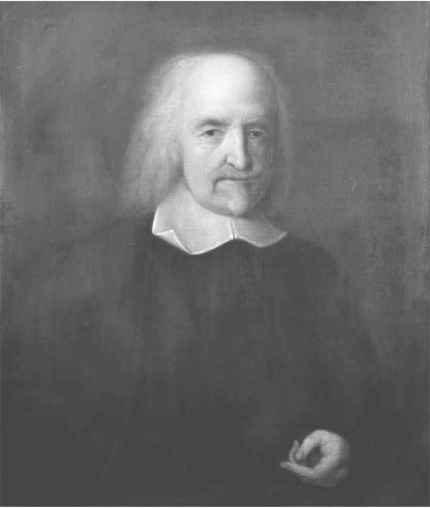
图6-1 托马斯•霍布斯。这幅画像由约翰•迈克尔•赖特（John Michael Wright）创作于1669年或者1670年，画中的霍布斯当时82岁。（bpk，Berlin/Art Resource，NY）
当霍布斯的父亲因为与一位牧师打斗而被迫离开马姆斯伯里的时候，他更为富有的兄弟弗朗西斯承担起了教育霍布斯的责任。在接下来的几年中，霍布斯学习了拉丁文、希腊文和修辞学，并在14岁的时候，进入牛津大学的摩德林学院（Magdalen College）学习。他很少被学校的正规课程所吸引，直到6年之后他才取得了学士学位。虽然 经院哲学 注32 在当时是大学的核心课程，但他一直不太喜欢经院哲学。他在几年后写道，他想学习新的天文学和地理学，而不是亚里士多德的那些古典文集，他想“按照自己的想法来证明问题”，而不想按照亚里士多德的狭隘范畴。他对亚里士多德的轻视，以及走自己的路的决心，将在此后伴随着他的一生。
在他毕业之后不久，霍布斯被聘为了威廉•卡文迪许［即后来的德文郡伯爵（Earl of Devonshire）］的儿子的家庭教师及同伴。对于一个聪明而年轻的平民大学毕业生来说，这是一个相当有利可图的职位，霍布斯很可能毫不犹豫地就接受了这份工作。从此，霍布斯与卡文迪许家族的紧密关系将会伴随他一生，他在牛津大学学到的任何东西，都比不上卡文迪许家族对他的人生和学术成果产生的影响。卡文迪许家族是英国最伟大的贵族之一，他们的祖先可以追溯到征服者威廉之子亨利一世的统治时期。到了最近的时代，这个伟大的家族除了为国王提供传统的军事和政治服务之外，其家族成员本身也因为对“新哲学”的浓厚兴趣而声名卓著。举例来说，查尔斯•卡文迪许（Charles Cavendish，1594—1654），是一位受人尊敬的数学家；他的弟弟威廉（1592—1676），即纽卡斯尔公爵（Duke of Newcastle），在他的庄园里开办了一座实验室；还有威廉的妻子玛格丽特（1623—1673）是一位著名的诗人和散文家，对自然科学有着很高的热情。这些卡文迪许家族的成员，他们不是学者或者作家，就是艺术和科学的资助者，他们的乡间别墅是文化和学术生活的中心。作为卡文迪许家族的成员，霍布斯有机会得以进入了当时最高级的文学和艺术圈子。在卡文迪许家族的查茨沃斯庄园（Chatsworth）和维尔贝克庄园（Welbeck），他发现了在牛津大学期间从未经历过的学术挑战和刺激。
加入卡文迪许家族，霍布斯遵循了文艺复兴时期的学者所经常选择的道路，因为如果没有贵族的资助，就没有收入和资源，也不能自由追求自己感兴趣的学术研究。很多意大利伟大的艺术家和人文主义者（如莱昂纳多、米开朗基罗、皮科•德拉•米兰多拉）都曾得到过贵族或教皇的资助，包括佛罗伦萨的美第奇家族、米兰的斯福尔扎家族，以及文艺复兴时期的多位教皇。即使是当时声名显赫的伽利略，他也选择了成为美第奇宫廷的朝臣以作为庇护，而他的世俗身份则是帕多瓦大学教授。在英国，博学家托马斯•哈里奥特（1560—1621）加入过沃尔特•罗里（Walter Raleigh）爵士家族，后来又加入了诺森伯兰伯爵（Earl of Northumberland）亨利•珀西（Henry Percy）家族，与霍布斯同时代的数学家威廉•奥特瑞德（William Oughtred，1575—1660）则是阿伦德尔伯爵（Earl of Arundel）之子的一位家庭教师。
在霍布斯选择传统资助方式的同时，另一位有抱负的文学家正在寻求其他方式的经济保障。威廉•莎士比亚通过在公开市场上表演和出售他的戏剧，过上了富裕的生活。当时的大多数剧作家都在像他那样出售剧本，只不过很少有人能像他那样成功。数学家亨利•布里格斯（Henry Briggs）在新成立的伦敦格雷欣学院（Gresham College）谋得了一个职位，他成为英国首位靠公开授课取得收入的几何教授。即使是牛津大学和剑桥大学这样出了名的保守大学，虽然他们主要是为青年人提供大量古板的中世纪课程，但偶尔也会对更现代的学者敞开大门。这其中的一个就是布里格斯，他成为牛津大学第一任萨维尔几何学教授。霍布斯选择依附于贵族，这在当时并非是不寻常的，不过到了17世纪中期，霍布斯发表他最重要的作品的时候，这种与贵族之间的关系似乎已经显得颇为过时了。由于他本身年事已高，再加上他成长于伊丽莎白一世统治的辉煌时代，因此，这就使得霍布斯在他大部分朋友和对手中间显得独树一帜。
不管是否过时，贵族的资助都具有很多的吸引力，霍布斯也充分利用了这个优势。在1610年到1630年之间，霍布斯曾跟随卡文迪许家族的年轻贵族们，先后三次周游欧洲大陆。霍布斯很好地利用了这些旅程。在1630年旅行到意大利时，他拜访了令他钦佩的伽利略，他曾对伽利略大加赞赏：“他为我们打开了自然哲学的大门，即有关运动的知识。”在巴黎，他结识了马兰•梅森，这位修道士是欧洲“学术界”的信息中转站，他与很多学者保持着联系，在众多学者之间传播彼此的疑问、意见和学术成果。通过梅森，霍布斯接触到了哲学家笛卡尔、数学家皮埃尔•德•费马和博纳文图拉•卡瓦列里，以及许多其他学者，从此真正成为欧洲学术界的正式成员。
通过他与卡文迪许家族的关系，霍布斯还结识了另一位杰出人物。在17世纪20年代的很多年里，他曾担任过弗朗西斯•培根的私人秘书。在当时，培根不仅是一位哲学家，而且是实验科学的伟大发起者。培根与同时代的大陆学者特别是笛卡尔不同，他认为应该通过归纳法（系统地收集观察和实验结果）获取知识，而不是通过纯粹的抽象推理。培根曾是英国领先的法学家之一，曾担任詹姆斯一世手下的大法官，直到他在1621年被指控贪污并遭弹劾为止。退休之后，他转向了哲学家，把多数时间都用在了整理自己的哲学思想上面，主要涉及自然科学及其正确的研究方法。事实上，培根几乎所有的知名作品都可以追溯到霍布斯与他结识的那段时期，即从他被迫退休到1626年去世的这段时间。奥布里曾提到过，在培根位于高阑城（Gorhambury）的庄园里，霍布斯如何陪在他身边与他一起散步，并记录下这位老人的思想。据说，培根在他的所有秘书当中比较偏爱霍布斯，因为只有他明白自己在记录什么。霍布斯与培根的交往，表明卡文迪许家族的贵族关系网为他提供了接触培根的机会。但不无讽刺的是，在以后的岁月里，那些自认为是培根的真正继承者并把培根的思想付诸实践的学者，却把培根的前秘书霍布斯视为了最危险的敌人。
霍布斯作为一名贵族的家臣所享有的另一个优势是，他没有必须发表学术成果的压力。莎士比亚必须源源不断地创作戏剧才能维持生计，亨利•布里格斯必须在大学教授课程，甚至克拉维斯在罗马学院也要教课和编写教科书。但是，这些受到大家族资助的学者，他们之所以能够获得资助，大部分是因为与资助他们的贵族保持着良好的陪伴关系，而不是因为他们的工作成果。这就使得接受资助的学者们可以过得相对宽松和自由，他们能够有时间去进行思考和研究。但这也产生了一个奇怪的后果：例如托马斯•哈里奥特，他被誉为是欧洲领先的数学家，对他手稿的现代研究也表明，他对这个声誉当之无愧。但他终身都从属于罗利家族和珀西家族，结果在他身后留下了数以千计未曾发表的数学论文。
一般情况下，这也注定会成为霍布斯的命运。在作为卡文迪许家族家臣的这几十年里，尽管他被公认为是一位才华卓越的人才，不仅与英国本土的领先学者有着交往，而且还与欧洲大陆的领先学者保持着联系，但他却没有发表过任何作品，只是翻译过古希腊历史学家修昔底德（Thucydides）的《伯罗奔尼撒战争史》（Peloponesian War ）。虽已人到中年，但这却是霍布斯到目前为止发表的唯一作品，而且从当时的情况来看，也很有可能不会再发表任何作品了。真这样的话，霍布斯将只能给后人留下一个模糊和朦胧的印象，对他的了解也只能是他翻译的那本历史古籍。但在1640年，当他52岁的时候，霍布斯舒适的世界崩溃了，突然之间他开始了快节奏的写作和出版，从此笔耕不辍，一直到去世。
1640年的内战危机，对于卡文迪许家族来说犹如晴天霹雳一般。像大多数英国的伟大贵族一样，卡文迪许家族也是坚定的保皇党，在整个空位期对斯图亚特王朝忠贞不渝。在他们看来，国会的起义只不过是一场平民叛乱，必须通过武力镇压下去，他们迅速拿起武器捍卫起了自己的国王。在早年的内战期间，未来的纽卡斯尔公爵威廉•卡文迪许，以及德文郡公爵之子查尔斯•卡文迪许，都在查理一世的军队中担任过最高指挥官，并且和他们的国王一样遭遇到了悲惨的命运。查尔斯在1643年战死沙场。 在1644年的马斯顿荒原战役 注33 中，保皇党惨遭失利，威廉被迫逃往大陆。他最终辗转到了巴黎，加入了在那里跟随查理一世的宫廷一起流亡的家族成员，其中就有托马斯•霍布斯。
对于霍布斯来说，在内战中选择保皇党一边是一个自然的选择。虽然他本身是一个平民，但他是卡文迪许家族中的一位受人尊敬的成员，并且他们都持有相同的社会和政治立场。1640年，在刚刚出现战乱征兆的时候，他收拾行装搬到了巴黎，在那里他加入了一个不断壮大的保皇党群体。在妥善安顿下来之后，他很快与梅森以及保持通信的法国学者重新取得了联系。作为斯图亚特宫廷的领先学者，他最终获得了成为威尔士亲王（未来的查理二世）的家庭教师的机会，但在这时他第一次遇到了他的反对派，从此这些反对的声音将一直伴随着他的余生。一些朝臣反对关于他的任命，其理由是，他是一个唯物主义者和无神论者，这会让未来的国王沾染上他的异端观点。最终达成了一个决定，霍布斯可以成为皇室教师，但他必须答应不会接触哲学和政治，只能专注于他的专业领域。这个专业领域当然指的就是数学。
如果忠诚而坚定的霍布斯曾在斯图亚特宫廷产生恐惧，甚至厌恶的话，那么其中的原因是显而易见的。在1645年，当他可能被任命为皇室教师时，他不再只被认为是卡文迪许家族的一位谦卑的学者，而被认为是一个非传统的、具有挑衅性的哲学家，他的观点很可能会冒犯各种神职人员以及很多忠诚的保皇党人士。在霍布斯抵达法国之后不久的1642年，他就发表了他的第一本政治著作，名为《论公民》（Elementorum philosophiae sectio tertia de cive ），这是一部广博的大部头。这本书全部用拉丁文写成，主要针对专业的哲学家，而不是皇室朝臣，但其内容足够让查理一世的顾问们把霍布斯归为嫌疑对象。
大多数人处于霍布斯的这种情况下，都可能会设法缓和与批评者的关系，或者至少会克制自己，不再进一步冒犯批评者。那些朝臣毕竟都曾是他的同僚，也是在恢复君主制的斗争中的盟友。但他的批评者们很快就发现，霍布斯并没有低调处理自己的观点，或者回避冲突。1647年，他再版了《论公民》（众所周知的名称），并且在三年之后，他又出版了英文版本的《论公民》（On the Citizen ），以便让不管是英国本土的，还是流亡在外的同胞学者，都能更好地理解这部著作。就在同一年，即1650年，他又出版了两本英文分册《论人性》（Human Nature ）和《论政体》（De Corpore Politico ，or the Elements of the Law ），这两本书共同解释了他对人性以及由人性导致的政治秩序的看法。最后，在1651年，他的创作洪流终结于一部巅峰之作：《利维坦》。这部作品使他成为不朽的哲学大师。及至此时，由于他出版的作品的原因，霍布斯成了斯图亚特宫廷里不受欢迎的人。1652年，无处可去的霍布斯离开了巴黎，横渡英吉利海峡返回了英国。虽然他直到28年之后才去世，但他从此再未踏出过英国。
《利维坦》是英国内战的产物，它是由许多因素共同作用产生的结果。在卡文迪许家族度过的长达几十年的沉默岁月里，霍布斯悄然建立起了一套详尽的哲学体系。它应该包括三个组成部分，首先是“论物体”（On Matter），然后是“论人”（On Man），最后是“论公民”（On the Citizen）。鉴于他过往的生活轨迹，我们完全有理由怀疑，在正常情况下这些论文是否会问世，但1640年的内战危机打断了霍布斯有条不紊的准备工作。他认为不能再按照自己的哲学体系系统地进行写作，在当前的局面之下，有关政治生活的第三部分是最紧要的。由于感觉到时间紧迫，于是他首先完成了《论公民》的写作并很快付印出版（因此它被正式地称为“第三部分”）。随后，他又很快创作完成了其他一些政治论文，最终成就了巅峰之作《利维坦》，这本书概括了他的整体哲学思想，但更加侧重于政治方面。在英国被内战搅得兵荒马乱的时候，关于物质本质的冷静探讨必须让位于为建立和平、稳定的国家而提出的解决之道。
《利维坦》不只是内战的产物，更深刻地来看，它也是霍布斯所见到的黑暗现实的反映，也是他在绝望中提出的解决方案。战争的阵痛笼罩着英国，社会处于无政府状态，同胞们自相残杀，《利维坦》中的每一行文字都萦绕着战争的阴霾。在每个清晰而庄严的词语背后，在每个精巧的哲学论证背后，隐约可见的是暴徒在欺辱他们的同胞，庄园化为了灰烬，马斯顿荒原和纳斯比的血腥战场，以及被谋杀的国王。霍布斯看到，国会已经废除了国王，并施行了各种形式的政治和社会颠覆活动。混乱取代了秩序，无休止的内战取代了平静的生活，混乱的局面似乎在愈演愈烈。现在似乎已经到了混战的地步，不管对手是谁，也不管是什么理由。这已不再是国会对抗国王的战争，也不再是长老会对抗圣公会的战争，而成了所有人对抗所有人的战争。霍布斯认为，结束它的唯一办法就是恢复君主专制，将无政府和颠覆的恶魔驱回地狱，并将它们永远封存在里面。《利维坦》将展示如何实现这一目标。
结束内战混乱的第一步是要了解究竟是什么导致了内战，霍布斯指出，在英国肆虐的不是政治和宗教分歧，而是更基本的东西：人的本性。霍布斯在《利维坦》中解释道，人类并非是特别具有攻击性的生物。他们所渴望的无非是食物、性爱、一些物质享受以及能够享受这一切的安全感。问题是，如果没有一个既定的政治秩序——霍布斯称之为“国家”（Commonwealth），人们就没有安全保障。一个人所创造的东西或得来的物品，可能被另一个人夺走而不承担任何后果。因此所有人都会对自己的邻居感到恐惧，人们获得安全感的唯一方式，就是获得控制其他人的权力。换句话说，恐惧导致了人们对邻居发起战争。霍布斯警告说，遗憾的是，权力永远不会导致安全感，因为人们一旦得到了权力就必然会寻求更多的权力，他写道：“其中的原因，并不一定因为是一个人……不能满足于适当的权力，而是因为他不能保证，如果不继续获取更多的权力，仅靠现在所拥有的权力就能够过上好的生活。”
霍布斯指出，如果让人们自由发展，人们对邻居的恐惧会导致战争，而战争会导致更多的恐惧，这反过来又会导致更多的战争。在这种情况下，投资于未来是没有意义的，生活是痛苦的：“这样就没有产业发展的空间，因为其成果是不确定的，因此，所有的耕作、航海、建筑、拆迁搬运工具、地貌的知识、时间的记载、艺术、文学、社会等等都将不存在，最糟糕的是，人们不断处于暴力死亡的恐惧和危险之中。”这就是霍布斯所谓“自然状态”中的生活，他概括出了也许是政治哲学中最著名的一句话：在没有政治秩序的情况下，人们的生活是“孤独、贫穷、龌龊、野蛮和短命的”。
霍布斯的记载，正是英国在内战时期的情况。由于废除了国王，英国人已经回归到了自然状态，展开了一场“所有人对所有人的战争”。为了挑起战争，人们会给出各种各样的理由。长老会和独立派会互相指责对方错误的宗教教义，平等派和掘土派会谴责富人，并且声称所有人都是生而平等的，第五王国派则宣称他们是在为审判日扫清障碍。但是，所有这些各式各样的说法，在霍布斯看来都只不过是表面现象，因为英国人彼此开战的真正原因很简单，那就是恐惧。随着君主政权的崩溃，人们对邻居的掠夺变得毫无防备措施，为了获得一定程度的安全保障，他们不得不率先向对方发起攻击，其结果就形成了一个无休止的以暴制暴的恶性循环。霍布斯曾经见到过这种情况。在1610年，当他陪同卡文迪许家族的主人一起访问法国时，当时正是法国国王亨利四世遇刺身亡之后不久。那些充满恐惧和混乱的岁月给年轻的霍布斯留下了深刻的印象，他永远也不会忘记，在废除君主的国家所发生的惨剧。1640年的英国人为他们废除君主的行为给出了各种各样的理由，1610年的法国人虽然给出的理由与英国人不同，但他们同样给出了各种各样的理由。但这些理由都不是最重要的，霍布斯认识到，正因为在没有君主的国家，每个人都生活在恐惧当中，所以他们才会对自己的邻居发起战争。
但是，如果永恒的内战是人类社会的自然状态，那该如何平息它呢？人们如何使自己和家庭获得安全保障，从而使农业、商业、科学和艺术能够得到蓬勃发展呢？霍布斯指出，答案就在于人类独有的属性：理性。动物永远无法逃脱自然状态，而有些人类也是如此，比如“美洲很多地方的野蛮人”。但理性给了人们一种选择。人们可以选择留在痛苦的自然状态，也可以选择认识自己的现状，然后理性地寻求能够使自己脱离这种自然状态的解决办法。不过，一旦他们做了这样的选择，那么也就意味着没有了其他的选择，因为理性会引导他们最终找到唯一的解决办法：利维坦。
什么是利维坦？它远远不只是一个专制统治者，也不是一个专制国家。它可以说是国家中的所有成员的统一化身，即主权者（Sovereign）。在人们想方设法逃脱自然状态而近乎绝望的情况下，人们得出的结论是，唯一的出路就是他们每个人都要放弃自己的自由意志，并从属于主权者的意志。主权者从而也会采纳国家内所有成员的个人意志，如此一来，他的行为就是所有人的行为。这就是解决问题的关键。人们不只是屈服于最高统治者的意志，使自己的意志服从他的意志，而是，无论主权者的意志是什么，它同时也代表了每个个人的意志。霍布斯指出，无论君主选择做什么，国家中的每个人都将承认并认同这种行为。在利维坦的统治之下，不可能再发生内战，因为利维坦体现了其臣民的意志，而没有哪个臣民会希望发生内战。最终的结果将是一个完美的统一政治体，“它不仅能够达成一致意见，而且它还由同一个人体现这个由所有人组成的真正统一体”。
“这个团结一致的统一体就称为国家。”霍布斯写道：
这就是伟大的利维坦的诞生，或者（更恭敬地说）这就是有朽的神（Mortal God）的诞生，它位于不朽的神之下，我们的和平与保障全都仰仗于他。由于国家中的每个人都把权力交给了他，因此它就能行使这种强大的权力……在面对威胁时，他就能实现所有人的和平意志……
在霍布斯看来，这就是利维坦的最核心本质：为了确保实现和平，“由一个人集中体现所有人的意志”。
霍布斯的国家理论可谓惊人地大胆。他没有讨论人类社会中的对抗力量，也没有评价不同形式的政治组织，而是直截了当地以“为达目的不择手段”的哲学风格寻找解决办法。他声称，人类社会存在的问题显然就是在自然状态下的无休止的战争。解决办法也很明显，就是创建专制的“利维坦”国家。霍布斯从纯粹的思维逻辑上一步一步地进行了他的论证，没有留下任何争论或者否认的余地：人的本性会导致自然状态，从而导致内战，从而导致个人意志的屈从，从而导致利维坦。因此，利维坦是唯一可行的政治秩序。证明完毕。
从一开始，许多人都认为霍布斯的利维坦国家是令人厌恶的。在这个体制下，国会应该被放在哪个位置？圣公会或者其他教会应该被放在哪个位置？但是，即使是那些排斥霍布斯的结论的评论家们，也很难在他的论证中找到缺陷。霍布斯的错误究竟在哪里呢？他的假设是合理的，而且每个步骤本身也似乎是合理的：的确，人类是贪婪和自私的；的确，人们之间有竞争并彼此恐惧；的确，出于恐惧他们很容易互相攻击，并且一次攻击不可避免地会导致更多的攻击。这一切都看似那么地合理，很难对他的每一个具体步骤进行辩驳。等到读者意识到所有这些步骤将得出何种结论时，为时已晚了。在没有发现任何错误步骤，甚至连看似不可信的步骤都没遇到的情况下，读者已经不知不觉地承认，唯一可行的国家制度只能是霍布斯的“有朽的神”——利维坦。
在很多与霍布斯同时代的人看来，这是一个非常令人排斥的结论，但由于利维坦有着强大的推理过程，所以人们又很难找到问题究竟出在哪里。霍布斯通过演绎推理得出了合乎逻辑的结论，不管可能得出什么结论，这种推理过程都使得读者跟随他的思路得出了他的结论。他的推理过程就好像在进行几何证明一样。
利维坦由无数的个人联合起来形成了一个单一的意志，这无疑是一个美好的设想。但即使利维坦如此大胆，并且如此美好，它作为一个政治组织，也势必要统一行动。它并不只是一个强大的中央集权国家——像当时的法国那样，很难有政治异议，因为国家会对异议实行压制政策，而是一个根本不可能产生政治异议的国家。臣民反对君主就意味着他们在反对自己的意志，这就形成了一个悖论，并且在逻辑上也是不可能的。事实上，在利维坦中，臣民与国家之间不再具有我们通常所理解的那种关系，因为利维坦不是一个政治组织，而是一个统一的有机体。它是由所有臣民组成的一个有机体，并且主权者被单独赋予了一个统一的意志。霍布斯在引言中也做了同样的解释：“伟大的利维坦，被称为国家……他就是一个‘人造的人’（artificial man），但他比普通人具有大得多的身材和力量。”在一个人的身体中，他的一只手，或者一只脚，甚至或者一个头发毛囊都不能反对人的意志。同样的道理，这个国家中的成员也只不过是这个国家机体中的组成部分，并且不能反对国家的意志。
在《利维坦》的早期版本中（许多后来的版本也是如此），有一幅卷首页插图，很能说明霍布斯哲学中的国家本质。这幅雕刻画的作者是法国艺术家亚伯拉罕•博塞（Abraham Bosse）。画中的前景部分显示了一片和平景象，有山峦和河谷，田野和村庄，繁荣有序的城镇，排列整齐的小房屋，高高耸立的大教堂。引人注目的不是这些田园风光，而是在前景后面浮现出的人物：一个巨人国王。他就像耸立在小人国里的格列佛，他张开的双臂，仿佛是要拥抱自己的领地；他头上戴着皇冠，左手拿着主教的权杖，右手拿着一把宝剑，统治着这片土地，保卫它免受敌人侵袭；他统治着这片土地，并且毫无疑问，正是他为这片土地带来了和平、秩序和繁荣。
乍看起来，这幅画看起来像一幅广告，它在推广法国政治模式中的那种强大的中央集权君主制的优点。但这个高大的国王看上去有一点奇怪。他的身体凹凸不平，似乎穿着某种片状的铠甲。通过仔细观察你就会发现，这原来并不是铠甲，而是很多站在一起的人。国王的身体实际上是由国家中的个人组成的。每个个人的力量都是势单力薄的，只不过是这个巨大身体中的一个微小组成部分。但当他们联合起来，以一个统一的意志行动时，他们就成了无所不能的“利维坦”。
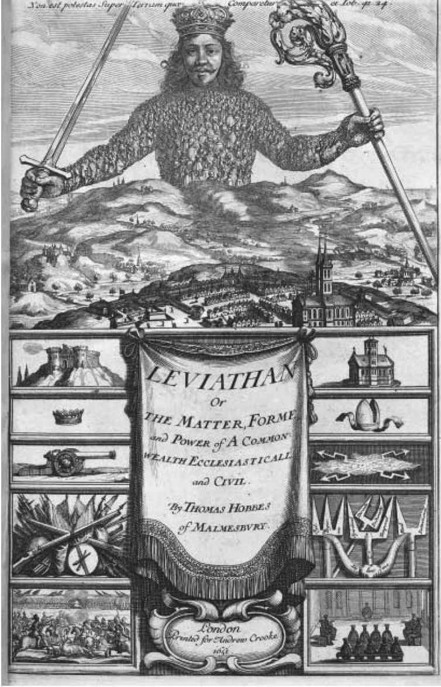
图6-2 利维坦。1651年版《利维坦》的卷首页。皇冠周围的文字为：“他的权力至高无上（Non est potestas super terram quae comparetur ei）。”（British Library Board/Robana/Art Resource，NY）
卷首页所描绘的国家是如此的强大并且包罗万象，它没有为独立个体留下任何空间。在霍布斯看来，任何不直接从属于主权者的个体，都会对利维坦和国家的稳定构成威胁，如果不妥善对待的话，这种威胁就会滋生分歧和冲突，最终会导致再次引发内战。在霍布斯的书中，最“恶劣”的冒犯者当属天主教会，因为它声称自己高于一切世俗权威，因此它在《利维坦》中占去了整个章节，题为“黑暗王国”。在英国，造反的国会当然是霍布斯的讨伐对象，同样还包括那些看似温顺的机构，如圣公会、牛津大学和剑桥大学。相对于大多数的其他教会，霍布斯更看好圣公会，因为它至少在名义上服从于国王。即便如此，在霍布斯看来，英国圣公会的神职人员也表现出了太多的独立性。而其他教派，尤其是长老会，更是表现得非常糟糕，因为他们独立于国家之外建立了自己的统治制度，而霍布斯也没有忘记指责他们直接导致了内战的爆发。霍布斯之所以对大学也感到愤怒，是因为它们的学术牢牢地植根于中世纪的经院哲学，这就与“黑暗王国”产生了联系，更重要的是，在霍布斯看来，大学似乎会成为危险学说或思想的温床——这可能与主权者的意志产生冲突，并将导致无休止的争论。霍布斯的保护者纽卡斯尔伯爵在查理二世复辟几年之后曾警告他说，争议“如同笔下的内战，不久之后就会涌现出来”。
霍布斯坚持认为，在大学或者其他地方，决定哪些观点和学说应该被传授，哪些应该被禁止，这是主权者独有的特权。如果任由牧师宣讲他们想要的教义，或者任由教授传授他们想要的学说，那么分裂、冲突和内战将会很快随之而来。霍布斯更进一步地指出：利维坦不只是决定哪些教义对国家是有害的，哪些是有益的，而更根本的是，决定什么是对的，什么是错的。在霍布斯看来，在自然状态下是没有对与错之分的，因为每个人都会尽自己最大的努力来保证自身利益。只有在利维坦出现时才会有对与错的概念，而对与错的标准很简单，“法律就是唯一的衡量标准，法律体现了国家意志”。遵循由主权者制定的法律就是正确的，违反它就是错误的，并且这适用于一切情况。任何寻求其他来源的权威（如“上帝”、传统或古代的权利）的行为，都是在破坏国家的统一，并很可能会阴谋对抗国家以谋取一己之利。是非与善恶的决定权都掌握在主权者手中。
作为政治理论中的一项实践活动，《利维坦》提出了前所未有的大胆构想，它在西方思想史上的崇高地位可谓是实至名归的。但霍布斯提出的构想是否真的有国家曾经实现过呢？毫无疑问，的确有过一些政权追求过这个理想，包括20世纪的极权国家——希特勒的德国。在这样的国家中，人民（至少在原则上）由其领导者作为统一代表，领导者的意志代表了整个国家的意志。像利维坦一样，他们也不容忍任何异议，异议被认为是违反国家意志。但即使是20个世纪的纳粹黑暗政权，也从未真正实现霍布斯的想法。从一方面来讲，不管异议是零星的还是温和的，他们都必须面对这些真实存在的异议，而霍布斯实际上已经在定义上消除了这些异议。
霍布斯哲学中的利维坦却是不同的事物，在主权者制定的法律之外，不存在更高的（宗教、神秘主义或者意识形态方面的）真理，任何声称存在这种真理的人都被认定为国家的敌人。利维坦代表了一切并高于一切，并且为其自身而独立存在。作为对抗混乱的堡垒，它的存在绝对是必要的，但它并不主张任何观点，并坚决拒绝所有更高的理想或目标。它所关心的只是国家、主权者以及主权者的意志。
霍布斯针对17世纪40年代的内战危机提出的解决方案，使他获得了原创思想家的声誉，但也使他与其他朝臣产生了隔阂，这不仅包括被他鄙视的国会议员，而且还包括他所支持的保皇党人。可以肯定的是，《利维坦》中的很多内容得到了保皇党的认可，特别是关于由一个人独自领导一个强有力的中央政府的主张，以及对议员和所有持不同政见者的谴责，称他们是谋求私利的国家叛徒。但在书中也有很多内容令保皇党感到担忧。因为，由合法的国王统治他的国家和人民这是神授的权利，他是神的选择，没有别人可以取代。但利维坦却不是靠神授的权利来统治的，它只是作为一种防止内战的实际需要。原则上来说，任何人都可以充当这个角色，只要他有能力保卫这个国家并维护和平。如果国王不能做到这一点，那么他在原则上也可以由别人所取代——就如同英国的现实情况一样。有些保皇党开始对这种观点愈加感到担忧，他们指责霍布斯的利维坦是在支持克伦威尔的摄政，而不是在支持国王的统治。这种说法虽然不正确（《利维坦》发表于克伦威尔成为护国公之前两年），但也并非没有道理：《利维坦》实际上不是为了捍卫合法的君主制，而是在为一个极权政体提供论据。再考虑到《利维坦》已经冒犯了所有的神职人员，包括圣公会，还有他的法国天主教雇主，那么对于霍布斯没有被保皇派吸收成为国王的追随者，这其中的原因也就显而易见了。霍布斯没有被举荐为保皇党的旗手，而是被解除了家庭教师的职务，被法国宫廷驱逐了出来。具有讽刺意味的是，他不仅失去了资助，而且只身回到了处于革命之中的英国。
令霍布斯感到大为失望的是，似乎没有人愿意把利维坦作为希望结束内战而开出的极端药方。但霍布斯认为他自己是对的，不管其他人怎么想。他认为，为了消除人们的疑虑，所要做的就是更加清楚而全面地阐明他的整个哲学体系。一旦他一步一步地合理解释了他是如何得到这个结论的，他敢肯定，那些怀疑者除了接受他的政治药方之外，将没有别的选择。霍布斯决定继续完成他的一系列政治著作，让《论公民》和《利维坦》获得哲学上的支持。在卡文迪许家族度过的漫长而沉寂的几十年里，霍布斯构想出了一套涵盖各个方面的完整哲学体系，而这两本书只是其中的最后一部分。迫于政治危机，霍布斯首先完成了最后的部分，并且匆忙付印出版，他本希望这两本书能有助于结束内战，并恢复国王政权（他很快便失望而归）。现在，他又回到了英国。为了支持他的论点，他决定继续写作，完成前两部分内容。
1658年，霍布斯出版了《论人》（De Homine ），这是一部关于人的本性的著作，这本书确立了他愤世嫉俗的声誉，但相比《利维坦》来说并没有受到多少关注。但是，他的核心原则出现在了三年前出版的《论物体》（De Corpore ）一书中。《论物体》是一部厚重的专业著作，针对的是专业哲学家，书中讨论了很多深奥的问题，例如普遍性是否真正存在，物质是否可以延伸。它没有《利维坦》中那种生动的比喻和张扬的修辞，它的读者大概也只有一小部分。然而，不是《利维坦》而是《论物体》，使霍布斯卷入了一场持续他的余生的个人战争之中。因为在这部书出版之前，一个决心与他为敌的人，暗中从霍布斯的印刷工那里获得了未经发表的文本，并且正在准备具有毁灭性的攻击。这个人不是一名敌对的哲学家，他不是在伺机针对物质或运动方面的一些学术定义来挑战霍布斯。他是一名数学家，他的名字叫约翰•沃利斯。
霍布斯在数学上的入门称得上是一段奇遇。他在牛津大学时没有学习过数学，直到40岁时，由于一次偶然的机会，才与数学结缘。当时他正在和一位年轻贵族雇主访问日内瓦。他的传记作者奥布里写道：“在一位绅士的图书馆里，一本《几何原本》打开放在书桌上，书上的内容正是第47项定理（即《几何原本》第一册中的定理47）。”所有了解经典数学的人都知道，这是毕达哥拉斯定理，该定理指出，一个直角三角形的斜边的平方等于它的两条直角边的平方和。霍布斯看了这个命题，“他惊讶地说道，‘上帝啊，这是不可能的！’于是，他继续看完了这个命题的证明过程，这使得他又参考了之前的一个类似命题”，然后他又参考了更早之前的一个命题，依此类推，“就这样，他被严格的证明过程彻底征服了，最终相信了这个定理”。根据奥布里的记载，“这让他迷恋上了几何学”。
在随后的几年里，霍布斯努力弥补了由于起步较晚而落下的几何学知识。到了17世纪40年代，他已经与同时代的领先数学家保持着经常性的联系，包括笛卡尔、罗伯瓦尔和费马。当英国几何学家约翰•佩尔（John Pell）与他的丹麦同事隆哥蒙塔努斯因为学术问题而争论得不可开交时，他选择向霍布斯寻求支持，因为他认为霍布斯具有足够的权威。当笛卡尔在几年之后去世时，法国朝臣塞缪尔•索比耶曾称赞，他和“罗伯瓦尔、博内尔（Bonnel）、霍布斯和费马”等都是世界上最伟大的数学家。这里必须指出的是，索比耶是霍布斯的好朋友，他对这位英国数学人才的高度评价可能不被广泛认可。但是这确实可以表明，当霍布斯担任流亡的威尔士亲王的数学家庭教师时，他已经成了当时最受人尊敬的英国数学家之一。
为什么霍布斯会如此迷恋数学呢？奥布里的叙述提供了一个重要线索：在几何学中，每个结果都是建立在另一个更简单的结果之上，所以人们可以逐步进行逻辑推理，从不证自明的公理开始，一直可以得到更为复杂的结果。当读者看到一些非常出乎意料的结果时，比如毕达哥拉斯定理，他就会“被严谨的证明过程所征服，从而相信这个定理”。这在霍布斯看来是一项了不起的成就：终于有一门科学可以真正地证明其结果，同时人们对其真实性又不会产生任何疑问。因此，他认为几何学是“迄今为止上帝赐予人类的唯一科学”，并且也是所有其他科学的合理模式。他认为，所有科学都应该像几何学那样进行证明，因为“如果没有充分和必须的条件，没有确定性的证明过程，那么最后得出的结论就不会具有确定性”。霍布斯指出，除了几何学之外，没有其他科学能够达到这么高的系统确定性，但这种情况即将发生改变：因为霍布斯已经进入了这个领域，他已经准备提出真正的哲学，他将像几何学那样系统性地构建自己的哲学，因此他的哲学结果也将具有同样的确定性。
从霍布斯出生以来的4个多世纪中，他被指控过很多罪名：在他这一生中，他（可能错误地）被指控过着放荡而不道德的生活，他（可能正确地）被指控是无神论者并且提倡反宗教思想。在后来，他又被指控具有极其冷酷的人生观，并且对人类历史上的一些最具压迫性和最凶残的政权起到了启示作用。但在这么长的时间里，从未有人提到过霍布斯是过度谦虚的。确实，当霍布斯展示因受到几何学启发而形成的新的哲学体系时，他丝毫没有流露出这种悲观的特征。相反，他的文字充满了攻击性和挑衅性。
在《论物体》中，霍布斯为卡文迪许家族的资助人德文郡伯爵写了一篇献辞，他在献辞中写道，在历史的大部分时间里，世界上几乎没有什么知名的哲学。诚然，古人已经在几何学上取得了巨大进步，并且最近在自然哲学上也取得了一些很重要的进步，这要感谢哥白尼、伽利略、开普勒以及其他人的研究成果。至于其他哲学，从柏拉图、亚里士多德到现在的哲学家，这些哲学都是有害无益的，他写道，“这些哲学已经陷入了希腊哲学的某种幻觉之中……充满了欺诈和污垢，一点也没有哲学的样子”，而有些人却把这误认为真正的哲学。这种假哲学不是在传授真理，而是在教人去疑问、去争论，因此，这些所谓的“哲学家”更应该受到质疑。最糟糕的当属“经院哲学”，即在大学里传授的中世纪亚里士多德哲学。他指责道，这是“有害的哲学”，它会导致不计其数的争议……这些争议会最终导致战争。霍布斯称这种可憎的哲学为“恩浦萨”（Empusa），即一种长有一条驴腿和一条青铜腿的希腊女妖，它代表着厄运的先兆。
霍布斯准备改变这一切。他解释道，自然哲学可能还年轻，最早也就能追溯到哥白尼，但公民哲学更加年轻，按照霍布斯的说法，“不会早于我自己的书…… 《论公民》”。这是他第一次使用了不容挑战的推理来证明国家中的一切权力，无论是宗教方面的，还是世俗方面的，都必须只来自于主权者。现在，霍布斯将在《论物体》中完成这项工作：他将奠定真正的哲学，以取代那些假的、有害的哲学，最终将征服那个女妖“恩浦萨”。在霍布斯看来，他的哲学不是对已经持续了数千年的哲学辩论所做出的一次贡献，而是对所有哲学的一种终结，它将会是终结一切讨论和争论的唯一真正教义。他写道，他的书篇幅可能并不长，但它的伟大程度丝毫不会受到影响，“如果人们关注的是它的内容的话”。他的很多批评者可能会对此产生争议，但霍布斯并没有太在意他们。他很坦率地指出，他们只是嫉妒这部著作而已，而他根本就没有想过要去安抚他们。《论物体》所体现出的才华终将会征服他们，他宣称，“我将通过消除嫉妒来为自己正名”，这并非带有讽刺意味。
霍布斯的新哲学将如何征服“恩浦萨”呢？答案很简单：通过几何学。过去的所谓哲学家之所以失败，是因为他们依靠的是有缺陷的、不确定的推理方法。霍布斯指责道，他们传授的是争执而非智慧，他们“按照自己的幻想来解决所有问题”。结果，他们没有带来和平与一致意见，而是导致了冲突和内战。相反，几何学会迫使人们达成共识：“因为在几何学中，当其他人发现了他的错误之后，没有人会愚蠢到既然发现了错误却还坚持这个错误的地步。”结果，几何学将会产生和平，而不是冲突，霍布斯的哲学将遵循几何学的指引。他在献辞中解释说，《论物体》是写给那些“精通数学证明的细心读者”的，而其中的某些部分是仅写给几何学家的，但几何方法的精神可以延伸到各个领域：“物理学、伦理学和政治学，如果这些学科也能得到妥善证明，那么它们的确定性也可以达到不逊于数学定理的程度。”只要人们能够遵循明确和不容置疑的几何推理方法，那么就必然能够“战胜并赶走这种形而上学的‘恩浦萨’”。
在他自己的作品当中，霍布斯认为自己完全遵循了几何模型：他的哲学体系（在所有部分全部出版之后）开始于《论物体》中的简单定义，就像欧几里得的《几何原本》开始于基本的定义和公设。并且，正如《几何原本》由简单和不证自明的公设证明出复杂和令人惊喜的结果一样，霍布斯的三部作品也是如此，从《论物体》，到《论人》，再到《论公民》。从讨论定义（他称之为“名词”）开始，逐步涉及到关于空间、物质、量体、运动、物理学、天文学等方面的一些问题。最终，在这条长长的推理链的末端，他将到达那个最复杂和最紧迫的主题，也是整个理论体系的终极主题：国家理论（the theory of the commonwealth）。当然，对于霍布斯是否真正地做到了遵循几何标准，有一些人存在异议，但霍布斯没有在意这些异议。他坚信，他从第一个定义开始所进行的系统而细致的推理，能够确保所得出的关于合理国家政权的结论是绝对正确的。实际上，它就像欧几里得的毕达哥拉斯定理那样具有确定性。
如果霍布斯的整个哲学体系是按照宏伟的几何大厦构建的，那么他的政治理论将具有同样的几何结构特征。这是因为国家与几何学具有相同的基本特征： 两者都是完全由人类创造的，因此两者都是能够被人类彻底了解的。“几何学是……可证明的，因为我们所推理的几何线段或图形是由我们自己绘制和描述出来的；同样，公民哲学也是可证明的，因为是由我们自己建立的国家。”霍布斯声称，我们充分掌握了关于如何创建理想国家的知识，就像我们充分掌握了关于几何真理的知识一样。在《利维坦》一书中，霍布斯把这个原则付诸实践，他创建了自己所认为的完全合乎逻辑的政治理论，他所得出的结论在各方面都像几何定理那样具有确定性。
具有几何证明那样的确定性，这并不只是国家的广泛原则。由利维坦确立的用来治理国家的实际法律，同样具有几何定理那样的逻辑力量，并且具有无可争议的正确性。正如霍布斯所说的：“使国家与一定的法律保持一致，就像算术和几何学那样。”这是因为法律本身定义了什么是正确的和真实的，以及什么是错误的和虚假的。在国家面前，在自然状态下，无论正确与错误还是真实与虚假，它们都是空洞的词语，它们是没有意义的。在自然状态下，没有正义与非正义，正确与错误可言。但是人们一旦放弃了自己的个人意志，把它交给唯一的权威利维坦，他就会定下法律并赋予这些词语意义：“正确”就是遵守法律，“错误”就是违反法律。如果有人指责主权者的法令是“错误的”，并且应该得到改正，那么他就是在说没有意义的废话，因为，什么是“错误的”是由法令本身定义的。反对法律就如同否定几何定义一样荒谬。
霍布斯当然远非唯一一个希望将几何学理想化的近代早期学者。仅在几十年前，克拉维斯同样对几何学大加赞赏，并且向他的SJ会士们保证，在对抗新教的斗争中，几何学将成为一个强有力的武器。但是，对于克拉维斯和霍布斯来说，除了两者对几何学的赞赏之外，他们几乎没有什么共同之处。克拉维斯是一名SJ会士，他所接受的教育是亚里士多德哲学和经院哲学，这些哲学被他所在的宗教团体青睐，而且在罗马学院得到了充分完善。他还是反对宗教改革的战士，努力传播上帝的教义，并引发了天主教精神的觉醒。他痛恨新教徒、唯物主义者以及各种异教徒。他毕生的志向是要在世界上建立一个上帝的王国，这就意味着教皇高于一切世俗的统治者，教会高于一切世俗的统治机构。与其相反的是，霍布斯唯独鄙视的就是经院哲学，认为“精神”是一个毫无意义的词语，世界存在的只有物质和运动。像“精神”和“不朽灵魂”这样的词语，它们的唯一作用就是供无耻之徒和腐败的神职人员用来吓唬人的，只是为了让人们屈服于他们的意志。最后，教皇将具有高于国王的统治权力的说法，对于霍布斯来说是绝对不能容忍的。任何对公民主权者的绝对权力的侵犯都将导致分歧、分裂，并且不可避免地会导致内战。
克拉维斯去世于1612年，远早于霍布斯出版其作品的时间，几乎可以肯定的是，他从未听过这位英国人的名字。但是，如果他有机会阅读到霍布斯的任意一部著作（《论公民》《论物体》《利维坦》《论人》）的话，你一定能够想象得到他会做出何种反应。对于克拉维斯这样一位虔诚的SJ会士来说，霍布斯毋庸置疑是一个不信神的唯物主义者和一个异教徒，并且是天主教的敌人，他的书应该被禁止。如果霍布斯不幸落到了克拉维斯及其兄弟会成员的手里，他一定难以逃脱严厉的惩罚。与此同时，霍布斯个人对SJ的评价也相当苛刻。他指出，他们的目标无非是为了吓唬人，“阻碍人们服从自己国家的法律”。在霍布斯看来，所有神职人员均是如此，但他对天主教会另有一番特别的鄙视。SJ希望建立一个由教皇统治的普遍的全能教会，他们的这个梦想对于霍布斯来说简直是最黑暗的噩梦。
这两个水火不容的天敌，只有在几何学的作用上才能达成完全一致的观点。克拉维斯认为欧氏几何是正确的逻辑推理的一个典范，它将确保罗马教会取得胜利，并在世界上建立一个普遍的基督教王国，教皇处于权力的顶点。霍布斯的利维坦国家在很多方面与SJ的基督教王国恰恰相反：它由一个世俗权威进行统治，这个权威体现了人民的意志，而不是教皇的意志，教皇的权力是由“神”授予的；国家的法律均来自于利维坦的意志，而不是来自于“神”或圣经的法令，并且利维坦绝不容忍任何神职人员侵犯他的绝对权力。但在两者的深层结构上，SJ的宗教王国与霍布斯的国家惊人地相似。两者都是分等级的专制制度，统治者（无论是教皇还是利维坦）的意志就是法律；两者都否认异议的合法性，甚至否认有存在异议的可能性；两者都在教会或国家中为每个人指定了一个固定、不改变的位置；最后，两者都依赖于相同的知识结构——欧几里得几何，以保证它们固定的等级结构和永恒的稳定性。
如今，尽管欧几里得几何有着一个非常漫长和辉煌的发展历史，但它只是数学体系中一个分支学科。它不仅只是众多数学领域当中的一个领域，而且自从19 世纪以来，它也只是无数几何分支中的一支。高中生之所以如今还在学习欧几里得几何，部分是因为传统，部分是因为借此来传授给学生严格的演绎推理方法。除此之外，它不会引起实用数学家的多少兴趣。但在早期现代世界，情况却大不相同，当时欧几里得几何被许多人视为是人类的一项崇高成就，是推理方法无懈可击的堡垒。在克拉维斯、霍布斯以及他们同时代的人看来，似乎很自然地可以认为，几何学的影响范围远不仅限于像三角形和圆这类的几何对象。作为理性的科学，它应该被用于所有因混乱而威胁到秩序的领域：宗教、政治及社会等所有在此期间处于严重混乱状态的领域。人们所要做的就是在饱受灾难折磨的领域应用这种理性的方法，这样，和平与秩序终将会取代混乱与冲突。
因而，人们将欧几里得几何与某种特殊形式的社会和政治组织联系到了一起，这正是霍布斯和SJ所不断争取的：固定、不变、有等级，并且涵盖生活的方方面面。对我们来说，可以回顾近几个世纪那些血腥的极权政权的兴衰存亡过程，它是一幅令人不寒而栗的惨痛景象。但在当时现代社会来临之际，人们所面对的是处于一片废墟之中的古老的中世纪世界，而且没有什么能够取代它，那时人们的观点与我们是不同的。在克拉维斯、霍布斯以及许多其他人看来，不确定性和混乱的答案就是绝对的确定性和永恒的秩序。他们认为，解决这些问题的关键就在于几何学。
欧几里得几何虽然美丽而强大，但它也并非没有瑕疵。在首次了解到毕达哥拉斯定理的几年之后，霍布斯开始深入地研究几何学，这时他发现了一些令他感到棘手的问题。这些难题是数学当中自古闻名的一些经典问题，然而时至当时仍然没有解决办法，包括化圆为方、三等分角和倍立方。尽管在近两千年的时间跨度里，有许多最伟大数学家曾经致力于解决这些经典问题，但所有人最终都是无功而返。
这对于霍布斯的政治科学来说是一个非常糟糕的消息。如果几何学像他所说的那样是完全可知的，那么它就不应该存在悬而未决的问题，更不用说会存在无法解决的问题。而事实情况就是如此，这说明几何学也存在黑暗的角落，即理性之光照射不到的地方。如果几何学在解决简单的点和线的问题时，尚不是完全可知的，那么又如何指望国家理论在解决复杂的人类思想和情感问题时，会是完全可知的呢？如果几何学存在盲点，那么政治科学也很可能存在一些类似的盲点，它们无疑将比几何学中的盲点具有更加重大的影响。在霍布斯看来，只要这些经典几何问题得不到解决，他的整个哲学体系就不会是安全的，他的利维坦国家也就没有坚固的基础，那么它就是一座建立在沙地上的政治大厦，随时都有坍塌的危险。
因此，为了确保牢固的政治理论基础，霍布斯开始着手解决几何学中的三大经典难题。最初霍布斯似乎认为这应该不会太困难。他认为，他必然能够像纠正所有以往哲学家的错误那样，纠正所有以往几何学家的错误。霍布斯对于这个问题明显是过于乐观了，这也有情可原，因为这些问题之所以会在几个世纪以来一直引起最伟大的数学家的兴趣，其中的部分原因就是，这些难题都很容易表述，让人看起来觉得它们都很简单。“化圆为方”是指求一个正方形，使其面积等于一个给定圆的面积；“三等分角”是指将任意一个给定的角分成三个相等的部分； “倍立方”是指求一个立方体，使其体积等于给定立方体的两倍。解决这样的问题能有多么困难呢？事实证明，非常困难。实际上，根本无法解决。
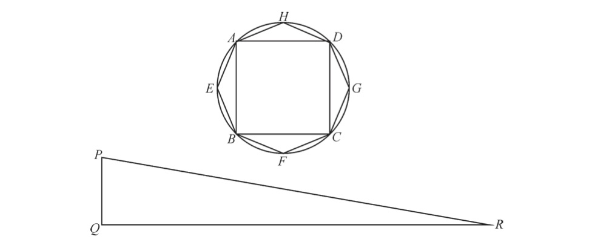
图7-1 化圆为方，内接多边形的案例。
要想了解这些问题为什么如此之难，我们可以以霍布斯最感兴趣的问题—— 化圆为方——为例来进行说明，他曾在《论物体》一书中用了整整一章来讨论这个问题。早在公元前2世纪，博学家阿基米德就曾证明，封闭在一个圆中的面积等于一个特定的直角三角形面积，这个直角三角形的两条直角边分别等于圆的半径和周长，即图7-1中的PQ和QR。阿基米德通过圆的内接多边形与外切多边形证明了这一结果。多边形的边数越多，它的面积就越接近于圆的面积。阿基米德的推理过程如下：我们首先看这个内接八边形AHDGCFBE，八边形的面积等于直角三角形的面积，直角三角形的两条直角边分别等于边心距（该多边形的中心到其中某一条边的垂线，等于圆半径）和八边形的边长总和。显而易见，我们可以把八边形的面积看作8个三角形面积的总和。这8个三角形分别以八边形的边为底，以八边形的中心为顶点。每个三角形的面积都等于底边乘以边心距再除以2，因此整个八边形的面积等于所有底边乘以边心距再除以2，即直角三角形的面积。
阿基米德继续证明道，让我们来看这个圆的面积，我们称之为C ；直角三角形的面积我们称之为T ，它的两条直角边分别为圆的半径和周长；具有N 条边的内接多边形的面积我们称之为In 。让我们假设此时的圆的面积大于三角形的面积，即C >T 。阿基米德已经说明过，当我们不断增加内接多边形的边数时，它的面积就越来越接近于圆的面积。因此存在一个边数为“n ”的值，使得多边形的面积介于圆的面积与三角形的面积之间，即大于三角形的面积，但（由于内接于圆）仍小于圆的面积。用现代的符号表示为：In ＞T 。
然而，这是不可能的，因为In 等于直角三角形的面积，这个直角三角形的两条直角边分别为边心距和所有边的长度总和。边心距小于圆的半径，并且各边长度之和小于圆的周长，这就意味着，In ＜T ，因此与初始的假设条件产生了矛盾，三角形的面积不可能小于圆的面积。阿基米德然后又假设三角形的面积大于圆的面积，并且重复了类似的证明过程，这次借助的是圆的外切多边形。他再一次证明，随着我们不断增加多边形的边数时，它的面积会越来越接近于圆的面积。但是，由于外切多边形的面积始终大于三角形T ，因此与假设条件产生了矛盾，三角形的面积不可能大于圆的面积。因此，剩下的唯一可能就是三角形的面积等于圆的面积，即C =T 。证明完毕。
阿基米德的证明过程是“穷举法”的一个经典案例，它完全符合严格的欧几里得几何的证明过程。从这个证明看来，化圆为方的问题似乎已经成功地解决了：已经得出了等于圆面积的三角形，然后再构造一个正方形使其面积等于这个三角形，这似乎是一件简单的事情。问题解决了吗？然而，这不是按照经典几何学家的标准解决的。阿基米德确实证明了圆的面积等于一个特定三角形的面积，但他不是通过直尺和圆规——在欧氏几何构造中被唯一允许使用的工具——“构造”出这个三角形的。为了让化圆为方能够被古典几何学家接受，人们必须从一个给定的圆开始，只用直尺和圆规，通过有限的一系列步骤构造出所需的三角形。阿基米德没有这样做：他证明了圆的面积等于三角形的面积，也确实展示了如何利用这种方法从一个圆构造出一个三角形。虽然他的证明是巧妙的，也是正确的，但它不是化圆为方的解法。
在我们看来，经典几何学的严格标准，即便不是毫无意义，也是相当挑剔的。现代数学家不会限制自己进行构造性证明，更不用说只能用尺规作图的方法进行构造性证明了。事实上，阿基米德的证明已经足够令那些想求得圆面积的人喜出望外了。但霍布斯却有不同的看法。在他看来，几何学从最简单的构成一步步地构造出更为复杂的结果，这种构造性是为他的哲学体系和政治科学提供合理模型的根本所在。为了这个目的，很关键的一点就是，几何学本身不能偏离这个模型，始终利用最基本的工具，从简单到复杂系统地构造几何对象。在霍布斯看来，经典的标准并非任意强加于人的负担，而是几何学赖以生存的核心特征。因此，为了解决化圆为方的问题，有必要按照古几何学家的要求，以阿基米德没能做到的方法，构建一个正方形使其等于圆的面积。
尽管数学家们经过了上千年的努力，但他们为什么仍未能成功地解决化圆为方难题呢？当时就有很多数学家开始怀疑，这三个经典难题是否根本无法解决，但霍布斯绝对不能接受这样的结果。如果想把几何学作为他的哲学基石，那么几何学就必须是完全可知的，因此只能有一个答案：那些数学家所依据的是错误的假设。只要有了正确的假设，那么就自然会由这些假设得到正确的结果，他写道：“几何学证明就如同植物的生长一样，它的枝繁叶茂只不过是根茎的自然延续。”
按照霍布斯的说法，欧几里得的问题在于，或者他更倾向的一种说法是，欧几里得的追随者和解释者的问题在于，他们所使用的定义过于抽象，在现实中没有所指对象。欧几里得对点的定义为“点是没有部分的东西”，对线的定义为“线只有长度而没有宽度”，对面的定义为“面只有长度和宽度”。但这些定义到底指的是什么呢？霍布斯认为：“没有部分的东西，就是没有量值；如果一个点不存在量值的话……它就是零值。如果《几何原本》中的定义本来想表达的就是这个意思的话……那么他的定义可能过于简洁了（甚至有些荒谬），因为他把点定义成了零值。”书中对于线、面、体的定义也是如此：它们没有所指对象，因此毫无意义。
只有一种定义类型能让霍布斯感到满意，即一种基于物质运动的定义。事实上，作为一个唯物主义者，霍布斯认为，世界上只存在运动的物质。所有关于抽象和非物质精神的花言巧语，只不过是为了凌驾于人们之上而施加的伎俩。点、线、体，它们是所有几何图形的基本构成部分，它们必须以如下的方式加以定义：
如果一个物体处于移动当中，我们认为它的大小（尽管它必然总会有一些量值）为零（空值），它所通过的路径称为线或者一维，它走过的距离称为长度，物体本身称为点。
然后可以用同样的方式定义面和体的概念：线的运动形成面，面的运动形成体。
关于霍布斯给出的定义，令人感到奇怪的是，在他的定义体系下，点、线和面，它们都是真实存在的物体，因此具有量值。点有大小，线有宽度，面有厚度。这对于传统几何学家来说可以称得上是异端学说，柏拉图时代（可能比这还要早）的几何学家都把几何对象当作纯粹的抽象概念，它们的物理表现只不过是其完美形态的苍白投影。即使存在关于几何对象本质的哲学问题，也没有足够的理由能够否定霍布斯的做法，不过，在几何证明中，仍存在一些关于如何解释这些奇怪量值的实际问题。线应该定义为多宽，或者面应该定义为多厚？传统的证明方法也适用于这种非正统的几何对象吗？霍布斯对于这些问题都没有给出明确的答案。在霍布斯的定义下，他把以前纯粹抽象的几何对象，变成了具有长度和宽度的物质实体，因此，传统的数学家当然有理由把这种做法看作是对几何学的终结。
意识到了这些问题之后，霍布斯辩称，虽然几何对象是实体并且具有一定的量值，但在证明过程是不考虑它们的量度的。也就是说，即使在实际上，点是有大小的，线也是有宽度的，但在证明中，点“被看作”大小为零的实体，线“被看作”有长度但宽度为零的路径。霍布斯的这种说法所想表达的意思十分不明确。欧氏几何的传统要求也是他所极力推崇的，他似乎在试图平衡自己所坚持的哲学理念，即包括几何对象在内的一切事物都是由运动的物质构成的。可以明确的一点是，正统的几何学家根本不会信服他的说法。
将几何对象构想为物质实体，是霍布斯几何学的一个重要组成部分。另一个重要组成部分是另一个近似于物理上的属性：运动。线、面和体，它们都由物体的运动产生。霍布斯的几何学这样解释道：最微小的运动，“在极短的时间内移动的微小距离”，称之为“动力”（conatus），动力的速度称之为“冲力”（impetus）。为了将这些微小的移动引入到完整的线和面中，他借助了一个令人感到意外的途径：卡瓦列里的不可分量。
实际上，霍布斯对卡瓦列里著作的熟悉程度可能要超出所有的欧洲数学家。他是为数不多的真正读过卡瓦列里厚重的大部头著作的人之一，而且没有借助于托里切利后来的改编版本。但是，不可分量学说被公认为是有争议的学说，并且经常由于其逻辑上的不一致和自相矛盾而受到攻击，那么对于如此坚持几何学的逻辑清晰度的霍布斯来说，他又为什么会采用不可分量呢？答案就在于霍布斯对不可分量非常规的解释。按照霍布斯的说法，卡瓦列里的不可分量是具有一定量值的物质对象：线实际上是微小的平行四边形，面实际上是具有微小厚度的实体，为了计算方便，这些量值“被看作”为零。正如霍布斯的朋友索比耶所解释的：“霍布斯没有说线有长度而没有宽度，而是在多数情况下允许它具有一个非常小的宽度，这个宽度可以小到忽略不计。”在霍布斯的几何学中，这些点、线和面并非静止的物体：像其他物理学上的实体一样，它们可以并且确实在运动。在给定的动力和冲力的作用下，点的运动会形成线，线的运动会形成面，面的运动会形成体。
克拉维斯这位古典几何学的捍卫者，如果他看到了霍布斯的非传统几何学，一定会被震惊到。对他来说，有宽度的线和有厚度的面，在一定冲力的作用下在空间中移动，这些都不应该出现在纯粹非物质的几何对象之中。但霍布斯并不是要推翻传统的几何学。相反，他是试图在物质运动原则的基础上创建新的几何学，通过这种改造使它变得更加严格和更加强大。他指出，如果不通过画线来构造图形，那么“每一个证明都是有缺陷的”，而“每一次画线都是一次运动”。从来没有人见过没有大小的点，也从来没有人见过没有宽度的线，很明显，在这个世界上不存在这种几何对象，而且也不可能存在这种几何对象。一个真正的、严格的、合理的几何学必须是物质的几何学，而这正是霍布斯所创造的东西。霍布斯相信，这种新的物质几何学将能够轻松解决所有悬而未决的问题，以及那些已经困扰了几何学家上千年的难题（比如化圆为方）。它将会成为传统几何学所期望成为的样子——一个完全可知的体系。
遗憾的是，霍布斯在“化圆为方”问题上并没有取得顺利的进展，并没有像他曾说过的那样，如同植物的生长一样顺理成章地就能得到证明结果。到了17世纪50年代初期，他让自己的朋友们知道了他已经成功地解决了“化圆为方”问题，不过尽管他为自己的成就感到非常自豪，但他并没有马上出版它的计划。他的所有精力似乎都放在了准备出版《论物体》上面。但在1654年，霍布斯收到了一份挑战。霍布斯的老相识赛斯•沃德（Seth Ward）现在担任牛津大学的萨维尔天文学教授，他匿名发表了一篇为大学辩护并反对霍布斯的文章，因为此前霍布斯曾在《利维坦》一书中斥责他们为“黑暗王国”的仆人。沃德指出，他听说霍布斯先生公布他已经发现了一些难题的解决办法，其中至少已经解决了“化圆为方”难题，他许诺道，如果霍布斯能公布一个正确的解决办法，他就“加入到为他歌功颂德的行列”。
这是一个陷阱，霍布斯深知这一点。他意识到了，沃德在试图激怒他，以让他透露自己的证明方法。沃德认为霍布斯不可能解决存在了上千年的难题。不过，由于霍布斯相信，他改造过的几何学将在欧几里得几何失效的地方取得成功，因此霍布斯还是上钩了。他很快在《论物体》中加入了一章内容，其中包括对经典问题的证明。霍布斯坚信，通过解决“化圆为方”问题，他将会给那些贬低者一记沉重的打击，证明他所重建的几何学相对于传统几何学的优势，并且进一步地建立自己的哲学体系和政治纲领的真理。尽管存在着风险，但这是一个他无法拒绝的机会。
但霍布斯的计划开局不利。他的“化圆为方”解法收录在《论物体》一书的第20章，在将该书的手稿发送给一位印刷工之后，他有了一些顾虑。他的证明方法确实如他想的那样无懈可击吗？他把证明方法拿给一些值得信赖的朋友看，征询他们的意见，他们很快就指出了他的错误。他赶快给印刷工提供了修改方案。他可能本想从书中删除这个证明方法，但为时已晚，所以他想出了一个巧妙的解决办法。当时出版的书有一种习惯，即在每章的开头都包括一个内容列表，因此霍布斯决定保留证明方法，但修改其在列表中的描述：他没有称这个证明为“化圆为方”，而是以“由错误的假设得到的错误化圆结果”为标题。这可能使他免受由于错误证明而导致的尴尬，但这也使这个证明过程变得没有意义了。为了补偿这一点，他在同一章又增加了第二种证明方法，但仔细观察的话，这只不过是一个近似的结果。他在本章开头的标题中也基本上承认了这一点。之后他又给出了第三种证明方法，这个方法也没有取得更好的进展：虽然他在该章的开头自信地把它称为“真正的化圆为方”，但他最终在该章结尾处被迫加入了一段明显的免责声明：
由于（在写完这部分之后）我意识到，在这个求面积的方法中存在一些问题，相比推迟出版来说，似乎更好的办法是向读者指出这个问题……但是，读者应当认同在计算圆面积过程中的正确性，而不是错误性。
他的方法确实是有问题的。在《论物体》的一章内容里，尽管他信誓旦旦地向朋友们断言，尽管故作勇敢地接受了沃德的挑战，但霍布斯在“化圆为方”上却连续失败了三次。他没有得出一个无可争议的证明，而是分别得到了一个“错误的求积”，一个近似的结果，以及一个应该被认为“有问题的”证明。当他开始着手创建一种在逻辑上无可辩驳的几何学，以及在逻辑上无可辩驳的哲学时，这肯定不是他所希望看到的结果。他得到的是不精确的、有疑问的结果，而没有建立一个新的、和平的几何体系，所带来的只有更多的争议和疑惑。
如果这还不够糟糕的话，还有一个新的敌人正在准备让霍布斯变得更加狼狈，并把这变成了一次公开的羞辱。约翰•沃利斯是牛津大学的萨维尔几何学教授，他和他的同事沃德一样，关注这个被他们称为“马姆斯伯里的怪物”的人所带来的危险影响。就在霍布斯对《论物体》修改之后不久，沃利斯利用自己的人脉关系，从伦敦的印刷工那里获得了未经发表的文本。这虽然算得上是一种卑劣的，甚至是不道德的手段，但事实证明这种做法非常有效地破坏了霍布斯的数学信誉。霍布斯在1655年4月出版了《论物体》，几个月之后，沃利斯就对他的数学主张发起了反驳，那些未经发表的文本让沃利斯有了一个良好的开局。但他没有就此罢手：通过未发表的文本与已发表的版本进行对比，沃利斯能够重建整个事件链，从而能够了解为什么在第20章中会出现奇怪又自相矛盾的声明。霍布斯充满信心声地坚称会取得成功，却接二连三地出现尴尬的自我否定和限定性条件，所有这些都在沃利斯的《驳斥霍布斯几何》（Elenchus Geometriae Hobbianae ）一书中暴露无遗。霍布斯作为一个领先数学家的声誉，从此便一蹶不振。
事情发展的最后结果就是，霍布斯对几何学基础的改造，并没有让“化圆为方”的问题得到明显解决。虽然他的朋友索比耶自信地宣称，霍布斯所提出的点和线的物质属性，最终“为一些悬而未决的问题提出了解决办法，如化圆为方和倍立方的问题”，但事实证明并非如此。在《论物体》中所尝试的求面积方法确实是非正统的，即由点和线的运动来分别形成线和面，但相比传统几何学家的努力，它们最终也没能得出更具说服力的结果。无论是依据传统的欧几里得方法，还是依据霍布斯的新几何学，这都是一项不可能完成的任务：仅用尺规作图法，构造一个正方形使其面积等于一个给定圆，这是根本不可能的。霍布斯不肯接受这种观点，因为这将意味着几何学蕴藏着不可知的秘密，但同时代的许多数学家，包括沃利斯，都曾怀疑过可能没有解决它的办法。在近两千年里，几何学家对这个几何问题的挑战一直是屡战屡败，至少仅凭这一点就可以看出，“化圆为方”不是当时的几何学家所能轻易解决的问题。至于为什么仅凭尺规作图法不可能解决“化圆为方”，对于它的证明还要再等上两个多世纪，其所依据的数学方法也不是霍布斯和沃利斯所能想象的。
要想了解为什么“化圆为方”是一个无法解决的问题，我们可以假设有一个半径为r 的圆。正如现在的每个中学生都知道的，以现代数学符号表示的圆面积为πr 2 。因此面积与圆相等的正方形的边为
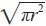
，或更简单地表示为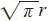
。r 的数值是已知的，我们为了方便起见可以假设r 为1，所以余下的问题就是要构造一条长度为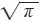
的线段。由于欧几里得说明过如何构造出一条线段，使其长度等于另一条线段长度的平方根，因此这就意味着只需用尺规作图法构造出一条长度为π 的线段即可。但事实证明，这是不可能的。正如18世纪的数学家所发现的，其原因是经典的几何作图法只能生成 代数数 注34 ，即有理系数方程式的根。又用了一个世纪，到1882年，数学家费迪南德•冯•林德曼（Ferdinand von Lindemann）证明了π 不是一个“代数数”，而是一个 “超越数” 注35 ，因为它不是任何一个代数方程的根。因此不能由尺规作图法构造出长度为π 的线段，所以说“化圆为方”是不可能的。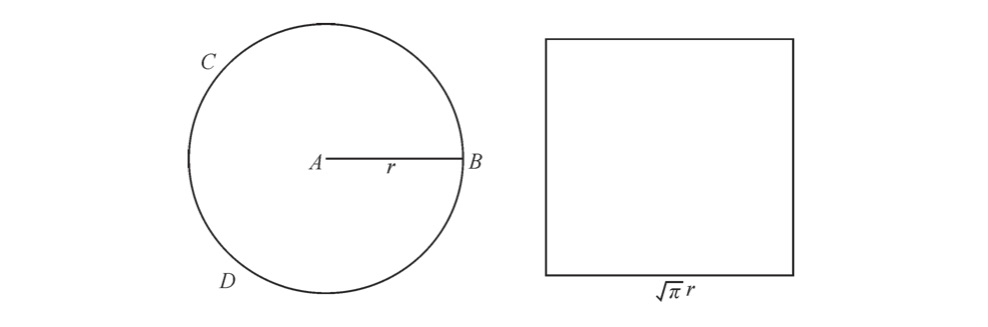
图7-2 化圆为方为什么是不可能的。
然而，所有这些都发生在距离霍布斯发表其“化圆为方”方法的一两百年之后。他对代数数、超越数以及经典几何构造的局限性一无所知，更不要说林德曼的证明，而他自始至终都一直坚信，他的方法必将得出“化圆为方”的正确结果。他在《论物体》第一版中出现的错误，被他归结为是操之过急的结果，他又在该书的后续版本以及在其他论文中陆续发表了经过修正的证明过程。沃利斯仍在步步紧逼，他对霍布斯提出的每一个证明都给予了反驳，并且其他领先的数学家也加入了沃利斯的行列。最初霍布斯曾无奈地承认过一些在数学上的批评，这使他不得不一次又一次地修改自己的证明方法。然而，随着时间的推移，他对这些批评者失去了耐心：他越来越难以接受批评者的论点，驳斥那些批评者是由于心胸狭隘才会嫉妒他的作品，才会拒绝承认他对几何学所做出的巨大贡献。在霍布斯看来，数学界对其成就所产生的敌意，唯一可能的解释就是他们的迂腐、偏见和小气。他选择的道路一定是正确的，对于这一点他从来没有产生过怀疑。
霍布斯从来没有动摇过，他坚信自己已经解决了“化圆为方”问题。在他去世之前，91岁高龄的霍布斯交给奥布里一篇简短的自传，其中包括一个他毕生成就的列表。在这些成就当中，数学占据了首要地位。霍布斯的成就包括“纠正过一些几何原理”以及“解决了一些最困难的几何问题，它们是从几何学创立以来就一直令那些最伟大的几何学家束手无策的难题”。然后他列出了已经解决的七大问题，其中包括重心的计算和角度的划分。毫无疑问，其中必然包括最令霍布斯感到骄傲的“成就”——列在首位的正是“化圆为方”。
1643年，当霍布斯与宫廷贵族一起流亡巴黎，同时也在完善自己哲学体系的时候，一位身处伦敦的年轻教士也正在丰富他的哲学思想。他问道，我们如何知道我们所知道的，又如何能够确定我们所知道的就是正确的？同一时期的霍布斯也许亦在问同样的问题，但他们的答案却并不相同。这位教士在一本名为《探寻真理》（Truth Tried ）的小册子中写道：“即使是魔鬼也能创造出如同圣徒一般的推测性知识。”他解释道，这是因为即使是魔鬼，它也是理性的，也能像上帝的子民那样进行逻辑论证。不过，还存在着一种更高形式的知识：“实验性知识”（Experimentall knowledge），这是另一种性质的知识。借助这种知识，“我们不仅可以掌握真理，而且可以验证真理”。与基于推测产生的信条不同，“真理因此可以更清晰和更易于理解地……直达灵魂，它似乎成了理智无法抗拒的力量”。
这位年轻的教士不是别人，正是约翰•沃利斯，他这时只有27岁，刚从剑桥大学毕业几年。他很有可能从来没有听说过托马斯•霍布斯。但在以后，霍布斯会成为他的一个宿敌。在当时，霍布斯虽然在哲学上自命不凡，但他还只是卡文迪许家族的一位默默无闻的家臣。毫无疑问，霍布斯也从来没有听说过沃利斯。几年之后他们将展开一场持续20多年的激烈斗争，但现在在他们之间就已经形成了鲜明的对比。霍布斯认为，真正的知识源自于正确的定义和严格的逻辑推理；沃利斯认为这种知识既属于上帝又属于魔鬼。沃利斯认为，知识的最高形式是基于感性的，是“看出”，甚至“品尝出”的真理，霍布斯则鄙视这种感性的知识，认为它是不可靠的，容易出错的。他们两人似乎只在一个问题上达成了完全的共识：数学是一种关于正确的推理和准确的知识的科学，它应该成为所有其他学科的典范。
霍布斯对数学感兴趣，这不足为奇，因为数学是他的哲学和政治体系的核心。1643年，他就已经算是具有一定知名度的几何学家了，而且他的数学名望还将会持续一段时间。但在同一年的沃利斯却根本算不上是数学家，而是一位不断成长的长老会牧师，正积极投身于国会对教会的改革运动，并不需要什么高深的数学知识。况且他在《探寻真理》一书的表述当中也没有表现出对数学推理的极力赞赏。如果最可靠的知识是实验性知识的话，那么又该把数学摆在什么位置呢？沃利斯在27岁时所表达的看法，对于他的数学职业生涯来说，似乎并不像是一个有前途的起点。然而，仅仅在几年之后，沃利斯就被任命了全欧洲最负盛名的数学教授职位。在此后不久，他进一步证明了自己是世界上最具创造力和最受爱戴的数学家之一，从而用自己的实力证明了，对他的任命是实至名归的。
具有沃利斯这样职位和信仰的人为什么会投身于数学呢？这似乎是一个奇怪和不太可能的职业选择，但沃利斯有他的理由。与霍布斯类似，他的理由也关系到他的哲学和政治信仰。如同霍布斯一样，沃利斯的政治态度也是他对空位期那段混乱岁月的强烈反应，但他从中得出的结论却大不相同。在霍布斯看来，内战危机的唯一答案就是专制的利维坦国家；而沃利斯则认为，在国家中应该允许多元化的观点和广泛的不同意见。霍布斯依赖于欧氏几何的严格体系来支持他僵化的利维坦国家，而沃利斯则依赖于一种新的数学方法，它既灵活而强大，又带有矛盾和争议，即无穷小数学。
出生于1616年的沃利斯整整比霍布斯年轻了一代，但他的背景却与这个伟大的敌手惊人地相似。他也是南方人，来自于肯特郡的阿什福德镇（Ashford），位于霍布斯的故乡威尔特郡西港村以西。沃利斯的父亲也是一位牧师，但似乎要更受尊敬一些。老霍布斯的赌博比他的学识更出名，但老约翰•沃利斯却不同，至少根据他儿子的记载，他是“一位虔诚、谨慎、博学和正统的牧师”，并且是剑桥大学三一学院的毕业生。沃利斯在他80岁高龄的时候写了一部自传，他在其中回忆道，他的父亲是一位社区领袖，他很认真地对待自己的工作，“除了在 主日 注36 固定的两次布道之外，还有其他偶尔的布道以及问答教学；他……坚持在每个星期六举办一天讲座。经常有很多人光顾……包括邻近的牧师， 太平绅士 注37 ，以及其他的上流社会人士”。
令年轻的约翰感到难过的是，他父亲在他只有6岁时就去世了，这也不禁让人想起早年的霍布斯。但沃利斯的家境显然更好一些，霍布斯被送到了他叔叔那里，而沃利斯的母亲乔安娜（Joanna）能够继续维持家庭，负责照料5个孩子的成长。虽然后来她有很多好的再嫁机会，但她“出于为自己孩子们的考虑”而始终没有再嫁。约翰是乔安娜的第3个孩子，也是最年长的儿子，她充满热情地负责起了他的教育。为了确保他能受到最好的教育，她把约翰送进了学校去读书，先是在阿什福德镇，后来又去了附近的坦特登镇（Tenterden），在那里他学习了英语语法和拉丁语。他后来写道，虽然他还是个孩子，但他从来没有满足于简单的“知道”，而是一直在寻求更深的理解，“因为这一直是我的习惯，无论学习什么知识，都不只是靠死记硬背来学习——那这样很快就会忘记，而是要探究所学知识的依据或原因”。
1630年的圣诞节，在沃利斯13岁时，他被转到了马丁•霍尔比奇（Martin Holbeach）的学校，这所学校位于埃塞克斯郡的菲尔斯特（Felsted），这次转学将对他的未来产生很大的影响。霍尔比奇不仅是校长，而且也是一位著名的清教牧师，他积极参与教会改革，并经常与统治英国教会的大主教和主教产生公开的冲突。在随后几年里，在国会在与国王的斗争中，霍尔比奇成为国会的坚定支持者，并最终成为一名独立的教会政府的倡导者，既反对圣公会也反对长老会。他不仅是一位虔诚的信徒和可靠的国会议员，而且也是一位优秀的学者和教师。他如此高的声誉使得全国各地领先的清教徒都希望把自己的儿子送到他这里来学习，其中就包括奥利弗•克伦威尔，他把自己的4个儿子都送到了菲尔斯特学校来接受霍尔比奇的教导。
沃利斯虽然没有显赫的家世，但由于他敏捷的头脑和勤奋好学的习惯，他还是得到了校长的注意。他在自传中回忆道：“霍尔比奇先生对我非常好，他曾说我是他从其他学校接收到的最好的学生。”在霍尔比奇的指导下，沃利斯提高了他的拉丁语和希腊语，学习了逻辑学和一些关于希伯来语的知识，到后来他上大学时，所有这些知识都会让他受益匪浅。但校长的真正影响力远远超越了学术指导范围。在随后几年里，对他充满仇恨的保皇党人声称，霍尔比奇“几乎没有培养出忠于他的亲王的人”，沃利斯也不例外。在菲尔斯特，他加入了清教徒的圈子，反对圣公会的等级制度，并且学会了在面对皇室压迫时主张英国人生而自由的权利。当10年之后内战爆发时，沃利斯仍然忠于他在菲尔斯特所学到的信念，毫不犹豫站在了国会一边。
但是，有一门学科是沃利斯在菲尔斯特和其他学校都没有学到过。沃利斯解释说，在那个时候，数学“极少被当作学术科目，而是被当作一种技能。就像贸易者、商人、海员、木匠、土地测量师等类似的职位所需要的技能一样”。人们认为这不是年轻绅士应该接受的教育内容，因此没有被列入任何学校的教学课程。结果，同霍布斯的情况非常类似，沃利斯与数学的第一次相遇也是纯属偶然。1631年12月，沃利斯在位于阿什福德的家里过圣诞假期的时候，发现自己的弟弟从事着一项特殊的活动。这个小男孩被送到城里的一个商人那里做学徒，商人教他学习算术和会计以帮忙照料生意。沃利斯对此感到很好奇，这个男孩对他哥哥表现出的关注无疑感到受宠若惊，于是主动向沃利斯介绍他所学到的知识。他们两个人一起度过了余下的假期，一起复习课程，沃利斯学习了会计的基本技巧。他在多年之后不满足地写道：“这就是我第一次见识到数学，这也是我所接受的全部数学指导。”除了和他弟弟学到的这些早期课程之外，所有的数学知识都是沃利斯靠自己自学的。
虽然根据沃利斯和霍布斯自己所说，他们都是在偶然之间发现的数学，但他们所讲的故事却有很大的不同。霍布斯是在一位绅士的图书馆里偶然发现的数学，当时他正在和他的贵族同伴周游欧洲大陆。他的故事发生在一个贵族氛围之中，数学是经典知识的一部分，学习它不是为了其实用性，而是作为上层阶级生活的一种风雅和情趣。相比之下，沃利斯是在他母亲拥挤的房子里发现的数学，毫无疑问，他所处环境相当嘈杂——在圣诞假期里，家里还有他的兄弟姐妹们。在这里不但没有什么优雅可言，恰恰相反，这里适合他的学徒弟弟，但不适合培养像他这样的年轻绅士。
不仅只是环境上的不同，他们各自发现的数学也是完全不同的。在绅士的图书馆里，霍布斯发现的是庄严的欧几里得几何，他很快就被它那种冷酷而严格的美吸引住了。但沃利斯发现的数学根本不包括几何学，它只是记账用的算术和基本的代数。在这种数学里面既没有定理和证明，也没有一点代表欧氏几何的那种深远的哲学思想。霍布斯的数学对他而言是一种典范，代表着普遍而不容挑战的真理。而沃利斯的数学只是一种实用工具，它被商人、水手和土地测量师用来解决他们所遇到的各种问题。它一点也没有霍布斯所崇尚的那种宏大的哲学体系。
无论是沃利斯还是霍布斯，他们都是在很多年之后回顾的这些故事，他们成熟的、经过深思熟虑的数学观点，很可能会为他们记忆中关于数学的最初体验加上感情色彩。但无论如何，不可否认这些记录捕捉到了两个人在数学上的一些截然不同的看法和态度。在霍布斯看来，数学是一种优雅的贵族科学，因其严谨的逻辑推理而受到青睐，它是否有用根本无关紧要；而在沃利斯看来，数学没有什么高贵可言，它的核心是一种实用工具，使用它就是为了获得有用的结果，这就像教给他弟弟算术的那个商人的看法一样，它的逻辑严谨与否是无足轻重的。
在那个似乎是命中注定的圣诞假期，沃利斯从他弟弟那里发现了数学，他很高兴能学到这些数学知识，同样令他感到高兴的还有他惊人的数学天赋。从那时起，他就一直在自学数学，尽管“不是正式的学习，而是作为闲暇时间的一种消遣”。他没有老师，也没有人指导，但他利用一切机会练习他的数学技能，并且阅读了所有能找到的数学著作。然而，令他始料未及的是，这种闲暇时的消遣竟然最终成了他一生的工作。他的职业方向本来不是这样打算的，作为一个严肃和虔诚的年轻人，他渴望为这个世界做出有意义的事情，他本想成为像他父亲那样的牧师，宣讲上帝之言。为此，他必须首先获得牛津大学或剑桥大学的学位，因为在当时（以及此后的几个世纪），这两所著名的大学都是培养神职人员的主要学校。
1632年的圣诞节，沃利斯进入了剑桥大学，并且被伊曼纽尔学院（Emmanuel College）录取了。他对大学的选择很可能不是巧合，因为伊曼纽尔被称为剑桥的“清教徒”大学，它成立的目的就是专门培养清教徒神学家。这里对于菲尔斯特培养的沃利斯来说是一个理所当然的归宿，他的导师霍尔比奇也许动用了他在清教徒牧师中的关系，才确保了沃利斯的录取。大学的大部分课程都由中世纪的亚里士多德哲学（所谓的经院哲学）构成，对于学生们的评判标准就是，看他们在公开辩论中，为古代和中世纪哲学家的学说进行辩护的能力。霍布斯曾在他的大学时代鄙视过经院哲学，后来又在《利维坦》中谴责它为“亚里士多德主义”。但沃利斯却一点也不认为这些课程是令人厌恶的。他在自己的自传中自豪地写道，他很快就掌握了复杂的三段论，以至于“能够达到比他年长几届的同学的水平”，并很快赢得了一个“好辩手”的声誉。以这种方式，他不仅学习了逻辑学，而且学习了亚里士多德的其他一些经典学科，包括伦理学、物理学和形而上学。不过，他的重点始终在神学，而且在伊曼纽尔学院有很多神学课程。在他现有宗教知识的基础上，他开始系统地学习学院神学，并很快成了这方面的专家。
虽然学习紧紧围绕着必修的亚里士多德课程展开，但沃利斯并非没有注意到，在17世纪30年代的大学里面兴起的众多其他领域的学术之风。在过去一个世纪的地理探索活动中，发现了一整块新大陆，而这在古典教材上从未被提到过，新大陆的发现严重损害了对传统经典权威的信心，这使得地理学成为那个时代最有活力的领域之一。医学的发展也远远超越了 盖伦 注38 的著作（当时的大学课程），这主要归功于维萨里（Vesalius）的解剖图谱，以及由英国人威廉•哈维（William Harvey）发现的血液循环。然而，没有哪个领域能像天文学那样，产生如此之多的杰出发现。自从哥白尼在1540年首次发表了他的《天体运行论》（De Revolutionibus ）之后，他的日心说就在不断获得追随者，从一种牵强的假设演变成了一种被广泛接受的天体理论。哥白尼的学说引起了越来越多的关注，这也得益于其他一些天文学家的伟大发现，其中包括开普勒精确计算出的行星轨道和行星之间的关系，以及伽利略在《星际信使》中记录的用望远镜观测到的惊人发现。伽利略因为主张哥白尼学说而遭到了罗马教会的迫害（这正是沃利斯进入剑桥大学学习期间），这更提高了该学说在英国新教中的普及程度。同样做出了杰出贡献的还有英国前大法官弗朗西斯•培根爵士，他将这些不同的发现纳入了一个哲学体系当中，他曾经承诺说，这将会彻底改变人类知识以及人类战胜自然的力量。
这些早期的科学革命萌芽在当时被称为“新哲学”（New Philosophy），这个名词既充满了巨大的魅力和希望，又暗含着一些危险和非正统。所有这些新科学都不包括在大学僵化的课程设置里面，但这并不意味着它们没有进入牛津大学和剑桥大学。新科学带来的兴奋在空气中弥漫着，教授和学生们聚集在一起，以非正式的形式学习着新科学，沃利斯也在他们当中。他除了学习长期以来一直感兴趣的数学之外，还学习了天文学、地理学和医学。他甚至还在一次公开辩论中捍卫血液循环理论，成为第一个在大学里这样做的学生。除了正常的学习之外，他在大学里的大部分空闲时间很可能都在参与这些活动。沃利斯不仅有着永不满足的求知欲，而且有着非同一般的刻苦学习能力。他后来写道，他认识到，“知识不是负担”，即使到最后证明它是没有用的，它也肯定没有害处。很多年之后，数学才由他的兴趣变成了他的主要工作，到那时，他与其他人一起建立了世界上第一家科学院——伦敦皇家学会。
沃利斯于1637年获得学士学位，并于1640年获得硕士学位，如果不是因为伊曼纽尔学院已经有了一位来自肯特郡的教员，他就会留在那里任教了——有法律规定每所大学只能有一名来自同一个郡的教员。因此，他去了皇后学院，但不久之后他就结婚了。在接下来的几年里，他先后在伦敦的几座教堂担任过牧师，并且是几位贵族的私人牧师。这几位贵族都在国会反对国王的斗争中站在国会一边，其中之一就是玛丽•维尔（Mary Vere）夫人，她是军队领袖霍雷肖•维尔（Horatio Vere）爵士的遗孀。一天晚上，当沃利斯在维尔夫人位于伦敦的家中做客时，一位牧师带来了一封被国会军截获的用密码写成的密信，他半开玩笑地问沃利斯是否可以破译它。沃利斯接受了这个挑战。非常出乎他同事意料的是，他在两小时内就成功地破译了这封密信。这第一封密信是相对简单的，但考虑到当时几乎没有现成的密码破解技术，沃利斯的功绩为他赢得了类似于奇迹创造者的声誉。他后来遇到的密码相对更为复杂，但沃利斯喜欢这样的挑战，并成功破译了其中的相当一部分。从此以后，无论是在国会统治时期，还是在护国公摄政时期，以及后来的国王复辟时期，他都被政府聘任为了代码破译者。尽管有通信者提出过要求，让他透露破解技术，但沃利斯从未答应过，不过他的破解技术很可能是基于代数学，因为这是他的数学方法的基石。
作为霍尔比奇的学生以及伊曼纽尔学院的毕业生，沃利斯很好地融入到了清教徒圈子，从与查理一世产生冲突的最初阶段开始，他就是一名彻头彻尾的国会党支持者。然而，直到1644年，这位年轻的牧师才有机会在当时的大事件中崭露头角，他被要求在对大主教威廉•劳德（William Laud）的审判中出庭作证。作为坎特伯雷大主教，劳德曾是查理一世统治时期的英国圣公会领袖，并且是清教徒的主要敌人。在对劳德的公开作证中，沃利斯证明了自己是长老会派中的一颗冉冉升起的新星，而正是长老会派在内战初期领导了反对国王的斗争。就在同一年，他被任命为西敏寺神学家议会（Assembly of Divines at Westminster，简称为西敏寺议会）的秘书，这确认了他在长老会派中的地位。西敏寺议会是长期国会的产物，其目的是制订一个计划，希望用一个或几个新的教会来取代英国国教。如同国会一样，西敏寺议会也是由长老会派控制，他们希望废除主教制度，并用长老会的制度取而代之。沃利斯不仅聪明、年轻，而且在教会内有着良好的人际关系和无可挑剔的长老会成员身份，因此，他理所应当地被认为是主持西敏寺会议的最佳人选。
他在几十年后写道，随着国王和圣公会成功复辟，他曾试图削弱议会的激进主义倾向，并尽量减少他在其中所起的作用。但事实可以说明一切：经过多年的激烈辩论，西敏寺议会建议取消主教制度，因为这是英国圣公会的最主要特征，并且是与国王结盟的象征。长老会派影响力的下降以及英国国会的最终恢复，使得议会的建议从未能够付诸实践。但是，在他们当政时期，他们的提议相当激进，提出了一个更加民主的教会治理计划，提出让教会脱离皇室控制。作为议会秘书，沃利斯参与了整个计划的制订，并因此而闻名。
虽然在对抗国王斗争的初期，长老会派是公认的国会众多派系中的领袖，但随着革命的日益激进，他们很快就失去了在国会中的优势地位。独立派认为长老和主教之间没有多大差别，因此希望同时废除两者的统治权力。更糟糕的是，喧嚣派、贵格派和掘土派都威胁到了社会秩序的根基。这足以让受人尊敬的长老会教徒怀念之前由国王和主教统治的旧时光，虽然那时的日子他们也不认为有多好，但那时至少还有法律和秩序，而现在剩下的似乎只有无尽的混乱。因此，长老会派由17世纪40年代的激进派变成了50年代的保守派，开始反对多年前施行的颠覆活动。沃利斯的职业生涯也遵循着类似的路线。1648年，他写了一份递交给军队的谏言书，希望保住国王的性命，这虽然是一次可敬的行动，但最后也没能阻止对国王的处决。1649年，他与伦敦的其他牧师一起签署了《一份严肃而忠诚的上书》（A Serious and Faithful Representation ）以抗议托马斯•普莱德（Thomas Pride）对国会的清洗，因为军队驱逐了那些被认为过于温和的国会议员。沃利斯与其同事宣称，这是一种犯罪，比任何一位国王所犯下的罪行都要严重。他们还以修正主义的后见之明辩解道，况且1640年的国会也从来未想过要剥夺国王的王权。
虽然勇气可嘉，但上书运动对挽救国王或者挽救长老会派来说都是无济于事的，曾经作为国会核心和灵魂的长老会派，如今已经成了一股过气的政治力量。目前控制国家的独立派和激进派都认为他们过于保守。保皇党也不信任他们，指责他们挑起了对国王的战争，以及发动了席卷全国的暴乱运动。由于无法把握自己的命运，许多长老会教徒悄悄地站到了保皇党一边，希望一旦国王重登王位，他们过去的罪行能够得到原谅。
沃利斯所在党派运势的衰落使得他在伦敦的处境也相当难堪。他仍然是位于铁器巷（Ironmonger Lane）的圣马丁教堂的牧师，但慷慨的赞助人已经变得很难得了，因为现在的政治气候变得对长老会派不利，而他也无缘继续参与发生在他周围的大事件了。在长老会被保皇党指控背叛国王，并且被独立派和激进派指控背叛事业的时期，甚至连他自己的人身安全也无法得到保障。但就在这个紧要关头，在他认为似乎在伦敦已经穷途末路的时候，沃利斯得到了一次忘记过去并重新开始的机会：1649年6月14日，就在他签署了上书文件的几个月之后，他获得了一项高贵的职位，被任命为牛津大学的萨维尔几何学教授。
这项任命对于沃利斯来说，可以说是一个无论如何也意想不到的惊喜。直到去年时，萨维尔教授一职还在被彼得•特纳（Peter Turner）占据着，他是一位完全有资格胜任和受人尊敬的数学家。但就像他的许多大学同事一样，特纳也是一名保皇党，当1648年国会将注意力转向大学改革时，他被赶下了这个教授职位，此后萨维尔教授一职就一直空缺着。当局希望寻找一位具有深厚国会背景的学者作为他的继任者，以这个标准来看，沃利斯当然成了独一无二的人选。但沃利斯却几乎没有担任几何学教授的资格。他与特纳不同，特纳在进入牛津之前，曾经担任过位于伦敦的格雷欣学院的几何学教授，而沃利斯则没有这方面的经历，他既没有教学经验，也没有出版过数学著作。他所具备的知识只有他在少年时从他弟弟那里学到的会计技巧，以及几年以来凭兴趣自学的一些数学知识。在他名下的唯一一项数学作品就是一篇关于角度划分的论文，但这与数学的前沿领域相差甚远，而且由于某种原因，这篇论文还未曾发表。在人们的印象中，有如此背景的人并不适合被任命为牛津大学的几何学教授。
对沃利斯的任命可以说只是出于政治上的原因，并且可以肯定地说，没有人会期望他成为一名真正的数学家。如此不够资格的人如何获得了这样一个有名望的职位，至今仍是一个谜。但沃利斯有着强烈的进取心。仅仅在从剑桥毕业的数年之后，他就成了西敏寺议会的秘书，借此成功地把自己推向了国家政治舞台的中心。如今，当所有机会的大门似乎都对他关闭的时候，他却赢得了这个国家中最令人向往的一个数学职位。当时的古文物研究者安东尼•伍兹（Anthony Woods）曾暗示道，很有可能是他与奥利弗•克伦威尔的良好关系从中发挥了作用。克伦威尔认识并推崇马丁•霍尔比奇，同时霍尔比奇又是他儿子的老师，所以这位校长对沃利斯的高度评价很可能给他留下了深刻的印象。不过即便如此，到1649年，克伦威尔也仅仅是一位将军而非护国公，他对这件事情很可能没有太大的影响力。沃利斯清楚地认识到，他必须设法走出困境并获得辉煌的成就。事实证明，多亏了他非凡的数学天赋，才使得他在此后的三个半世纪仍能星光熠熠。只要在伦敦，他就永远与陷入重围的长老会脱离不了干系，但在牛津，他是可以被简单地视为一名国会议员，由于得到政府的支持而被安排在了这里；在伦敦，他会被看作一名政治家，并相应地接受政治上的评判，而在牛津他会被认为是一名学者，从而可以远离伦敦那种沸沸扬扬的革命氛围，过上相对宁静的生活。他现在所要做的就是使自己成为一名名副其实的数学家。
他以相当惊人的速度实现了这一过程。早在1647年，他就已经读过了威廉•奥特瑞德广为流传的代数课本——《数学之钥》（Clavis Mathematicae ），并且第二年他就在自己的论文《论角度划分》（Treatise on Angular Sections）中对其进行了详细的讨论——这篇论文在过了将近40年之后才最终被发表。作为萨维尔几何学教授，他现在认识到，“以前一直被当作娱乐消遣的数学，现在已经成了我的正式研究领域”，于是，他开始按照最新的数学著作系统化地进行自学。在数学方面算是外行的沃利斯，虽然只了解一点现代数学，但却掌握了伽利略、托里切利、笛卡尔以及罗伯瓦尔的复杂的数学著作。在几年之内，他不但掌握了那些大陆学者们的著作，而且已经开始着手进行自己的数学研究计划。在上任6年之后，他于1655年和1656年分别发表了两本具有惊人独创性的数学专著，一本名为《论圆锥曲线》（De Sectionibus Conicis ），另一本名为《无穷算术》（The Arithmetic of Infinites ）。这两部著作在欧洲数学界引起了巨大反响，从意大利一直流传到了法国和荷兰共和国。
本是一名清教徒牧师的沃利斯，是如何重塑自己成为一名享誉国际的数学家的呢？这无疑要归功于他与生俱来的数学天赋，还有他潜心研究与努力工作的惊人能力。但其中还有一些其他因素：沃利斯已经能够熟练地利用并依靠他那些广泛的人际网络以及一些位高权重的朋友。他在自己的忠诚和信仰上也表现出了灵活性：伊曼纽尔学院和西敏寺议会的信仰一去不复返了，取而代之的是一位温和牧师的信仰，他只忠于当权者，无论是护国公克伦威尔，还是复辟的斯图亚特国王，或者是（ 1688年光荣革命 注39 之后的）威廉和玛丽。事实上，在他临终写下自传时，他曾试图淡化他在青年时期反抗国王的政治活动，他辩解道，所谓“长老”是指那些受人尊敬的牧师，他们反对的是激进的独立派，而不是圣公会主教。在沃利斯出任萨维尔几何学教授的那些年里，他灵活有度的忠诚和处世技巧让他有了更大的发展：在1658年，他被选举为牛津大学“档案保管者”。在选举过程中，他在牛津大学博德利图书馆的同事亨利•斯特布（Henry Stubbe）提出了强烈的抗议，因为斯特布是霍布斯在牛津大学的主要支持者。1660年，沃利斯被复辟的君主查理二世确认留职，后来又被授予了“皇家牧师”的荣誉头衔。
霍布斯作为沃利斯的著名对手，沃利斯的见风使舵必然会引起霍布斯对他的嘲笑，因为霍布斯从来没有对自己的利维坦国家信仰产生过动摇，不论周围的环境如何，他都一直在顽强地坚守着自己的结论，完全无视同僚们对他与日俱增的敌意。他被谴责为无神论者和唯物主义者，“他是一个人面兽心的人，他的学说使人堕落，以至于虔诚的基督徒如果不事先祈祷的话，都不愿意听到他的名字”。现在成为塞勒姆（Sarum）主教的赛斯•沃德，曾在国会中提议将霍布斯作为异教徒以火刑处决，最后只是因为霍布斯强大的资助人，还有国王念及他是自己以前的家庭教师，才使霍布斯得以逃过一劫。虽然受到了孤立和嘲讽，但霍布斯有毅力承担这一切，他从来没有动摇过自己的观点。对于见机行事的沃利斯，以及他根据时下盛行的政治风向重塑自我的天赋，霍布斯表现出的只有蔑视。
顽固而不妥协，霍布斯的个性也正反映了他在哲学和数学上的观点。在欧几里得几何中，他发现了一个像他本人一样严格、刚性的体系，它的批评者只不过是愚蠢的傻瓜，这就是霍布斯喜欢欧氏几何的原因。而见机行事的沃利斯却对几何学的宏大意义没有多少兴趣，他不关心几何学是否是理性的化身和绝对真理的典范。在他看来，数学只是一个实用的工具，为的是获得有用的结果。他不关心自己的证明是否符合欧几里得数学所要求的较高的确定性。他只关心这些定理能否足够“正确”地解决他所遇到的问题。如果为了得到他想要的结果，而不得不违反一些被珍视的经典几何原则，那么那些被珍视的原则只能为结果让路。传统的几何学家可能会反对这样的概念，即“面是由无穷多条线构成的”，因为它违反了著名而古老的悖论。但是，如果在沃利斯的计算中，这种假设被证明是有效的（事实上确实有效），那么，他就不会关心传统几何学家的反对意见。如果为了得到想要的结果需要对原则做一些调整，那么沃利斯会毫不犹豫地这样做，他在数学中如此，在生活中也是如此。
在沃利斯看来，霍布斯的顽固就是迂腐、偏激，并最终会自掘坟墓。他藐视这种性格，并且在哲学上也拒绝这种思想，但他认为最重要的还是它在政治上的危险。沃利斯认为，这种教条主义只承认单一的真理，否认不同政见的合法性，甚至否认不同政见的可能性，它绝不会带来霍布斯所寻求的和平。在沃利斯看来，如果国家坚持僵化的教条主义，则会导致它的反对者形成教条主义甚至狂热，这反过来将导致内战以及社会和政治的混乱——而这正是霍布斯想方设法避免的结果。
事实上，无论是沃利斯还是霍布斯，他们最关心的事情都是相同的：防止国家陷入空位期的无政府状态和混乱状态。沃利斯和霍布斯都惧怕掘土派统治的世界，并且都希望维护现有的秩序。他们的显著区别仅在于实现方式上。霍布斯认为，维护秩序的唯一途径就是建立一个“极权国家”，完全不给不同政见留下任何余地。沃利斯则认为，在前进的道路上应该允许出现不同政见，只需把它们限定在一个合适的范围之内即可，这样既允许了人们持有不同政见，又保留了他们之间的共同之处。
我们无须推测霍布斯的政治观点或者他在数学发展中所起到的作用，因为他把所有这一切都写进了他优雅的散文当中。与之相反的是，沃利斯在这些年里写了大量的数学论文，并且组织了大量的宗教宣讲活动，但他从来没有声称过自己属于哲学家。为了拼凑出他对政治秩序的观点，我们需要超越他个人的写作范围，去了解他更广泛的活动圈子。在他的大学时代，以及在对抗国王斗争的初期，他所在长老会神学家的小圈子在国会中占据着主导地位。但从17世纪40年代中期开始，沃利斯成了各种不同团体的领导成员。在整个空位期期间，他们定期在伦敦和牛津的私人住所集会，他所在的团体在不同时期有不同的名称。有一段时期，它被称为“无形学院”（Invisible College），在另一段时期它被称为“哲学学会”（Philosophical Society）。在1662年，查理二世复辟时，终于给它颁发了正式的许可，并正式命名为：伦敦皇家学会。
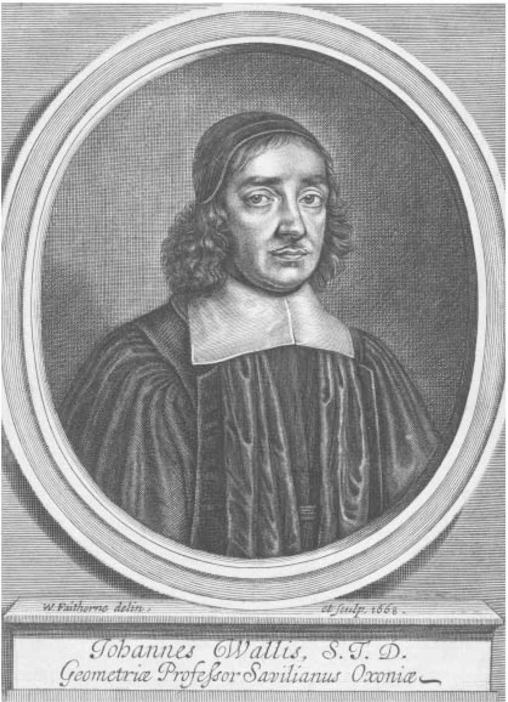
图8-1 1701年的约翰•沃利斯，当时他正处于与霍布斯交战的热烈阶段。（照片提供：National Portrait Gallety，London）
皇家学会成立三个半世纪以来，一直是世界上最权威的科研机构。可以毫不夸张地说，皇家学会包括了历史上一些最伟大的科学家。如果有人细数一下外籍会员的话，可以肯定地说，它包括了所有的伟大科学家。罗伯特•波义耳因 “波义耳定律” 注40 而闻名，他是学会的创始人之一，并且是早期学会中最有影响力的一位会士。艾萨克•牛顿通常被认为是第一位现代科学家，他在1687年出版的《数学原理》（Principia Mathematica ）对物理学、天文学，甚至数学都产生了革命性的影响，他从1702年开始直到1727年去世为止一直担任皇家学会会长。法国人安托万•洛朗•拉瓦锡（Antoine Laurent Lavoisier，1743—1794），近代化学的奠基人，是一位外籍会士。还有美国的开国元勋本杰明•富兰克林，和后来的查尔斯•巴贝奇（Charles Babbage，1791—1871）——第一台可编程计算机的设计师，以及开尔文男爵（Lord Kelvin）威廉•汤姆森（William Thomson）——热力学之父，曾于1890年到1895年担任学会会长。查尔斯•达尔文（进化论），欧内斯特•卢瑟福（Ernest Rutherford，原子结构），阿尔伯特•爱因斯坦（相对论），詹姆斯•沃森（James Watson，DNA），弗朗西斯•克里克（Francis Crick，DNA）以及斯蒂芬•霍金（黑洞），等，他们都是曾经或现任的皇家学会会员。这只不过是他们当中一小部分最著名的成员，但足以得出结论：现代科学史上的杰出科学家大部分都是伦敦皇家学会会员。
从1645年起，沃利斯开始参加由一些热爱自然哲学的绅士举办的非正式会议，这些会议为以后学会的成立奠定了基础。根据皇家学会的历史学家托马斯•斯普拉特记载，当时会议的目的并不是要建立一个科学研究院，推动前沿知识的发展仅是一个次要目的。斯普拉特称：“他们的首要目的就是为了享受更加自由和宽松的氛围，并能彼此平和地交谈，远离那个阴霾时期的激情和疯狂。”在当时的历史时期，保皇党和议员，长老会派和独立派，清教徒和狂热派，土地所有者和租户，这些党派都在进行着针锋相对的斗争，而这些学者是想寻求暂时的解脱。他们发现，只有在研究自然科学时才能享受到暂时的平和氛围。
斯普拉特记录道：“在这样一个阴霾时期，在这样的一个坦诚而平和的团体里面，还有什么是比自然哲学更适合讨论的呢？”探讨神学问题或者“自己国家的祸患”简直太令人沮丧了。但是，自然科学能转移他们的注意力，“让他们把过去和现在的不幸暂时抛在脑后”，让他们在这个疯狂的世界里体验一种控制感，让他们成为“一些事情的征服者”。他们的会议让他们可以平静地交谈，在提出反对意见时也不会大声争吵，尽管存在分歧，但仍能找到共同点。在席卷着革命浪潮的英国，在一片愤怒、狂热和讨伐之声中，他们是在寻找一个避风港，以能够从事一个学科的研究。他们相信，这即使不能让全人类受益，至少也能让所有英国人受益。他们称这一学科为“自然哲学”，我们现在称之为科学。
根据沃利斯自己所说，他在剑桥学习期间就已经了解到了新哲学。现在，有了这些新的同伴，他开始系统地学习起了新哲学。他们每周召开一次会议，有时在某位成员的家里，有时在格雷欣学院，他们讨论并实验一系列新的想法和发现，他们的研究成果正在撼动中世纪知识秩序的基础。沃利斯列出了他们所涉及的所有领域：
物理学、解剖学、几何学、天文学、航海、静力学、磁学、化学、机械力学……血液的循环、静脉瓣膜、哥白尼假说、慧星的性质、新的恒星、木星的卫星、土星的椭圆轨道、太阳黑子、太阳的自转、月面学、金星和水星的相位、望远镜的改进并由不同观测目的的镜片打磨、空气的重量、真空的可能性或不可能性、托里切利汞柱实验、自由落体实验，以及加速度。
沃利斯解释说，其中只有两个领域是避而不谈的：“神学与国家事务”。
沃利斯在伦敦参加了数年这样的会议。他作为一名坚定的长老会派成员，不但参加了反对处决国王的抗议活动，而且参加了反对军队清洗国会的抗议活动，即使是在这期间，他也在参加学会的会议。正如他多年之后在自传中写道的那样，也许是因为他的政治实验者身份为他提供了一个有利的避风港，才使他得以避免了空位期政治上的教条主义。他很可能是在为自己找退路，他希望，如果万一长老会派的权力瓦解了，那么他与自然哲学家的关系能帮他找到获得安全或成功的途径。而实际情况也正是这样发展的。一直只是一位业余数学爱好者的沃利斯，开始学习更专业的数学知识。可以肯定的是，在他被意外任命为牛津大学的萨维尔几何学教授的过程中，这起到了一定的作用。
搬到牛津并没有终结沃利斯与这个团体之间的联系。其他几位成员在大约同一时期也来到了牛津，他们与牛津大学的一些老朋友一起成立了牛津大学哲学学会，定期在罗伯特•波义耳的家里召开会议。沃利斯回忆说：“那些在伦敦的学者继续像以前一样定期召开会议（我们偶尔去那里时也和他们一起），我们这些在牛津大学的学者……继续在牛津举办这样的会议，而且使这种学术探讨成为这里的一种时尚。”这两个团体交往密切，当查理二世为伦敦皇家学会颁发特许证时，牛津学会也包括在其中，它的成员成为皇家学会的创始人。沃利斯是两个学会的幕后倡导者，他成了这个新组织的一位重要成员。
在国王的庇护下，伦敦皇家学会成为引领潮流的科学组织，与法国皇家科学院一起，成为欧洲和欧洲以外国家的科研机构的典范。学会在成立初期的定期会议，主要进行一些公开的实验，实验内容包括光学、物质的结构、真空实现、望远镜观测等，以及其他一些主题，这些实验主要由学会的实验管理员（Curator of Experiments）罗伯特•胡克（Robert Hooke）操作执行。最著名的罗伯特•波义耳的空气泵实验（用以研究空气的结构和组成），就是在伦敦皇家学会的公共实验室，在众多见证人面前进行的。1665年，学会的秘书亨利•奥登伯格推出了《伦敦皇家学会哲学汇刊》（Philosophical Transactions of the Royal Society ），这是世界上第一份科学期刊，当然也是历史最悠久的科学期刊。这份科学期刊不仅刊登学会会员的调查报告，而且还包括学会之外其他人的研究成果，这使得皇家学会成了科学研究的世界中心。
早期伦敦皇家学会的一些做法，在现代科学家看来也许会显得有些特别。举例来说，现在被认为有专业和业余之分的一些事物，在当时几乎没有什么分别，而且在早期期刊中还会有异常天气现象和畸形家畜出生的报告。在早期的学会中，社会地位也很重要，有不少杰出的绅士是因为他们的显赫家世，而不是因为科学成果，才享有了皇家学会会员的荣誉。从我们的角度来看，还有一件事情也是令人难以理解的，那就是实验都是公开进行的，也就是说，实验是在众多学会会员观看之下进行的，甚至有时还要在其他重要嘉宾在场的情况下进行。所有在场的人会对他们所看到的实验进行讨论，检验它的意义和重要性。在现代科学家看来，这似乎更像是一场马戏表演，而不是一场合理的科学实验。
早期伦敦皇家学会的一些实验方法与现代科学方法之间的差异，可以归因为这样一个事实，即科学在17世纪初期时还很年轻，它的一些实验方法仍然在形成过程当中。职业科学家是19世纪的产物，而不是17世纪。其他方面的差异主要是因为，当时伦敦皇家学会对自己的定义与我们如今看到的科学机构之间有着明显的差别。现代的科学机构或大学主要专注于科研和教育，主要通过其出版物和发明的数量和质量来衡量它的学术水平；伦敦皇家学会同样看重它的研究和发明，始终坚持其研究成果的实用性，但除了这一点这外，它还肩负着与现代科学机构完全不同的一个使命：为整个国家的运作提供一个模型。
这一使命与早在17世纪40年代的伦敦小组会议有着一定的渊源。在会议大厅之外，这些小组成员可能是激进派或温和派，长老会派或独立派，国会议员甚至是保皇党，所有人都为统治地位进行着生死搏斗。但是，在他们举行会议的期间，所有这些都被抛在了一边：他们不再关心宗教和政治派别，可以和平而文明地从事自然哲学的研究。斯普拉特对早期的会议这样描述道：“在这里只有对自然哲学的探讨……它使我们的思想暂时摆脱了过去或者现在遭遇的不幸……我们从未陷入世俗的派系斗争；在这里我们可以提出不同意见，同时又不会产生敌意； 这里允许我们提出相反的设想，也不会有内战的危险。”在追求自然哲学真理的过程中，沃利斯、波义耳和他们的同仁们创造了一个自由而安全的空间，在这里即使有分歧也可以和平而文明地解决。这些会议可以使人们从空位期残酷的政治氛围中解脱出来。
从一个简单的避风港开始，它最终形成了一种理想：如果这些有着不同背景和信仰的理性的人可以聚在一起，共同讨论自然规律，那么他们为什么不能在有关国家大事的问题上也这样进行讨论呢？为什么国会党和保皇党不能和平而文明地解决他们的分歧，而非要在英格兰北部的战场上互相杀戮呢？为什么独立派、长老会和圣公会不能在教会的管理问题上达成一个理性的一致意见，而非要各自都想强制推行自己的体系并打压其他派系呢？在自然哲学家的会议中盛行的这种和谐氛围，虽然有人强烈反对，但它似乎给整个英国的政治上了重要一课。正如斯普拉特所记录的那样，在这些会议上，“我们对生活在这个国家中的人们持有一种不同寻常的见解，不同党派和不同生活方式的人们已经忘记了仇恨，他们都在为同样的工作做着共同的努力……在这里，他们不仅能够不带暴力倾向和恐惧情绪地彼此和谐相处，而且还能一起工作和思考，为对方的发明提供帮助”。
在空位期恶劣的政治环境下，沃利斯和他的同伴沉浸在了他们创造的和平环境中。在这种氛围下，他们可以共同研究课题，尽管有不同意见仍能进行合作，共同推进他们所珍视的事业。当他们的团体从幕后走到台前，并由查理二世正式颁布了特许证之后，他们准备推广这种模式，利用他们的经验来重建整个政治体。他们的会议和他们的科学都有着一个共同的特征，那就是有着适度性和开放性的思想。几十年来的教条主义将被这种开放的思想所取代。狂热者的傲慢将被实验者的谦逊所取代，激情将被理性的争论所取代，各个教派的互不相容将被互相包容所取代，只要是理性的人，都将为了一个共同的事业而携手合作。
皇家学会把自己作为了国家的一个典范，他们力求做到尽可能地具有包容性。可以肯定的是，学会中不存在什么民主观念，他们的会议不欢迎下层阶级的成员，就像政治阶级不欢迎他们一样。沃利斯、波义耳和他们的同伴都惧怕并且不信任普通民众，他们认为，实现和平与秩序的唯一方式就是重建有产阶级的权威。对于绅士，学会力求建立起一个开放性的范例，这就意味着需要接受那些有着显赫家世但学术成就并不突出的贵族。学会会员在过去一直把自己视为“专业人士”，而排斥那些“业余人士”，他们现在应该减少这种强烈的门户之见，不应该再把自己作为评判所有其他人的标准。
在皇家学会的政治使命中，学会初期的公开实验也起到了一定的作用。对于诚信而理性的人如何讨论困难的问题并达成一致意见，学会初期的公开实验提供了一个范例。这个范例是指学会的创始人在空位期时召开的私人会议，他们在这些会议中进行实验和讨论，并对他们所观察到的现象提出不同的看法。最终，他们会达成一些一致意见——但仍会保留不少尚未解决的问题。为了实现这样的讨论，既然现在的学会已经成为一个官方机构，也就不必继续在僻静的个人实验室进行实验了。如果学会会员想要得出一种观点，他们就必须共同观察实验过程。因此，实验必须在有可靠证人（通常是其他会员）在场的情况下进行，然后他们就所看到的实验进行讨论，并对实验结果达成一个一致的意见。现代的实验室则完全不同，不必承担早期皇家学会的这种思想负担。它仅仅依靠专家的证词即可，因为它自然地假定外行人不会理解实验过程。
皇家学会促进和平、宽容和公共秩序的这一目标，并非适用于所有形式的自然哲学。其中最可能不适用的就是那种庞大的哲学体系，它们声称通过纯粹的理性推理达到了无可争议的真理。在这种哲学体系中，学会创始人最关心的就是笛卡尔哲学（以创始人笛卡尔的名字命名），而笛卡尔哲学正在这一时期席卷了整个欧洲大陆。在他的著作中，笛卡尔提出废除所有未经证实的假设，把所有知识精简成了一个不可撼动的真理：“我思故我在。”（I think therefore I am.）从这一坚实的确定性出发，他通过一步一步的严格推理重新创建了整个世界，在这个世界，只有清楚而明确的思想才是有效的。笛卡尔和他的追随者认为，由于他的推理是无懈可击的，所以他的结论必然是正确的。 [此书分享V信shufoufou]
波义耳、沃利斯、奥登伯格以及早期学会的其他领导者，都对笛卡尔有着深刻的印象，但也都对他的方法和结论持批评态度。他们更关心的是另一个靠纯粹推理形成的哲学体系，因为它就潜伏在他们身边，这当然就是霍布斯的哲学。霍布斯与笛卡尔在许多关键问题上有着根本的不同，但他们也有很多共同之处：两者都认为，他们的哲学体系是依照欧几里得几何体系构造而成，都建立在不证自明的假设的基础之上，并通过严格的推理得到了不可辩驳的真理。而正是由于他们坚信自己的系统推理是有效的，并且坚信自己所得到的结论是绝对正确的，这才让皇家学会的创始人觉得尤其危险。
斯普拉特在他的《皇家学会史》（History of the Royal Society ）中解释道，教条主义哲学的问题在于，“它通常会产生这样一种人，他们自认为已经解决了问题，并且不会再改变自己的观点，他们变得更加专横，并且对反对观点不屑一顾”。这种态度对科学是有害的，因为“这会使他们易于低估别人的劳动，并容易忽略别人的优点。至少，他们应该把自己放低一些”。斯普拉特继续说道，“这是一种精神上的戾气，这是最有害的”。他把这种戾气归结为“人们知识增长缓慢的原因”。更糟糕的是，这种戾气很容易导致对国家的颠覆：“人们蔑视一切权力的原因在于他们对自身智慧的过度崇拜……他们认为自己是不可能犯错的”。这必然会导致叛乱行为，因为“叛乱的根源就在于骄傲以及对自己智慧的极度自负。从而，他们会想象自己有足够的能力，可以对管理者的一切行动给予指导或者加以指责”。
斯普拉特在1663年当选为皇家学会会员时只有28岁，他当时还年轻，并且也不是特别出众，之所以招募他可能就是为了编写皇家学会的历史。如果斯普拉特在当时算是一个相对无足轻重的人，但任命他的人却是学会中最伟大的人物，包括皇家学会会长布隆克尔勋爵、秘书亨利•奥登伯格、首席科学家罗伯特•波义耳，他们都会审查并纠正他的文稿，以确保文稿正确地表达了自己的观点。这样一来，《皇家学会史》其实并不是斯普拉特的私人记录，而是皇家学会的领导者在当时发表的关于学会目标和目的的一份公开声明。当它涉及到他们对于教条主义哲学的观点时，他们的结论是明确的：教条主义会导致国家的叛乱和颠覆活动，不允许在皇家学会实行这种方法。
皇家学会的创始人认为，除了笛卡尔和霍布斯的教条式的理性主义之外，还有另一种选择，那就是实验哲学（experimental philosophy）。与理性主义的傲慢不同，实验主义能培养谦逊的品格。理性主义哲学会导致对持对立观点的哲学家产生偏见和嫉妒，而实验主义哲学会促进合作和相互信任。最重要的是，实验主义所产生的影响不是导致叛乱和颠覆，而是导致“对公民政府的服从”。不同于理性主义者的是，实验主义者从来不会声称，自己已经发现了唯一正确的哲学体系，或者自己的结果是绝对正确的、无可辩驳的真理。实验主义者不会对将要得出的结果进行任何假设，而是保持谦逊的态度，从一个又一个的实验当中发现结果，并尽力对自己的发现做出合理的解释。其结论总是当前所能给出的最好解释，但这个结论又总能在后面的实验中被推翻。而霍布斯关于人性、物质和唯一可行的政体所得出的大胆结论却并非如此。实验主义者会审慎地进行实验，经过很多次的不同实验之后，才会谨慎地，甚至有些不情愿地，仔细地对所得结果给出暂时的解释。
实验主义是一个谦逊的追求，这完全不同于像笛卡尔和霍布斯那样的系统哲学家所具有的才华和锐气。斯普拉特写道，这是“一种辛苦的哲学……教给人们谦卑并让人们承认自己的错误”。而这也恰恰是皇家学会的创始人钟情于它的原因。斯普拉特指出，实验主义“能消除思想中的所有傲慢以及不断膨胀的幻想”，教会人们努力地工作，承认自己的失败，承认他人的贡献。这正是皇家学会的创始人希望让整个政治体形成的一种态度。各个政党和派系之间互不相容的狂热，已经让整个国家陷入了暴力和混乱之中，实验主义一旦取代这种狂热，将会培养出对不同意见的宽容、合作和尊重，最终实现公民的和平。
在皇家学会的会员们庆祝这个实验性方法所创造的辉煌时，他们也在庆祝这一切的缔造者，“这位伟大的缔造者构建了整个庞大的哲学体系”。这个人就是弗朗西斯•培根。这位詹姆斯一世的大法官，在他退休之后，在关于正确的科学研究方法方面，撰写了一系列相当有影响的著作。比他更为年轻的笛卡尔认为，真正的知识必须基于明确而严格的推理；而培根则坚持认为，自然界的真正知识只能通过观察、实验以及仔细地收集事实来获得。对于皇家学会来说，培根可以称得上是实验方法的鼻祖，他也是皇家学会本身的精神之父，尽管在其创建之时他已经去世多年。事实上，皇家学会自认为是培根所说的“所罗门圣殿”的真实化身，这是培根在他乌托邦式作品《新亚特兰蒂斯》（New Atlantis ）中所提出的一个研究自然哲学的国家机构。
具有讽刺意味的是，培根在他人生的最后岁月的秘书，不是别人，正是托马斯•霍布斯。作为一名公开承认自己是理性主义者的人，霍布斯在与波义耳的争论中曾嘲笑过实验的价值。虽然培根才华横溢，但霍布斯的思想显然没有受到多少他的影响（也许只有他对自然科学不变的兴趣）。但是不可回避的一个事实是，尽管皇家学会的领导者们在努力地使培根偶像化，但他们从未在实际上结识过这位大法官，而他们的敌人霍布斯却曾经是他亲密的陪伴者。
这对培根的辉煌声誉几乎没有造成什么影响，甚至直到今天也是如此。他本身不仅是一位创造性的科学家，而且也被认为是科学革命中的关键人物之一，他的著作使科学得以发展和壮大。在过去几个世纪里，经院哲学家一直信赖古老的经典权威，认为这才是通往真理的正确路径。他们认为实验方法是值得怀疑的，而培根为实验方法给出了杰出的辩护。他为实验科学的发展提供了一个路线图，他提倡依靠同一领域的大量学者来系统地收集数据，并在一个集中的机构对汇总的数据进行系统的评估。也许最重要的一点就是，他使实验性方法变得值得尊敬了。
在培根出现之前的很久一段时间，一直有一些人试图通过错误而粗略的方法获取自然界的秘密。有时，他们会取得成功，如火药和指南针的发明，而更多时候则没有那么幸运，比如那些炼金术士，他们建造了精心设计的实验室，利用各种火炉和化学药品寻找难以捉摸的金石。但是，任何通过这些方法所获得的知识，即使它被证明是有用的，也都被认为不适合在高等学府进行传授。因为，这是“粗鲁”和“靠体力”得来的知识，它与下层阶级有关，只有下层社会的人才会以脏乱环境下的体力工作为生。从来没有哪位自重的绅士会屈尊从事这样的工作，因为他们担心会被沾染上平民气息。那些值得学术研究的真正的知识，必须能够在古代大师们的经典著作中找得到，或者是源自于严格的逻辑推理的知识。实验结果根本不被看作知识，因为这些结果依据的是不可靠的感觉，因此并不能达到所要求的确定性。培根几乎单凭一己之力破除了这种观念。让英国大法官来提倡经验主义作为获得正确知识的路径，这是再合适不过的了。猛然间，对于具有求知欲的绅士来说，“粗鲁的体力”活动成为他们一项值得从事的追求。
然而，培根的方法论中有一个方面经常受到批评，即他对数学作为科学工具的贬低。这并不是说培根完全忽视数学，因为他确实承认，世界上的物体存在数量，而数学就是关于数量的科学。但培根认为，数学知识在使用上太过普通了。他写道，“这是人类思想的本性，倾向于在草原的一般性，而不是在森林的特殊性中获得满足”，而数学是“满足这种欲望”的最佳领域。但是，这样的做法是“对知识的极端偏见”，因为所有的知识之所以值得追求，是因为森林那样的特殊性，而不是草原那样的一般性。培根承认，数学是有用的，但只能在实验领域中居于从属地位，从这方面来看，它不算是一门科学。比知识增长更糟糕的是，“数学家的过分讲究和骄傲，他们几乎要这让这种科学凌驾于物理学之上”。
培根对数学作为认识世界的工具所持的怀疑并不十分难以理解。为了使数学能够正确地描述自然界，那么自然界必须是数学的，也就是说，自然界是根据严格的数学原则构造而成的。如果真是这样的话，那么为了了解自然界的运作，人们所需要做的就是遵循严格的数学规则，从而所有的观察和实验都成了多余的。但培根并没有做出这样的假设。他相信，除了进行仔细和系统地观测之外，没有其他办法能够知道世界是如何构造的。对于人们可以通过单纯的数学推理推导出自然界的运作方式，这种想法是一种危险的幻觉，它基于毫无根据的自豪感，并且必然会把科学家引入歧途。
培根对数学家“优雅和骄傲”的警告并没有影响他的追随者——这些皇家学会的创始人。尽管学会被正式命名为“促进自然—数学实验知识发展学会”（Colledge for the Promoting of Physico-Mathematicall Experimentall Learning），实际上，“数学”研究确实严格从属于“实验性”的自然科学研究。学会的领导者与培根有着同样的担心，即数学会滋生傲慢，很容易会认为上帝是按照严格的数学结构创造的世界。像培根一样，他们担心数学推理会诱导科学家远离辛苦的实验工作。
不过，皇家学会的创始人还有一些其他顾虑，这些顾虑在培根发出警告之前的半个世纪就已经存在了。他们认为，数学是教条式的理性主义哲学家的盟友和工具。它成为理性主义者精致哲学体系的一个模型，数学家的骄傲也正是笛卡尔和霍布斯骄傲的基础。而且，正如那些理性论者的教条主义会导致不宽容、对抗，甚至内战，因此，数学也会如此。毕竟，数学的结果没有给不同意见、讨论或妥协留下任何余地，而这些又是皇家学会所珍视的东西。数学结果是由个人得出的，而不是能过公开实验得出的，得出这些数学结果的人是一小部分专业的神职人员，他们使用自己的语言，利用自己的方法，而且不允许外行加入。数学结果一经得出，就被赋予了蛮暴的力量，要求完全的赞同，而不允许反对。当然，这正是霍布斯如此崇拜数学的原因，但也正是波义耳和他的同仁们所担心的：他们认为，数学就其本质而言能够导致绝对真理、教条主义、暴政威胁，并且很容易导致内战。
然而，尽管有这些思想上和政治上的危险，但数学的作用也是不容忽视的。新哲学方面的一些最伟大的成就都得益于数学。医学上的一些进步，如哈维发现的血液循环，肯定是实验性的结果，还有用于测量气压的著名的“托里切利实验”、威廉•吉尔伯特对磁力性质的研究。但是，这个时代最伟大的科学胜利当属天文学领域，而且该领域也非常得益于数学的发展。
那么，皇家学会的领导者们现在该何去何从呢？他们不能简单地忽视数学对科学所做出的杰出贡献，也不能忽视它所表现出来的一种强烈迹象，即它很可能继续在今后的科学发展中发挥核心作用。但皇家学会如何在既能享有数学所做出的重要科学贡献的同时，又避免它在方法论、哲学和政治上可能产生的危险影响呢？这成了皇家学会需要面对的一个难题，很多年来，他们都为数学的科学特点陷入一个两难的境地。但没有人比约翰•沃利斯更能敏锐地察觉到这种冲突。
沃利斯是皇家学会创始人里面的唯一一位数学家，因此解决数学地位问题的任务自然就落在了他的身上。他完全能够感受到同伴对于教条主义的深恶痛绝。在他的自传中，他对自己关于不同意见所采取的态度感到自豪，即使在对方观点与自己产生冲突时，他也保持着适度与开放的态度。他写道：“我始终尽力按照适度的原则行事，介于两个极端之间……而不是带着强烈的敌意去反对那些不按自己想法行事的人，因为我知道，每一方都有许多杰出人士。”
然而，作为一名数学家和萨维尔教授，在沃利斯所从事的数学领域中，人们一直以来所引以为豪的正是它固定的方法、绝对正确的结果以及不容置疑的真理。而皇家学会的会员所珍视的却是适度性和灵活性，那么他该如何调和两者之间的关系呢？沃利斯的解决办法很简单，也很激进：他创造了一种新的数学。不同于传统的数学，这种新数学将不再以严谨的演绎证明作为研究方法，而是以反复试错的方法进行，它所得到的结果将是一个极可能的结果，而不是一个无可辩驳的确定性结果，这些结果不再是通过“纯粹理性”进行验证，而是以讨论并达成一致意见的方式进行验证，就像在皇家学会进行的公开实验那样。最终，他的数学将不再以完美的逻辑性作为评价标准，而是以产生新结果的有效性作为评价标准。
换句话说，他的数学不是以欧几里得几何为模型——虽然这个宏大的逻辑体系在两千多年里曾经启发过无数学者，当然也包括克拉维斯和霍布斯——而是仿效皇家学会的实验方法建立的数学体系。如果沃利斯能够成功的话，那么他将使数学与教条主义及不宽容彻底脱离干系，并且能够解决一些学会会员一直以来对数学所持有的反对意见。这将是一种新的“实验数学”（experimental mathematics），它将能够强有力地服务于科学，成为一个宽容和适度的典范，而不是教条和僵化的典范。而它最核心的部分将会是无穷小概念。
沃利斯作为萨维尔教授出版的第一部著作名为《论圆锥曲线》，从这本书的第一个定理中就可以看出他的方法的独特性。
我们首先假设，所有平面都是由无穷多的平行线构成（根据博纳文图拉•卡瓦列里的《不可分量几何学》）。或者更确切地说（我更倾向的），是由无穷多个高度相等的平行四边形构成，每个平行四边形的顶垂线（altitude）为整个图形高度的
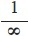
（符号∞表示无穷大），或者为一个无穷小的等分部分。因此，所有平行四边形的顶垂线之和等于该图形的整个高度。这就是沃利斯的无穷小数学，我们立刻就置身在了这个极其非正统的数学世界之中。像在他之前的卡瓦列里和托里切利一样，沃利斯也认为平面是类似于物质的对象，它由排列在一起的无穷多条线构成，而不是欧氏几何中的那种抽象概念。对于所有读过这本小册子的数学家来说显而易见的是，这与经典的芝诺悖论以及通约性问题都产生了冲突，霍布斯和法国数学家皮埃尔•德•费马很快就指出了这一点。但沃利斯对这些明显的批评并没有在意。他的这种“面由线构成”的观点，源自于卡瓦列里对面的定义。卡瓦列里的一个著名类比是，面是由线构成的，就如同布料是由纺线构成的一样，他还把面看作是所有线的集合。因此，他直接提醒读者参考卡瓦列里的方法，因为卡瓦列里不仅已经回答了所有的反对意见，而且给出了更多的解释。沃利斯甚至发明了一种符号来表示构成平面的无穷小量的数量及大小，它们分别为“∞”和“ ”。
有了这些基本的工具，沃利斯开始通过证明一个实际的定理来说明其方法的效用：
由于一个三角形是由无穷多成比例的线或者平行四边形构成的，这些平行四边形由顶点顺次排列到底边（如前面所讨论的）：那么这个三角形的面积就等于底边乘以高的一半。
当然，为了确定三角形的面积是底乘以高的一半，沃利斯并不需要给出复杂的证明。这个证明的目的并不是证明其结果，而是通过说明它能够得到正确并且熟悉的结果，来证明他非传统方法的有效性。一旦确定了自己方法的可靠性，他就可以用它来解决那些更具挑战性和不熟悉的问题。
关于构成三角形的这些线呈“算术比例”这一说法，在这里需要做出一些解释。沃利斯的意思是说，如果在三角形内画出平行于底边的所有平行线，并且，如果这些线是沿着三角形的高以相等的距离分布着的，那么这些线的长度就形成了一个等差数列。例如，如果在三角形的顶点与底边之间画出一条平行于底边的线，它的长度为底边的一半，这就形成了一个等差数列（0，
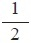
，1），分别为顶点、画出的那条线和底边；如果将三角形的高分成三等份，并在三分之一和三分之二处分别画出平行于底边的线，那么它们的长度将形成一个等差数列（0，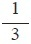
，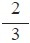
，1）；如果将三角形的高分为十等份，则平行于底边的各条线段长度将形成一个等差数列（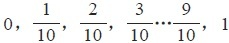
），以此类推。不管将三角形的高分成多少份，只要它们彼此间的距离相等，这种说法就是成立的。在他的证明中，沃利斯假定，即使在三角形的高被分成无穷多个等份时，这个原则也同样是成立的。他继续证明道：这是数学界众所周知的一个规则，即一个等差数列的总和，或者所有数列项的总和，等于其最大值与最小值的和乘以总项数的一半。这是如今很多中学生都了解的一个简单规则。例如，从1到10的所有数字的总和，等于11（即1+10）乘以5（数列的项数的一半），即等于55。将单一一个点的无穷小量标记为字母“o ”，然后沃利斯开始利用这一规则来对构成三角形的所有不可分割线进行求和：
因此，如果我们认为最小的一项为“o ”（由于我们假设一个点的大小等于“o ”，就像数字中的零一样），则两个极值之和就等于最大项。我们用图形的高度来代替数列中的数值，因此，如果我们假设数列的项数为∞，则它们的长度之和等于
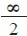
×底边（因为底边等于两个极值之和）。沃利斯依据的是所有线的总长度构成三角形。由于它们的数量是无穷的，并且它们的长度从零（或“o ”）一直增长到底边的长度，它们组合在一起的总长度就等于 ×底边。然后他再用总长度乘以每条线的厚度：
由于我们假设每一个不可分量（线或平行四边形）的厚度或高度为
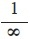
×三角形的高度，现在再用它乘以总长度。用 ×A 乘以 ×底边就将得出三角形的面积。也就是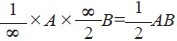
。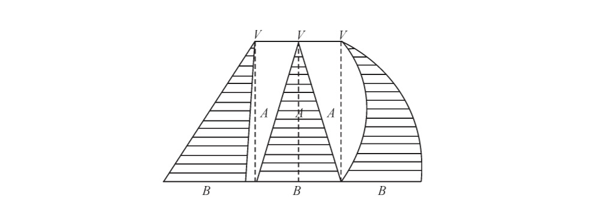
图9-1 沃利斯的三角形，由平行线构成。［《论圆锥曲线》（Oxford：Leon Lichfi，1655）］
这就是沃利斯计算三角形面积的方法：他求出所有构成三角形的线的长度它们形成一个等差数列）之和，然后用每条线的“厚度”乘以它们的总长度。这样就得到了一个等式，在它的分母与分子中都含有∞，他消掉了分子与分母中的∞，最终得到了我们所熟悉的三角形面积公式。证明完毕。
可以毫不夸张地说，现代数学家肯定不会赞同沃利斯这些不成熟的计算方法。许多与他同时代的人，包括费马还有所有的SJ会士，也都不赞同他的方法。除了“面由具有一定（非常小）厚度的线构成”这一有问题的假设之外，沃利斯还在没有证明的情况下假设，适用于有穷数列的规则同样也适用于无穷数列。如果这些未经证实的假设还不够形成疑问的话，那么沃利斯在此后又随意地用无穷大除以无穷大，或用他自己的符号表示为，用∞除以∞。在现代数学中，
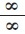
是不被允许的，原因很简单，因为如果 =a ，那么∞=a ×∞，又因为任何数值与∞相乘的结果都等于∞，所以a 可以是任意数值。但沃利斯却将 视为了一个普通的代数表达式，并将分子与分母中的两个∞互相抵消了。在受到费马等人的批评时，沃利斯似乎并不关心他的方法在逻辑上的问题，并且拒绝承认他们的任何观点。毕竟，他这样做不是为了证明他的方法符合严格的常规证明标准，而是为了让皇家学会的会员们能够更好地接受数学。沃利斯的非传统方法是如何实现的呢？首先，他假定，几何对象是世界上“存在”的对象，并可以像对待任何自然对象那样对其进行研究。这与传统观点截然相反，传统观点认为，所有的几何对象都应该根据第一原理构造而成。这也与霍布斯的观点背道而驰，他认为，因为是由我们构造了几何对象，所以它对我们来说应该是完全可知的。而沃利斯的观点却并非如此，沃利斯认为，三角形已经存在于这个世界之中，而几何学家的工作就是要破译隐藏其中的属性——就像科学家试图了解地质岩层或者动物的生物系统一样。鉴于对物理世界的常识和直觉，沃利斯得出结论，三角形是由排列在一起的平行线构成的，就如同一块岩石是由地质岩层构成的，一块木头是由纤维构成的，或者（按照卡瓦列里的说法）一块布料是由织线构成的。
根据沃利斯的观点，由于几何对象是客观存在的，所以完全没有必要遵循数学的严谨性。在传统的几何学中，人们必须遵循第一原理构造几何对象，来证明有关几何对象关系之间的定理，其逻辑严谨性是必不可少的。毕竟，只有这样严格地坚持正确的逻辑推理，才能保证其结果的正确性。然而，人们在研究自然对象时的情况却大不相同，因为它是由客观现实决定了所得的结果是否正确。过度坚持严格的逻辑推理可能会适得其反。
举个例子，假设一位地质学家在研究岩层。他肯定不会只因为有人指出，他们的研究报告有拼写错误，或者一个测量数据具有一个微小的错误，就否定他们的结果。而是，如果结果正确地描述了这个岩层——它的结构、年代、形成方式，等等——那么这位地质学家就可以正当地得出结论：尽管有一些微小的误差，但他们的总体方法肯定是正确的。这个道理对沃利斯同样适用，他把三角形当作客观对象来进行研究，在他看来，三角形与岩层没有本质区别。我们可以想象得到沃利斯的想法，他认为坚持严谨性固然很好，但这不能阻碍得到新的研究成果。有些数学家抱怨他的无穷小量以及他用无穷除以无穷的做法，但沃利斯认为这不过是迂腐的表现。他毕竟确实得出了一个正确的结果。
这种随意无视逻辑严谨性的做法，对于一位数学家来说是一种奇怪的态度，但沃利斯早在1643年的《探寻真理》一书中就表现出了他与众不同的观点。沃利斯没有采用欧几里得几何的纯粹逻辑推理，而是假设三角形近乎为物质对象，可以通过感官直觉对其进行感知。在沃利斯看来，三角形当然能够从视觉上被看到，即使不能从味觉上“品尝”到它的内部结构，也可以“感觉”到，因此人们可以获得对它的基本感觉。他在1657年出版的《普遍数学》（Mathesis Universalis ）中自信地写道：“数学对象存在于现实之中而不是想象之中。”
沃利斯在1643年出版《探寻真理》之后，在接下来的10年里他又出版了大量数学著作，在这10年里，他的生活有了很大的变化。他彻底远离了长老会，从伦敦搬到了牛津大学，并成为一名专业数学家和萨维尔教授。但是，当涉及如何获取真正的知识这一问题时，已成为杰出数学教授的沃利斯，与年轻时那个作为国会议员的沃利斯同样具有煽动性：获取真正知识的途径，不在于抽象推理，而在于物质直觉，“它是无法被意志拒绝的方法”。
沃利斯在《论圆锥曲线》中用到的方法，是将几何对象定义为客观存在的物体，但对于如何研究这些几何对象，他没有给出更详细的答案。在证明三角形面积的过程中，沃利斯凭借着一种对物质的直觉，将面分解成了无穷多条平行线，然后再对它们进行求和。这种方法在解决当前问题时被证明是有效的，但它不是一种可以适用于广泛数学问题的“方法”。在《探寻真理》一书中，沃利斯提出，更广泛的方法应该依靠实验，但并没有给出更具体的说明。应该如何运用这种实验方法，如何依靠物质科学工具与实际的物理观测，来对数学对象（如三角形、圆形和圆锥）进行抽象呢？沃利斯在《无穷算术》一书中给出了他的答案，该书紧随《论圆锥曲线》之后于1656年出版。这部著作被广泛认为是他的成名作。
沃利斯在《无穷算术》命题1的第一页上这样写道：“在这个问题以及随后的各种问题中，最简单的研究方法，就是在一定程度上列举出问题可能出现的一些结果，并观察其得到的比值，对比值进行互相比较，因此最终能够通过归纳得出一般性的结论。”这里的关键词也是最后提到的“归纳”，这种方法被沃利斯及他的批评者称为“归纳法”（method of induction）。如今，数学归纳法指的是一种非常严谨和广泛使用的证明方法，现在的中学生和大学生都会学习这种证明方法。该方法的证明过程包括，首先在一个个例中证明定理成立，比如当n =1时，然后再证明如果该定理对于n 成立，它对于n +1是否也成立，最终得到对于所有的n 都成立。然而，这是在很久之后才发展出来的方法，当时的沃利斯根本不具备这种想法。因为在17世纪，特别是在17世纪的英国，归纳法与一个特定的科学方法，以及一个特定人物密切相关，这个人就是詹姆斯一世的大法官弗朗西斯•培根，他是实验方法的奠基人和主要倡导者。
培根在1620年出版了《新工具》（Novum Organum ）一书，在该书中他发明了自己的归纳理论，这是他关于科学方法的最具系统性的著作。他把归纳法看作是演绎法的一种替代性方法。在亚里士多德及他在欧洲各个大学的众多追随者看来，演绎法是逻辑推理的最强形式。演绎法不仅是欧几里得几何学所采用的方法，而且是亚里士多德物理学所采用的方法。它从一般情况（“所有人都会死”）推导到特殊情况（“苏格拉底会死”），并从原因（“重物会落在宇宙中心”）推导到结果（“重物会落在地上”）。培根认为，这种推理方法永远不会产生新的知识，因为它没有为通过观察和实验获得新的事实留下任何空间。在培根看来，归纳法是推理的另一种形式，它与演绎法不同的是，它可以利用实验获得新的结果。
在17世纪初，归纳法当然不是一种新的想法，亚里士多德和其他一些古代哲学家早就知道这种方法。他们认为相比演绎法来说，归纳法是一种低级的推理形式。归纳法不是遵循从一般到特殊的推理过程，而恰恰相反：它需要收集很多特殊情况，然后从中得出一般原则。归纳法不是遵循从原因到结果的演绎推理过程，而从我们周围世界发生的结果开始，然后从中推理出这些结果的原因。
黑天鹅事件是许多哲学教授都喜欢的一则警世寓言，如果我们考虑到黑天鹅事件，那么归纳推理的陷阱就变得很明显了。很多个世纪以来，欧洲人一直可以见到天鹅并观察它们，他们所看到的天鹅都是白色的。利用归纳法，他们有理由得出结论，所有天鹅都是白色的。但是，当欧洲人在18世纪到达澳大利亚时，他们得到了一个意外的发现：黑天鹅。事实证明，尽管许多个世纪以来欧洲人看到过无数个特殊的观察对象，尽管每一个观察对象也都是白天鹅，但所得出的“所有天鹅都是白色的”这一结论仍是错误的。
培根的归纳法提出于17世纪之初，虽然他对黑天鹅事件一无所知，但他充分意识到了归纳法所固有的不确定性。不过他并没有就此退缩。他认为，亚里士多德的物理学是一个完美而精致的陷阱，虽然它在逻辑上是一致的，但它与这个世界是完全脱节的。他指出，扩大人类对世界的认识的唯一途径，就是直接从自然界中获得知识，这就意味着需要系统性的观察和实验。他承认，由于这些方法用的是归纳推理，所以它们具有归纳推理的弱点，它们的结论绝不会是完全确定的。培根还指出，但是，如果谨慎并系统地加以应用，充分地意识到其潜在的弱点，那么它最终会促进人类知识的进步。按照培根所说，这是研究自然和揭开自然之谜的唯一途径。
所以沃利斯在《无穷算术》的开头写道，他将通过归纳法来进行证明，他使用了一种非常特别的哲学体系：实验哲学。这种哲学由已故的弗朗西斯•培根爵士提出，后来又被皇家学会的创始人采用并推广。沃利斯已经在《论圆锥曲线》中做过说明，他将数学对象看作是客观存在的物体，就像物理对象一样。在《无穷算术》中，他说明了自己将如何研究数学对象：通过实验。换句话说，他所用来研究三角形、圆形和正方形的方法，将类似于他的朋友罗伯特•波义耳用来研究空气结构的方法，以及他的同事罗伯特•胡克在显微镜下研究微生物的方法。在试图得出一个数学真理时，他将从几个特殊情况的实验入手，并仔细观察这些“实验”的结果。最终，通过在不同情况下的反复实验，“将通过归纳法得到一个具有一般性的命题”。对于沃利斯的同事们对数学方法所持的怀疑态度，他已经找到了答案：他发明了一种数学实验来契合皇家学会的实验精神。沃利斯的数学，不是通过演绎推理得出颠扑不破的普遍规律，不是强迫认同和排除所有异议，而是通过一次又一次的实验，不断地收集证据，小心谨慎地得出一般性的、暂时的结论。这就是实验者获取知识的途径。
沃利斯的数学实验是《无穷算术》的基础工具，也是他数学声望的基础。这部著作的目标与霍布斯最具雄心的数学冒险十分相似：计算圆的面积。但是，在他们的目标之间还是有着重要差别的。霍布斯试图在只利用传统的欧几里得工具（即直尺和圆规）的情况下，真正地构造出一个等于圆面积的正方形。他这样做是注定要失败的，因为，对于一个半径为r 的圆，与其面积相等的正方形的边长应为
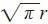
，而π （正如两个世纪之后被证明的那样）是一个超越数，这就意味着它不能通过尺规作图的方式构造出来。沃利斯当然没有试图构造任何东西。相反，他试图得出一个数值，即在正方形的一个边等于圆的半径的情况下，得出圆与正方形之间的一个正确比值。由于正方形的面积为r 2 ，圆的面积为πr 2 ，那么这个比值就是π 。由于π 是超越数，所以它不能被表示为一个一般的分数或有限小数。不过，在本书的结尾处， 沃利斯设法得出了一个无穷级数 注41 ，使他能够求出尽可能近似于π 的值：沃利斯在计算圆的面积时所用的方法，就像他计算三角形面积所用的方法一样：观察半径为R 的圆的一个象限，他将这部分面积分割成了无穷多条平行线，如图9-2所示。其中最长的线段为R ，其他的线段逐渐变短，直至在圆周时达到“0”。让我们把最长的线段标记为r 0 ，其他的线段标记为r 1 ，r 2 ，r 3 ，以此类推。同时，包围这个象限的正方形的面积也由无穷多条平行线构成，但它们的长度都相等。因此，该象限与正方形面积之间的比值为：
我们在该象限和正方形中画出的线越多——或者，我们按照现在的说法可以说，当n 趋近于无穷大时——就越接近于该象限与正方形的面积之比。
图9-2 平行线构成的象限表面。［约翰•沃利斯，《无穷算术》（Oxford: Leon Lichfield, 1656）］
现在，构成该象限的每条平行线r 的确切长度，取决于它与第一条且最长的线的距离，如果将这个R 的距离分为n 个相等的部分，并且把各个相等部分看作为一个单位，那么与R 最接近的线的长度则为
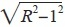
；它边上的一条线的长度则为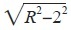
，再边上的一条线的长度则为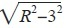
，依此类推，直至到达圆周上，最后一条线的长度为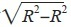
，即为零。因此，构成该象限的线与相同数量的构成正方形的线之间的比值为：在《无穷算数》中，沃利斯的目的就是为了计算，当n 增加到无穷大时的这一比值，而事实证明这不是一件容易的事。他通过一系列类似数列的近似值得出了结果，即得到了与所希望求得的比值极其接近的结果。但相比沃利斯计算圆面积更重要的是，他用来求无穷级数之和的方法得出了他的最终结果。
他在《无穷算术》的开始部分提出，假设我们已经有了一个“等差级数，从一个点或0开始……不断增加到0，1，2，3，4等。”他问道，这个数列的所有项之和与相同个数的最大项之和的比值将是多少？沃利斯决定试验一下。他从最简单的情况开始，即只有2项的数列0，1。该比值相应为：
他继续试验其他情况：
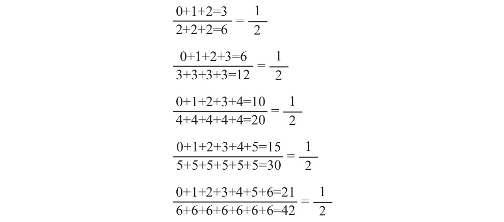
每一种情况得到的都是相同的结果，沃利斯从而得出了一个明确的结论：“如果存在一个等差级数（或者自然数列），从一个原点或者0开始不断增加，无论它是有穷的还是无穷的（不必进行区分），它与由该级数的最大项组成的具有相同项数的级数之比，都等于1比2。”
沃利斯可以很容易证明这一简单的结果，通过求从0开始的自然数列之和的通式，再除以相同项数的最大项之和：
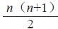
除以n （n +1），便立即可以得出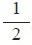
。但他的目的不是为了计算这一比值，而是为了证明归纳法的有效性：试验一种情况，然后再试验另一种情况，以此类推。如果该定理在所有情况下均成立，那么沃利斯就认为该命题得到了证明并且为真。他在多年之后写道，“归纳法是一个非常好的研究方法……它经常可以让我们得出早期发现的一般规则”。最重要的是，“它不需要……任何进一步的证明”。在得出了这第一个定理之后，沃利斯继续按照同样的方法研究更复杂的级数：如果不是用自然数列之和除以相同项数的最大项之和，而是用自然数的平方之和除以相同项数的最大项之和，结果又会如何呢？利用他所钟爱的归纳法，他试验出了结果。从最简单的情况开始，他可以得到：
然后他加入了更多项，在每一种情况下计算两个级数之比：
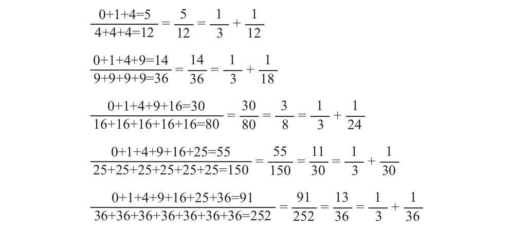
观察不同情况所得到的结果，沃利斯推论得出，级数所包含的项数越多，该比值就越接近于
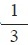
。他得出结论，对于一个无穷级数来说，这个差异将会最终完全消失。他将其总结成了一个定理（命题21）：如果存在一个无穷级数，其中的每一项都是自然数列项的平方（或者为一个平方数的数列），从0开始不断增加，它与由最大项组成的具有相同项数的级数之比，结果为1比3。
沃利斯的证明只需要一句话：他写道，“根据此前的证明，同理可证”。归纳法不需要进一步的证明。
沃利斯又再次试验了一个这种类型的级数，这次不是观察自然数的平方，而是观察自然数的立方：
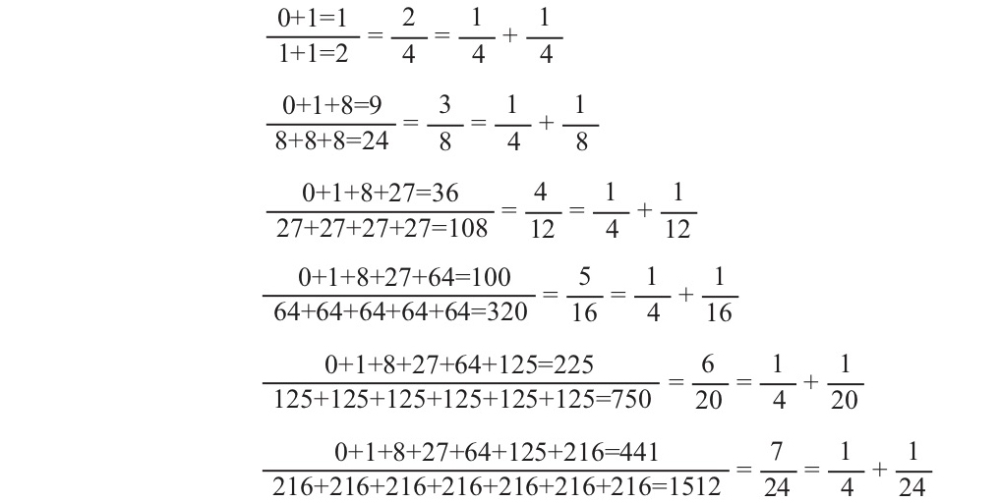
归纳法再一次不证自明地得出了结果。随着级数项数值的增加，该比值越来越趋近于
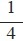
，这就得到了命题41：如果存在一个无穷级数，其中的每一项都是自然数列项的立方（或者为一个立方数的数列），从0开始不断增加，它与由最大项组成的具有相同项数的级数之比，结果为1比4。
就像此前的定理一样，该命题除了不证自明的归纳法之外，不需要其他证明。
用现代数学符号，沃利斯的这三个定理可以表示为：
沃利斯认为这些比值是计算圆面积过程中的重要步骤，因为每个代数比值都对应着一个特定的几何情况。第一个表示的是三角形与其外切矩形之间的比值，正如沃利斯在《论圆锥曲线》中给出的对三角形面积的证明。数列0，1，2，3，…，n 表示构成三角形的平行线的长度，而数列n ，n ，n ，n ，…，n 表示构成外切矩形的平行线，这两个数列的项数相等。它们之间的比值为
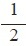
，这也的确是三角形与长方形的面积之比（见图9-1）。第二种情况对应的是半抛物线及其外切矩形之间的比值，或者更精确地说，是半抛物线以外的面积与矩形面积之间的比值。构成该面积的平行线长度以平方的形式递增，即0，1，4，9…，n 2 ，而矩形的面积则表示为n 2 ，n 2 ，n 2 ，n 2 ，…，n 2 。沃利斯实际上证明了抛物线以外的面积与其外切矩形的面积之比为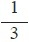
。第三个比值对应的是较为陡峭的“立方”抛物线（见图9-3），结果证明这时的比值为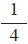
。沃利斯的目标是要计算四分之一圆及其外切正方形之间的比值，虽然这一比值相对难于计算，并且在实现这一目标之前，他还有很长的路要走，但他实现这一目标的策略明显正在成形。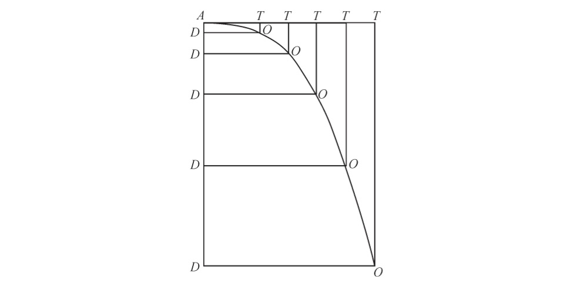
图9-3 半个三次抛物线及其外接矩形。沃利斯的比值表明，三次抛物线以外的面积AOT和外接矩形的面积之比为 。（沃利斯，《无穷算术》，命题42）
在得到了这些结果之后，沃利斯开始再次利用归纳法得出更一般的定理：适用于自然数及其平方与立方的规则，则必定适用于自然数的所有指数幂的情况：
沃利斯并没能把结果直接表示成这种形式。由于缺乏现代符号，他采用了表格的形式，他为“一次幂”确定的比值为
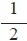
，为“二次幂”确定的比值为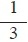
，为“三次幂”确定的比值为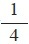
，以此类推。这个表格是开放式的，而其中的规则是显而易见的：对于任何指数幂m ，对应的比例为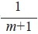
。沃利斯把几何图形视为物质的东西，并因此认为，它们就像所有物体一样，都是由一些基本部分构成的。平面图形是由排列在一起的不可分割线构成的，几何体则是由堆叠在一起的平面构成的，这正如在他之前的卡瓦列里和托里切利所认为的那样。但不同于这两位意大利数学大师的是，沃利斯用来研究数学对象的首选方法是培根哲学中的归纳法，这让他的数学研究看起来更像是实验者在实验室所做的事情，而不像是数学家在办公桌上所做的事情。沃利斯的数学方法是物质的、无穷小的、实验的方法，这是在西方数学史上最非正统的一次大胆尝试。
沃利斯利用非正统的数学方法所取得的成就，并没有引起其他数学家的重视，但这丝毫也不奇怪。皮埃尔•德•费马在今天被人们所熟知，大多是因为他的费马大定理（Fermat’s Last Theorem），这是数学领域中持续最久的未解难题之一，直到1994年它才被英国数学家安德鲁•怀尔斯（Andrew Wiles）证明出来。但在费马那个时代，这位法国人仍是欧洲最知名和最受尊敬的数学家之一。在《无穷算术》于1656年出版之后不久，他就读了这本书，在此后一年，他与沃利斯展开了热烈的争论。费马持有怀疑态度，他的批评直指沃利斯方法的非传统核心。首先，他反驳了沃利斯的无穷小学说，因为它不加鉴别地假定，人们可以通过对平面图形中的线求和的方法来计算平面面积。费马认为，沃利斯的方法存在不足：人们不能对图形内的所有线进行求和，除非他已经通过传统方法得出了这个图形的面积。如果费马是正确的，那么沃利斯的整个计划就没有意义了，因为它假装证明了实际上已知的命题。
如果费马对沃利斯随便使用无穷小感到不满，那么他对沃利斯非传统的证明方法也应该不会感到高兴。他在写给英国朝臣坎奈姆•迪格比（Kenelm Digby）的信中，对沃利斯的方法给出了评价，最初，他还在表面上保持着一定的风度：“我已经收到了沃利斯先生的信件副本，他当然是一位令人尊敬的学者。”他在开头先表达了对沃利斯的崇敬之情。但从下文来看，可能并非如此：“但他的证明方法是基于归纳法，而不是基于阿基米德风格的演绎推理，这对于那些希望从始至终看到三段论式的证明的新手来说可能有点困难。”他相当自以为是地指出，你与我当然都了解这种非同寻常的方法，但数学“新手”可能会遇到麻烦，或许沃利斯能很好地让他们理解这种方法。但在经过一番礼貌和谦虚的表述之后，马上就可以清楚地看出来，费马真正关注的并非是那些数学上的外行人，而是沃利斯的方法本身：他写道，最好是“通过常规的、合法的、阿基米德的方法进行证明”。言外之意就是说，沃利斯的方法既不符合常规，也不合法。
此后不久，费马在另一封信中明确指出了归纳法存在的问题。他警告说，我们必须非常小心地使用这种方法，因为人们利用它得到的规则“可能适用于几个特殊情况，但实际上却是假命题，而且不是普遍适用的”。他继续说道，如果小心使用的话，这种方法在某些情况下可能是有用的。但是，一定不能把这种方法作为科学的基础，像沃利斯先生那种靠归纳法得出的规则并不可靠。因此，我们所能倚靠的只能是证明方法。隐含而未明说的意思是，沃利斯的归纳法根本不算是证明方法。
沃利斯不为所动。他回复道，他的无穷小数学是建立在卡瓦列里的不可分量方法基础之上的，费马有关几何图形构造的批评，都能在卡瓦列里的书中找到答案。他的方法远非与传统方法大相径庭，而只是对无可指责的穷举法的简单应用，古代数学大师欧多克索斯和阿基米德都曾用过这种方法。沃利斯写道，如果费马仍然希望以古典形式重建所有证明，那么“这是他的自由”。但是，“他这样做可能是徒劳的，因为卡瓦列里已经替他做过了”。
沃利斯巧妙地转移了费马对无穷小方法的有效批评，而且并没有直接答复他的批评。他声称“在书中不存在什么新的东西”，这听起来有些虚伪，因为他曾公开地声明过其作品的新颖性。他在《无穷算术》写给威廉•奥特瑞德的致辞中写道，“你会发现这本书的新颖之处（如果我判断正确的话）”，并补充道，“我没理由不这样说”。他声称，卡瓦列里已经回答了所有反对意见，这是一种有效的策略，也是曾被托里切利、安杰利以及其他无穷小的提倡者所使用过的策略。这样做既忽略了SJ对卡瓦列里的致命攻击，又使不可分量学说显得获得了比实际更广泛的接受程度。这也很可能是因为费马从未真正阅读过卡瓦列里厚重的大部头，由于其众所周知的晦涩难懂，这为许多17世纪的不可分量论者提供了掩护。
对于费马对归纳法的批评，沃利斯同样不为所动。沃利斯指出，归纳法的证明“是直接、有效和简单的”，并且不需要额外的证明。他写道：“如果有人认为这种方法没有价值，那是因为他不能放下传统几何方法的浮夸与卖弄，除此之外没有其他理由。”沃利斯认为，任何一位合格的数学家，只要他肯花一些时间，都可以将其归纳法的证明转化为传统的几何证明，但这样做是徒劳无益的。他写道：“我不觉得欧几里得会如此迂腐，我也敢肯定阿基米德同样不会如此。”按照沃利斯所说，如费马这般迂腐的是极少数：“我所见过的多数数学家，在看过一些归纳法的证明之后……都会对所得出的普遍性结论及其效力感到满意。因此，这种归纳法迄今为止一直被认为是……一种有说服力的证明方法。”通过寥寥几句轻蔑的话语，沃利斯就瓦解了上千年的数学传统。
虽然沃利斯的数学方法，对于像费马那些较为正统的数学家来说是不能接受的，但对于他在伦敦皇家学会的同仁来说，这却解决了一个困扰他们的大问题。波义耳、奥登伯格和其他一些同仁已经把实验方法奉为了从事科学研究的正确方法。对他们来说，这不仅是揭开自然之谜的正确方法，也是国家合理运作的一个模型。遗憾的是，虽然实验主义支持皇家学会的创始人们对于自然和社会的愿景，但它也在政治和方法上把数学归到了错误的一边。按照一般的理解，数学不会为反对意见留下任何余地，它应该通过严格的推理产生不可辩驳的一致意见，而不是通过自由讨论达成一致意见。这是少数专家主宰的领域，他们的研究太过于专业和深奥，以至于外行学者很难有资格给予评价。基于他们独有的权威性，人们必须接受他们（绝对而且傲慢）的言论。最重要的是，对于霍布斯的专制科学和极权国家来说，数学正是其知识体系和国家愿景的基石，而霍布斯的哲学又正是皇家学会所厌恶和恐惧的。在他们看来，实验主义主张适度、宽容与和平，而数学却成了宣扬教条主义与不宽容思想的工具，其结果必然就是导致内战。
这让皇家学会的创建者们陷入了一个左右为难的境地。他们如何能够既保证数学的效用和科学成就，又不承担其不受欢迎的方面呢？沃利斯给出了答案：他独特的数学方法不仅像传统方法一样具有强大的效用，而且完全符合皇家学会所珍视的经验主义。在皇家学会的创始人们看来，这可谓是一个天赐的礼物：这是一种灵活的数学方法，不仅能够容纳不同的意见，而且能够温和地提出数学真理。这正是皇家学会能够认可并提倡的那种数学。
要想了解沃利斯的数学方法与皇家学会所厌恶的严格的欧几里得方法到底有什么不同，最好的办法就是将沃利斯的方法与他们最畏惧的人——托马斯•霍布斯——的数学观点进行比较。首先，霍布斯坚持认为，必须由我们自己根据第一原理来构造几何体，而且几何学必然是完全可知的。与之相反的是，沃利斯认为，线、面和几何图形是已经构造好的物体，应该像科学家研究自然物体那样探寻其中的奥秘。然后是数学方法的问题。霍布斯坚持认为，严格的演绎推理是唯一能够接受的数学研究方式，因为只有这种方式才能保证绝对的确定性。相反，沃利斯主张归纳法，他认为，在发现新的结果方面，归纳法远比演绎法更为有效。归纳法从未试图想要达到霍布斯所珍视的那种确定性，在沃利斯看来，确定性并不是很重要的事情。最后，由于霍布斯坚持认为自己的数学推理得到的是绝对真理，所以他对别人的意见毫不在意。他的证明本身就是对自身强有力的证明，而不管别人理解与否。但沃利斯的归纳证明不是绝对不会出现错误的逻辑推理，而是具有很强说服力的证明，旨在说服他的听众。它们的成功在很大程度上取决于沃利斯的读者是否最终相信该定理适用于所有情况，而不仅仅是他所试验的这种特殊情况。
几乎在每一个方面，沃利斯的数学都在复制他在皇家学会的同仁所遵循的实验方法。他研究的是客观存在的外部对象，而不是去构造一个几何对象；他的数学依靠的是归纳法，而不是演绎法，归纳法永远不会声称得到了终极真理，对这些真理的最终仲裁者是人们的一致意见。对于皇家学会的创始人中唯一的一位数学家，这正是人们希望他能给出的那种数学，也恰恰是皇家学会的领导者所期望得到的数学。现在的数学不再是实验方法的一个危险对手，而是可以和这些实验性方法一起促进正确的科学和正确的政治秩序。
沃利斯与霍布斯都认为，数学秩序是社会和政治秩序的基础，但除了这个共同的设想外，他们几乎没有其他的共识。霍布斯提倡严格和严谨的数学演绎方法，这是他专制、僵化、有等级的国家的模型。沃利斯提倡适度、灵活和共识驱动的数学，其目的是促进整个政治体内形成同样的这种品质，因此这种数学的重要性达到了前所未有的程度，它关乎真理的属性、社会和政治秩序以及现代世界的面貌。
在1655年夏天，萨维尔几何学教授沃利斯与宫廷政治哲学家霍布斯展开了第一场战争，沃利斯发表了《驳斥霍布斯几何》，严厉地批评了霍布斯在《论物体》中的几何方法。他们的最后一次交锋发生在23年后，90岁的霍布斯发表了《自然哲学十日谈》（Decameron Physiologicum ），其中包括一篇关于“直线与象限弧的一半的比例”（the proportion of a straightline to half the arc of a quadrant）的讨论。这是霍布斯所做的最后努力，以捍卫自己的数学并诋毁他的对手。如果不是霍布斯在第二年去世的话，这场不断拉锯的论战还可能会一直持续下去。在这期间，沃利斯发表了另外10本书和一些论文来直接针对霍布斯，而霍布斯则至少发表了13本小册子来专门针对沃利斯。除了这些之外，在这两位非常多产的作家的其他一些作品里，还可能有无数其他的侮辱、诽谤、指责以及（偶尔）严厉的批评。在论战达到顶峰时，他们互相之间的指责以非常频繁的节奏来回往复，不仅指责对方数学能力差，而且指责对方政治颠覆、宗教异端，以及个人邪恶。
在这场战争打响之时，两人很可能素未谋面。沃利斯无疑应该知道这位创作《利维坦》的著名作家，当霍布斯在1651年回到英国的时候，沃利斯的朋友及同事赛斯•沃德曾前往伦敦拜访过霍布斯。霍布斯如果知道沃利斯的话，也只因为他是（显然不够资格的）牛津大学新的萨维尔教授，他被国会任命明显是出于政治上的原因。即使在以后的岁月里，在两个人花了大量的时间来设法诋毁对方名声的过程中，也没有记录显示他们曾经见过面。虽然这很难想象，但他们在英国知识精英的紧密社交圈子里的确从未遇到过对方。他们之间的冲突是源于他们在政治上、宗教上以及数学方法上的不同意见，而不是源于个人恩怨。但没过多久，两个人的冲突就转移到了个人身上，并且开始恶言相向。
沃利斯对霍布斯的批评，在早期所定下的基调为：“没有人会怀疑这个人是多么地高傲自大”，他在《驳斥霍布斯几何》一书写给约翰•欧文（John Owen，基督教会学院院长和牛津大学副校长）的献辞中这样写道，“当我看到他，还有（他著名的）‘利维坦’或者说‘巨人’，所表现出的那种傲慢和不可一世，我认为应该彻底打击一下他的嚣张气焰，让他能够明白，如果没有分工协作，他就不能做任何自己喜欢干的事情……”一个膨胀而且傲慢的“巨人”四处横行，仿佛唯独他才拥有真理一样，这成了沃利斯所喜欢的对霍布斯的讽刺刻画，他发誓要“刺破这个人的膨胀之躯，因为他是如此的满腹空话”。至于霍布斯，他似乎并未受到沃利斯粗言的影响，虽然他会偶尔抱怨对手粗俗的语气，但他饶有兴趣地加入了这场论战，并且自得其乐。
霍布斯对沃利斯的恶言抨击给出了首次回应，而从他的这些标题中就可以看出其居高临下的姿态：《给数学教授的六堂课》（Six Lessons to the Professors of Mathematics ）、《一种几何学》（One of Geometry ）、《另一种天文学》（the Other of Astronomy ）。如果说此前沃利斯认为他傲慢是没有依据的，那么他发表的这些小册子无疑证实了沃利斯的说法。霍布斯作为卡文迪许家族的家庭学者，既没有文凭也没有职位，却妄想教给沃利斯和沃德几何学知识，要知道，这两位数学家可是占据着欧洲最杰出的数学职位。霍布斯并没有就此停止，在他写给皮尔庞特（Pierrepont）勋爵的献辞中，他继续争辩道，他其实远比他们更能胜任他们的数学职位：凭借在《论物体》中建立的真正的几何基础，“我就足以能领受沃利斯博士所领到的那份薪水”。
至于著作本身，霍布斯从捍卫自己的数学著作开始，后来发展到嘲讽沃利斯，并以他的轻蔑回应沃利斯的轻蔑。他对沃利斯的《无穷算术》以及有关接触角的著作评论道：“我可以肯定地说，这些书中出现的谬论之多，在几何领域可谓是前无古人、后无来者的。”对于沃利斯所用的代数符号，其中有一些是他自己发明的（比如∞），他这样评论道：“这些符号蹩脚而且不美观，即使有必要用，也只能是证明的辅助；而且完全不必公之于众，这些丑陋的东西，最好还是留给你自己用。”按照霍布斯的说法，沃利斯的《论圆锥曲线》“布满疤痕一样的符号，这甚至让我没有耐心去检查他的证明是否正确”。也许正是因为他这样说，才会让沃利斯在多年后想到了那些妙语来反驳霍布斯，沃利斯说那些嘲笑数学符号并坚持古典证明方法的人，“沉浸在线与图形的浮夸虚饰中不能自拔”。当沃利斯试图对霍布斯的一些更为实质的批评做出回应时，霍布斯像一个专横的校长管教一个任性的孩子一样斥责了他，他不耐烦地写道，“你确实很活跃而且没有规矩，我都无法预知你要做什么，我也不需要知道”。但一切都是徒劳的：“你的《无穷算术》从头到尾都是徒劳无功的”。
他们这样反复的交锋持续了将近20年。霍布斯更加文采出众和才思敏捷，但沃利斯拥有更高的谴责热情和声势。沃利斯很好地利用了自己在牛津大学和皇家学会的职位优势，逐步孤立霍布斯，并在英国学术界诋毁他的声誉。如果说在17世纪50年代时，霍布斯还被普遍认为是一位令人敬畏的科学家和数学家，那么到了17世纪70年代时，他已经被当成了一位政治哲学家，只是他不明智地偏离了自己的专业领域，并且被揭露为是一位不称职的业余数学家。即使霍布斯以前的学生国王查理二世，也加入到了揶揄这位老哲学家的行列：当霍布斯到宫廷进行经常性的拜访时，国王会说，“冬眠的熊来了！”结果，尽管他是英国最著名的学者之一，尽管他有很多熟人在皇家学会位居要职，但他从来没能当选为皇家学会的会员。霍布斯将此归因于他在皇家学会的两个势不两立的强大敌人——沃利斯和波义耳，毫无疑问，他这样说也有一定的道理。但还有另外一个原因，他与沃利斯持续数十年之久的激烈斗争（以及与波义耳的短期斗争），已经使得他在科学上声誉扫地，所以也就不够资格当选为会员。
当这两位著名学者进行这场公开争论的时候，在他们的之间的声讨和愤怒之下，实际上隐藏着诸多危机。沃利斯解释了，他为什么会首先对霍布斯的数学发起攻击：他问道，“当他在其他方面也犯有同样更危险的错误时，我为什么没有针对他的神学和其他哲学，而是要反驳他的几何学呢？”他解释道，其原因就是，霍布斯已经“通过几何学奠定了他的哲学基础，如果没有几何学，那么他的哲学将几乎不存在什么合理之处”。霍布斯对其哲学体系的数学基础是如此肯定，以至于“当他看到有人与他在神学和哲学上存在不同意见时，他都会高傲地认为应该把他们赶走，因为他们根本不懂几何学，他们根本不明白这些东西”。唯一能够推翻霍布斯的整个哲学体系的方式，就是证明他其实是一个在数学上不学无术的人。这样，他的“满腹空话”将被“彻底戳穿”，人们就会知道“……其实没有必要对这个利维坦过于担心，因为他的（最有信心的）盔甲很容易被刺穿”。
在与霍布斯经过几个回合的激战之后，沃利斯在1659年写给荷兰博学家克里斯蒂安•惠更斯的一封信中重复解释道，对霍布斯“非常恶劣的抨击”，并非是因为自己缺乏修养，而是由于“事出必然”。这是“因为利维坦的挑衅，他尽其所能地攻击了我们，破坏了我们的大学教育……特别是攻击了神职人员，以及所有的机构和所有的宗教”。沃利斯继续说道，既然这个“利维坦”非常依赖于数学，“似乎有必要由一些数学家……让他明白他自己对数学（其勇气产生的根源）的理解是多么得少”。摧毁他的数学公信力会使霍布斯的学说失去信任，并使这些教育机构免受他具有破坏性的哲学的威胁。
对沃利斯来说幸运的是，霍布斯非传统的几何学为高明的数学家提供了很多可以攻击的地方。如果霍布斯牢牢坚持多年之前所迷恋的古典几何的话，也就是他在欧洲大陆的一位绅士的图书馆那里偶然发现的欧几里得几何，那么他还可能具有更可靠的理由。但对霍布斯来说，这种几何还远未达到他的要求：为了支持他的政治体系，他的几何学必须是一门完美的科学，能够解决所有突出的问题。所以他需要将古典几何学转换成他希望得到的那种几何学。他之所以遇到问题，并不是因为他在数学上的无知，从他所尝试的证明方法来看，他已经显示出了很强的数学能力。究其原因在于，根本无法通过古典的几何方法解决“化圆为方”的问题，因而他所希望建立的体系从一开始就是注定要失败的。
在一定程度上，霍布斯效法了克拉维斯和SJ，他们都企图利用几何学来作为知识、社会和国家的正常秩序的模型。在他们所主张的具有严格等级制度的体系中，主权者（对于霍布斯来说）或者教皇（对于SJ来说）的话都具有法律效力，所有反对意见都被视为荒谬的，这反映了理性和不可辩驳的几何秩序。但霍布斯比SJ更进了一步：他不仅将几何学视为一种模型和理想，还试图在逻辑上系统地从他修改过的几何原理中推导出他的哲学。这就要求他能够证明，世界上一切事物都可以通过几何原理构造出来，他在《论物体》要做的就是这些。
但事实证明，这个世界不可能完全由数学构造出来。毕达哥拉斯学派早在2000多年前就认识到了这一点，不可通约性（无理数）的存在颠覆了他们原有的信仰，即世界上的一切事物都能够以整数之比来描述。
当沃利斯嘲笑他在“化圆为方”上的屡次失败时，霍布斯曾试图为自己辩护。他抗议沃利斯重新引用被他抛弃的结果，他写道：“看来你已经知道了我否定的那个命题，你这样做是令人不齿的行为，就像我排泄物里面的虫子。”他承认自己在《论物体》中的前两次尝试是错误的，但他坚称，只是因为一时疏忽才会导致这样的错误，而他的方法没有任何问题。
霍布斯不想，而且很可能不能，承认他的基本方法是有缺陷的。他认为，他的整个哲学体系都受到了威胁，如果承认他的几何学是没有前途的，那么对他来说，就如同承认他所创作和主张的一切都是没有意义的。因此，在此后的20多年里，霍布斯不断地提出新的“证明”，而沃利斯也了解这些证明对霍布斯来说是多么得重要，他也在不断地拆穿它们。走投无路并且孤立无援的霍布斯，面对着对他的数学方法不断增加的批评，终于放低了姿态。在1664年，关于他的又一个“化圆为方”的方法，他在给朋友索比耶的信中写道：“对于即将发表的证明方法，我不希望再对其进行更正、证实或者争论了。”“这是正确的方法，如果人们背负着偏见，不够仔细地去理解它，那就是他们的错误，而不是我的。”在去世之前他仍然完全相信，他已经成功地解决了“化圆为方”的问题。
对于那三个经典几何难题，霍布斯一次又一次地提出新的解决方法，而沃利斯也一次又一次地拆穿他的解决方法，沃利斯从否定他的方法中找到了自己的乐趣。沃利斯也会收到他的对手对他的批评，而他也把这些对他的批评用到谴责霍布斯的数学上面。特别是，沃利斯反对霍布斯试图用物理学上的物质原则来构建数学。沃利斯指责道：“在你之前，有人曾把点定义成物体吗？有人曾真正地提出过数学上的点存在大小吗？”如果点存在大小，那么把两个、三个或者一百个点加在一起，将会使它们的大小增加两倍、三倍或者一百倍，这明显是荒谬的。相同的批评也适用于霍布斯在其几何学定义中所使用的其他物理属性，比如他定义的“动力”和“冲力”。霍布斯需要这些术语，因为他认为所有的证明都必须受到物质原因的驱动。但沃利斯看到了其中的漏洞，他采用古典欧几里得几何的观点，将完美的几何对象与霍布斯所定义的有缺陷的物质对象进行了严格的区分：沃利斯问道，在几何定义之中，“出于什么目的才会考虑时间、重量或者其他类似的量值呢？”他认为，这样的物理属性在几何世界中根本没有存在的必要。
沃利斯因为霍布斯在数学中加入了物质概念而批评他，沃利斯这样的做法可以说是有些虚伪的。毕竟，沃利斯在自己的数学方法中也做着同样的事情：他主张将几何对象看作已经存在的“客观对象”，将它们划分成不可分割的组成部分，并通过实验性方法对它们进行研究。事实上，霍布斯很乐于用同样的理由来谴责沃利斯。然而，沃利斯的数学说到底还是比霍布斯的方法更不容易受到攻击，因为霍布斯想用数学作为一个确定性的堡垒来支撑他的政治哲学。因此，所有关于其方法的逻辑可靠性的批评都指向了其哲学体系的核心。相比之下，沃利斯并不十分在意方法上的确定性。他在多年后解释道，他的目的“在很大程度上不是为了提出一种用于研究已知知识的方法……而是要提出一种发现未知知识的研究方法”。沃利斯最为关注的是方法在获得新结果上的有效性。而所使用的证明方法是否完美或者无懈可击，这并不是沃利斯十分看重的。
霍布斯是绝不会接受这种观点的。他认为，混乱的基础会导致混乱的思维、混乱的知识、争议和社会冲突。霍布斯认为，沃利斯及其他神学家，之所以提倡这种很难站得住脚的数学理念，不管是没有大小的点，还是非物质思想，其中唯一可能的原因就是，他们是出于自身利益的考虑，试图使自己获取本应属于主权者的权威。他决定制止他们的这种做法。他解释道，写《利维坦》是为了揭露那些英国牧师在如何努力地夺取尽可能多的权力，以至于最终导致了内战的爆发。在这场对抗权力饥渴的神职人员的斗争中，他与沃利斯的斗争也同样是其中的一部分。他在1655年写给索比耶的信中解释道：“我是在与全英国的所有神职人员进行斗争，而沃利斯就是他们反对我的代表。”阻止这场阴谋并拯救国家的办法就是，揭露沃利斯数学的虚伪，把他从有威望的数学家行列中赶出去，使他失去信誉。
霍布斯直接攻击了沃利斯数学的两大支柱。他首先针对的是归纳法。他充满怀疑地惊呼道：“这位逻辑学家和几何学家，居然认为归纳法……足以推断出一个普遍适用的结论，并且适用于几何证明！”一个数学规则适用于一定数量的情况，并不意味着它也适用于其他未经验证的情况。费马曾提出过同样的观点，实际上任何一位具备古典理念的数学家，都可能会提出这种观点。
不过，沃利斯数学的第二个支柱才是霍布斯的重点打击对象，即无穷小概念。沃利斯将三角形面积分割成了无穷多条平行线，每条线都具有一个无穷小的宽度 ，然后再对它们求和。霍布斯觉察到了其中的漏洞，他发动了猛烈而精准的打击。“在你的《论圆锥曲线》的命题1中，你首先提到，‘一个平行四边形的宽度为无穷小，也可以说非常接近于零宽度，它是除了线之外最狭窄的几何对象’”。霍布斯在一开始就引用了沃利斯说的话。“这是几何语言吗？”他怒喝道，“你如何定义‘狭窄’这个词？”凭直觉，我们很清楚沃利斯用这个词指的是什么，但霍布斯是完全正确的，“狭窄”根本不算是一个数学术语。这不是一个细枝末节的小问题：在霍布斯看来，学习数学的所有意义就在于它的严谨性、精确性和确定性。使用模棱两可的术语——沃利斯喜欢的这种做法，破坏了整个数学体系。
此外，霍布斯还准备了很多针对沃利斯的攻击。构成三角形的线或平行四边形的宽度既不是为零也不为某个数值，而且沃利斯的证明也不是建立在这两种方式基础之上的。霍布斯指出：“如果线没有宽度，那么你的三角形就是由无穷多条没有宽度的线构成的，就是无穷多条宽度为零的线的集合，因此你的三角形面积也没有数值。”允许线具有一定的宽度，并把它们当作极小的平行四边形，这对沃利斯的证明来说同样是灾难性的。霍布斯指出：“如果你说的平行线指的是无穷小的平行四边形，那么你永远不会是正确的。”这是因为，在沃利斯构造的三角形中，他所假设的平行四边形的两条对边分别平行于三角形的两条边。正如霍布斯所指出的，因为在三角形中没有哪两条边是平行的，因此平行四边形的对边也不是平行的。这不可避免地会得出这样的结论，即它们根本不是平行四边形。
然后，霍布斯又从另一个角度对沃利斯的《无穷算术》进行了更为严厉的批评。在沃利斯的证明当中，他计算了两个无穷级数的比值，其分子为一个不断增加的无穷级数，分母为一个由最大项组成的与分子具有“相等项数”的无穷级数。但一个不断增加的无穷级数怎么会有一个“最大项”呢？两个无穷级数怎么能有“相同的项数”呢？霍布斯指责道，把无穷级数看成具有最大项，或者具有一定的项数，这相当于把无穷当作有穷来处理，这是一种自相矛盾的做法。霍布斯斥责道：“这个法则实在是荒谬透顶，我相信没有哪个神智清楚的人会提出这样的方法。”关于沃利斯随口声称，卡瓦列里已经说明过“任何连续量都由无穷多的不可分量或者无穷小的部分构成”，霍布斯回应道，虽然他读过卡瓦列里的书（他十分怀疑沃利斯实际上并没有读过），但他不记得在书中曾出现过任何诸如此类的说法。“所以这种说法是错误的。一个连续的量由其性质决定了，它可以一直被分割成可分割的部分：因此不可能存在什么无穷小量。”